Welcome
This book is born from a simple desire: to give back. After years of working with Zabbix, and authoring previous many other publications about the platform, Patrik and Nathan felt a strong pull to share their knowledge in a way that was accessible to everyone. That's how the initial idea of a free, online Zabbix resource was conceived – a community-driven project dedicated to empowering users.
As the online resource grew, so did the vision. We recognized the potential to create something even more impactful. This led to the formation of a foundation, dedicated to ensuring the long-term sustainability and growth of this community effort. This book, a tangible culmination of that vision, represents the next step. All profits generated from its sales will be reinvested back into the community, enabling us to further expand and enhance the resources and support we offer. This is more than just a book; it's a testament to the power of shared knowledge and a commitment to fostering a thriving Zabbix community."
License
Please note: The english version is the primary source document. Translations are provided for convenience, but this version is considered the most accurate.
Please before you start take a look at our most updated license : License on Github.
The Zabbix Book is a freely accessible resource designed to help users understand and master Zabbix. Contributions are highly encouraged to improve and expand its content. However, the book is distributed under the Creative Commons Attribution-NonCommercial-ShareAlike 4.0 (CC BY-NC-SA 4.0) license, meaning it is free for non-commercial use only.
Contributors should be aware that:
- By contributing to this work, you irrevocably assign and transfer all rights, title, and interest in your contributions to The Monitoring Penmasters Foundation, including any associated intellectual property rights, to the fullest extent permitted by law.
- The Monitoring Penmasters Foundation reserves the right to use, reproduce, modify, distribute, and commercially exploit any contributed material in any form, including but not limited to the publication of physical and digital books.
- All contributors must sign a Deed of Transfer of Intellectual Property Rights before making any contributions, ensuring the proper transfer of rights and handling of the content by The Monitoring Penmasters Foundation. Any contributions without a signed Deed of Transfer of Intellectual Property Rights cannot be accepted.
- All profits generated will be used by The Monitoring Penmasters Foundation to cover operational expenses and to sponsor other open-source projects, as determined by the foundation.
Your contributions are invaluable and will help make The Zabbix Book an even greater resource for the entire community!
Shield: 
Creative Commons Attribution-NonCommercial-ShareAlike 4.0 International License.

Guidelines
How to contribute
- Sign the deed of transfer preferable electronically
- Clone this project to your Github account
-
Clone the repository to you pc
-
Install the needed software for Mkdocs to work, check the file in the root folder how-to-install-mkdocs.md
- Create a new branch to make your changes
- git branch "<your branch name>"
- git checkout "<your branch name>"
- Make the changes you want and commit them
- git add "files you changed"
- git commit -m "add useful commit info"
- Return back to the main branch
- git checkout main
- Make sure you have the latest changes merged from main
- git pull origin main
- Merge your branch into the main branch
- git merge "<your branch name>"
- git push
- cleanup your branch
- git branch -d "<your branch name>"
- Create a pull requests so that we can merge it :)
- Follow these guidelines when you write a topic.
Supporters & Contributors
This book would not have been possible without the dedication, generosity, and expertise of many individuals and organizations. We extend our heartfelt thanks to everyone who has supported this project, whether through financial contributions, technical expertise, content reviews, or community engagement.
Our Sponsors
We are deeply grateful to the sponsors who have provided financial or material support to help bring this book to life. Their contributions have enabled us to maintain high-quality content, support open-source initiatives, and ensure that this book remains accessible to as many people as possible.
- OICTS : https://oicts.com/
- ZABBIX : https://www.zabbix.com/
Our Contributors
This book is a community effort, and we sincerely appreciate the time and knowledge shared by our contributors. From writing and reviewing content to providing feedback and sharing expertise, your efforts have helped shape this resource into something valuable for the monitoring and open-source communities.
- Patrik Uytterhoeven : http://github.com/Trikke76
- Nathan Liefting : https://github.com/larcorba
Special Thanks to Our Board Members
A special acknowledgment goes to the members of our board, whose vision, leadership, and dedication have guided this project from its inception. Their commitment to open-source principles and knowledge sharing has been instrumental in making this book a reality.
- Patrik Uytterhoeven : http://github.com/Trikke76
- Nathan Liefting : https://github.com/larcorba
Every Contribution Matters
Open-source thrives on collaboration, and even the smallest contributions help make a difference. Whether it was reporting a typo, suggesting an improvement, opening an issue, or simply sharing feedback, we appreciate everyone who took the time to help refine and improve this book. Your efforts, no matter how small, are a valuable part of this project. Check out Everyone who created an issue.
Join the Community
We welcome new contributors and supporters! If you'd like to get involved whether by contributing content, providing feedback, or supporting this initiative you can find more details on how to participate at Guidelines.
Thank you for being part of this journey and helping us build a valuable resource for the open-source community!
Getting started
Getting Started with Zabbix – Unlocking the Power of Monitoring
Welcome to the world of Zabbix, a powerful open-source monitoring solution designed to give you comprehensive insights into your IT infrastructure. Whether you're managing a small network or overseeing a large-scale enterprise system, Zabbix provides the tools you need to monitor performance, detect issues, and ensure the smooth operation of your services.
In this book, we focus on Zabbix LTS 8.0, the long-term support version that ensures stability and reliability for your monitoring needs. We'll explore its extensive feature set, including the newly introduced reporting functionality and built-in web monitoring based on the Selenium driver, which allows for sophisticated end-user experience monitoring through automated browser interactions.
Zabbix is more than just a simple monitoring tool. It offers a wide range of features that allow you to:
- Monitor diverse environments: Track the performance and availability of servers, virtual machines, network devices, databases, and applications.
- Create dynamic visualizations: Use dashboards, graphs, maps, and screens to visualize data and get an overview of your system's health at a glance.
- Set up complex alerting mechanisms: Define triggers and actions that notify you of potential issues before they become critical, using various channels like email, SMS, and integrations with external services.
- Automate monitoring tasks: Leverage auto-discovery and auto-registration to keep up with changing environments without manual intervention.
- Customize and extend: Build custom scripts, templates, and integrations to tailor Zabbix to your specific needs.
System Requirements
Requirements
Zabbix has specific hardware and software requirements that must be met, and these requirements may change over time. They also depend on the size of your setup and the software stack you select. Before purchasing hardware or installing a database version, it's essential to consult the Zabbix documentation for the most up-to-date requirements for the version you plan to install. You can find the latest requirements https://www.zabbix.com/documentation/current/en/manual/installation/requirements. Make sure to select the correct Zabbix version from the list.
For smaller or test setups, Zabbix can comfortably run on a system with 2 CPUs and 8 GB of RAM. However, your setup size, the number of items you monitor, the triggers you create, and how long you plan to retain data will impact resource requirements. In today's virtualised environments, my advice is to start small and scale up as needed.
You can install all components (Zabbix server, database, web server) on a single machine or distribute them across multiple servers. For simplicity, take note of the server details:
| Component | IP Address |
|---|---|
| Zabbix Server | |
| Database Server | |
| Web Server |
Tip
Zabbix package names often use dashes (-) in their names, such as zabbix-get
or zabbix-sender, but the binaries themselves may use underscores (_),
like zabbix_sender or zabbix_server. This naming discrepancy can sometimes
be confusing, particularly if you are using packages from non-official Zabbix
repositories.
Always check if a binary uses a dash or an underscore when troubleshooting.
Note
Starting from Zabbix 7.2, only MySQL (including its forks) and PostgreSQL are supported as back-end databases. Earlier versions of Zabbix also included support for Oracle Database; however, this support was discontinued with Zabbix 7.0 LTS, making it the last LTS version to officially support Oracle DB.
Basic OS Configuration
Operating systems, so many choices, each with its own advantages and loyal user base. While Zabbix can be installed on a wide range of platforms, documenting the process for every available OS would be impractical. To keep this book focused and efficient, we have chosen to cover only the most widely used options: Ubuntu and Red Hat based distributions.
Since not everyone has access to a Red Hat Enterprise Linux (RHEL) subscription even though a developer account provides limited access we have opted for Rocky Linux as a readily available alternative. For this book, we will be using Rocky Linux 9.x and Ubuntu LTS 24.04.x.
Firewall
Before installing Zabbix, it's essential to properly prepare the operating system. The first step is to ensure that the firewall is installed and configured.
To install and enable the firewall, run the following command:
Install and enable the firewall
Red Hat
Ubuntu
Once installed, you can configure the necessary ports.
For Zabbix, we need to allow access to port 10051/tcp, which is where the
Zabbix trapper listens for incoming data. Use the following command to open
this port in the firewall:
Allow Zabbix trapper access
Red Hat
Ubuntu
If the service is not recognized, you can manually specify the port:
Note
"Firewalld is the replacement for iptables in RHEL-based systems and allows changes to take effect immediately without needing to restart the service. If your distribution does not use Firewalld, refer to your OS documentation for the appropriate firewall configuration steps." Ubuntu makes use of UFW and is merely a frontend for iptables.
An alternative approach is to define dedicated firewall zones for specific use cases. For example...
You can confirm the creation of the zone by executing the following command:
block dmz drop external home internal nm-shared postgresql-access public trusted work
Using zones in firewalld to configure firewall rules for PostgreSQL provides several advantages in terms of security, flexibility, and ease of management. Here’s why zones are beneficial:
- Granular Access Control :
- firewalld zones allow different levels of trust for different network interfaces and IP ranges. You can define which systems are allowed to connect to PostgreSQL based on their trust level.
- Simplified Rule management:
- Instead of manually defining complex iptables rules, zones provide an organized way to group and manage firewall rules based on usage scenarios.
- Enhanced security:
- By restricting PostgreSQL access to a specific zone, you prevent unauthorized connections from other interfaces or networks.
- Dynamic configuration:
- firewalld supports runtime and permanent rule configurations, allowing changes without disrupting existing connections.
- Multi-Interface support:
- If the server has multiple network interfaces, zones allow different security policies for each interface.
Bringing everything together it would look like this:
Firewalld with zone config
Where the source IP is the only address permitted to establish a connection to
the database.
Time Server
Another crucial step is configuring the time server and syncing the Zabbix server using an NTP client. Accurate time synchronization is vital for Zabbix, both for the server and the devices it monitors. If one of the hosts has an incorrect time zone, it could lead to confusion, such as investigating an issue in Zabbix that appears to have happened hours earlier than it actually did.
To install and enable chrony, our NTP client, use the following command:
Install NTP client
Red Hat
Ubuntu
After installation, verify that Chrony is enabled and running by checking its status with the following command:
what is apt or dnf
dnf is a package manager used in Red Hat-based systems. If you're using another
distribution, replace dnf with your appropriate package manager, such as zypper,
apt, or yum.
what is Chrony
Chrony is a modern replacement for ntpd, offering faster and
more accurate time synchronization. If your OS does not support
Chrony, consider using
ntpd instead.
Once Chrony is installed, the next step is to ensure the correct time zone is set.
You can view your current time configuration using the timedatectl command:
check the time config
Ensure that the Chrony service is active (refer to the previous steps if needed). To set the correct time zone, first, you can list all available time zones with the following command:
This command will display a list of available time zones, allowing you to select the one closest to your location. For example:
List of all the timezones available
Once you've identified your time zone, configure it using the following command:
To verify that the time zone has been configured correctly, use the timedatectl
command again:
Check the time and zone
Note
Some administrators prefer installing all servers in the UTC time zone to ensure that server logs across global deployments are synchronized. Zabbix supports user-based time zone settings, which allows the server to remain in UTC while individual users can adjust the time zone via the interface if needed.
Verifying Chrony Synchronization
To ensure that Chrony is synchronizing with the correct time servers, you can run the following command:
The output should resemble:
Verify your chrony output
Once inside the Chrony prompt, type the following to check the sources:
Example output:
Check your time server sources
MS Name/IP address Stratum Poll Reach LastRx Last sample
===============================================================================
^- 51-15-20-83.rev.poneytel> 2 9 377 354 +429us[ +429us] +/- 342ms
^- 5.255.99.180 2 10 377 620 +7424us[+7424us] +/- 37ms
^- hachi.paina.net 2 10 377 412 +445us[ +445us] +/- 39ms
^* leontp1.office.panq.nl 1 10 377 904 +6806ns[ +171us] +/- 2336us
In this example, the NTP servers in use are located outside your local region. It is recommended to switch to time servers in your country or, if available, to a dedicated company time server. You can find local NTP servers here: www.ntppool.org.
Updating Time Servers
To update the time servers, modify the /etc/chrony.conf file for Red Hat based
systems, and if you use Ubuntu edit /etc/chrony/chrony.conf. Replace the existing
NTP server with one closer to your location.
Example of the current configuration:
example ntp pool config
# Use public servers from the pool.ntp.org project.
# Please consider joining the pool (http://www.pool.ntp.org/join.html).
pool 2.centos.pool.ntp.org iburst
Change the pools you want to a local time server:
After making this change, restart the Chrony service to apply the new configuration:
Verifying Updated Time Servers
Check the time sources again to ensure that the new local servers are in use:
Example of expected output with local servers:
Example output
MS Name/IP address Stratum Poll Reach LastRx Last sample
===============================================================================
^- ntp1.unix-solutions.be 2 6 17 43 -375us[ -676us] +/- 28ms
^* ntp.devrandom.be 2 6 17 43 -579us[ -880us] +/- 2877us
^+ time.cloudflare.com 3 6 17 43 +328us[ +27us] +/- 2620us
^+ time.cloudflare.com 3 6 17 43
This confirms that the system is now using local time servers.
Conclusion
As we have seen, before even considering the Zabbix packages, attention must be paid to the environment in which it will reside. A properly configured operating system, an open path through the firewall, and accurate timekeeping are not mere suggestions, but essential building blocks. Having laid this groundwork, we can now proceed with confidence to the Zabbix installation, knowing that the underlying system is prepared for the task.
Questions
- Why do you think accurate time synchronization is so crucial for a monitoring system like Zabbix?
- Now that the groundwork is laid, what do you anticipate will be the first step in the actual Zabbix installation process?
- As we move towards installing Zabbix, let's think about network communication. What key ports do you anticipate needing to allow through the firewall for the Zabbix server and agents to interact effectively?
Useful URLs
Chapter 01 : Zabbix components
Zabbix components, basic functions and installation
In this chapter, we expand on the foundational knowledge from the "Getting Started" section to provide a comprehensive guide for both beginners who are installing Zabbix for the first time and advanced users who seek to optimize their setup. We’ll not only cover the essential steps for a basic installation but also delve into the finer details of Zabbix architecture, components, and best practices.
We’ll start by walking through the installation process, ensuring you have a solid foundation to build on. From there, we'll move into the core components of Zabbix, what each one does, how they interact, and why they are crucial to your monitoring solution. You'll learn about subprocesses, their roles, and how they contribute to Zabbix efficiency and reliability.
Additionally, we’ll explore good architectural choices that can make or break your monitoring setup. Whether you're managing a small network or a large-scale infrastructure, making the right design decisions early on will pay dividends in scalability, performance, and maintenance.
This chapter is designed to cater to a wide range of readers. If you're simply looking to get Zabbix up and running, you'll find clear, step-by-step instructions. For those wanting to dive deeper, we'll provide detailed insights into how Zabbix functions under the hood, helping you make informed choices that align with your needs and future growth plans.
By the end of this chapter, you will have not only a working Zabbix installation but also a thorough understanding of its components and architecture, empowering you to leverage Zabbix to its fullest potential, regardless of the complexity of your environment.
Let’s embark on this detailed journey into Zabbix and equip ourselves with the knowledge to both start and optimize a powerful monitoring solution.
Basic installation
In this chapter, we will walk through the process of installing the Zabbix server. There are many different ways to setup a Zabbix server. We will cover the most common setups with MariaDB and PostgreSQL on Ubuntu and on Rocky Linux.
Before beginning the installation, it is important to understand the architecture of Zabbix. The Zabbix server is structured in a modular fashion, composed of three main components, which we will discuss in detail.
- The Zabbix server
- The Zabbix web server
- The Zabbix database

1.1 Zabbix basic split installation
All of these components can either be installed on a single server or distributed across three separate servers. The core of the system is the Zabbix server, often referred to as the "brain." This component is responsible for processing trigger calculations and sending alerts. The database serves as the storage for the Zabbix server's configuration and all the data it collects. The web server provides the user interface (front-end) for interacting with the system. It is important to note that the Zabbix API is part of the front-end component, not the Zabbix server itself.
These components must function together seamlessly, as illustrated in the diagram above. The Zabbix server must read configurations and store monitoring data in the database, while the front-end needs access to read and write configuration data. Furthermore, the front-end must be able to check the status of the Zabbix server and retrieve additional necessary information to ensure smooth operation.
For our setup, we will be using two virtual machines (VMs): one VM will host both the Zabbix server and the Zabbix web front-end, while the second VM will host the Zabbix database.
Note
It's perfect possible to install all components on 1 single VM or every component on a separate VM. Reason we split the DB as an example is because the database will probably be the first component giving you performance headaches. It's also the component that needs some extra attention when we split it so for this reason we have chosen in this example to split the database from the rest of the setup.
Note
A crucial consideration for those managing Zabbix installations is the database back-end. Zabbix 7.0 marks the final release to offer support for Oracle Database. Consequently, systems running Zabbix 7.0 or any prior version must undertake a database migration to either PostgreSQL, MySQL, or a compatible fork such as MariaDB before upgrading to a later Zabbix release. This migration is a mandatory step to ensure continued functionality and compatibility with future Zabbix versions.
We will cover the following topics:
- Install our Database based on MariaDB.
- Install our Database based on PostgreSQL.
- Installing the Zabbix server.
- Install the frontend.
Installing the MariaDB database
To begin the installation process for the MariaDB server, the first step involves manually creating a repository configuration file. This file, mariadb.repo on Rocky, must be placed in the /etc/yum.repos.d/ directory. The repository file will allow your package manager to locate and install the necessary MariaDB components. For Ubuntu we need to import the repository keys and create a file for example '/etc/apt/sources.list.d/mariadb.sources'.
Add the MariaDB repository
To create the MariaDB repository file, execute the following command in your terminal:
create mariadb repository
Red Hat
Ubuntu
This will open a text editor where you can input the repository configuration details. Once the repository is configured, you can proceed with the installation of MariaDB using your package manager.
Tip
Always check Zabbix documentation for the latest supported versions.
The latest config can be found here: https://mariadb.org/download/?t=repo-config
Here's the configuration you need to add into the file:
Mariadb repository
Red Hat
# MariaDB 11.4 RedHatEnterpriseLinux repository list - created 2025-02-21 10:15 UTC
# https://mariadb.org/download/
[mariadb]
name = MariaDB
# rpm.mariadb.org is a dynamic mirror if your preferred mirror goes offline. See https://mariadb.org/mirrorbits/ for details.
# baseurl = https://rpm.mariadb.org/11.4/rhel/$releasever/$basearch
baseurl = https://mirror.bouwhuis.network/mariadb/yum/11.4/rhel/$releasever/$basearch
# gpgkey = https://rpm.mariadb.org/RPM-GPG-KEY-MariaDB
gpgkey = https://mirror.bouwhuis.network/mariadb/yum/RPM-GPG-KEY-MariaDB
gpgcheck = 1
Ubuntu
# MariaDB 11.4 repository list - created 2025-02-21 11:42 UTC
# https://mariadb.org/download/
X-Repolib-Name: MariaDB
Types: deb
# deb.mariadb.org is a dynamic mirror if your preferred mirror goes offline. See https://mariadb.org/mirrorbits/ for details.
# URIs: https://deb.mariadb.org/11.4/ubuntu
URIs: https://mirror.bouwhuis.network/mariadb/repo/11.4/ubuntu
Suites: noble
Components: main main/debug
Signed-By: /etc/apt/keyrings/mariadb-keyring.pgp
After saving the file, ensure that everything is properly set up and that your MariaDB version is compatible with your Zabbix version to avoid potential integration issues.
Before proceeding with the MariaDB installation, it's a best practice to ensure your operating system is up-to-date with the latest patches and security fixes. This will help maintain system stability and compatibility with the software you're about to install.
To update your OS, run the following command:
This command will automatically fetch and install the latest updates available for your system, applying security patches, performance improvements, and bug fixes. Once the update process is complete, you can move forward with the MariaDB installation.
Install the MariaDB database
With the operating system updated and the MariaDB repository configured, you are now ready to install the MariaDB server and client packages. This will provide the necessary components to run and manage your database.
To install the MariaDB server and client, execute the following command:
This command will download and install both the server and client packages, enabling you to set up, configure, and interact with your MariaDB database. Once the installation is complete, you can proceed to start and configure the MariaDB service.
Now that MariaDB is installed, we need to enable the service to start automatically upon boot and start it immediately. Use the following command to accomplish this:
This command will both enable and start the MariaDB service. Once the service is running, you can verify that the installation was successful by checking the version of MariaDB using the following command:
The expected output should resemble this:
To ensure that the MariaDB service is running properly, you can check its status with the following command:
You should see an output similar to this, indicating that the MariaDB service is active and running:
mariadb service status example
mariadb.service - MariaDB 11.4.5 database server
Loaded: loaded (/usr/lib/systemd/system/mariadb.service; enabled; preset: disabled)
Drop-In: /etc/systemd/system/mariadb.service.d
└─migrated-from-my.cnf-settings.conf
Active: active (running) since Fri 2025-02-21 11:22:59 CET; 2min 8s ago
Docs: man:mariadbd(8)
https://mariadb.com/kb/en/library/systemd/
Process: 23147 ExecStartPre=/bin/sh -c systemctl unset-environment _WSREP_START_POSITION (code=exited, status=0/SUCCESS)
Process: 23148 ExecStartPre=/bin/sh -c [ ! -e /usr/bin/galera_recovery ] && VAR= || VAR=`/usr/bin/galera_recovery`; [ $? -eq 0 ] && systemctl set-enviro>
Process: 23168 ExecStartPost=/bin/sh -c systemctl unset-environment \_WSREP_START_POSITION (code=exited, status=0/SUCCESS)
Main PID: 23156 (mariadbd)
Status: "Taking your SQL requests now..."
Tasks: 7 (limit: 30620)
Memory: 281.7M
CPU: 319ms
CGroup: /system.slice/mariadb.service
└─23156 /usr/sbin/mariadbd
Feb 21 11:22:58 localhost.localdomain mariadbd[23156]: 2025-02-21 11:22:58 0 [Note] InnoDB: Loading buffer pool(s) from /var/lib/mysql/ib_buffer_pool
Feb 21 11:22:58 localhost.localdomain mariadbd[23156]: 2025-02-21 11:22:58 0 [Note] Plugin 'FEEDBACK' is disabled.
Feb 21 11:22:58 localhost.localdomain mariadbd[23156]: 2025-02-21 11:22:58 0 [Note] Plugin 'wsrep-provider' is disabled.
Feb 21 11:22:58 localhost.localdomain mariadbd[23156]: 2025-02-21 11:22:58 0 [Note] InnoDB: Buffer pool(s) load completed at 250221 11:22:58
Feb 21 11:22:58 localhost.localdomain mariadbd[23156]: 2025-02-21 11:22:58 0 [Note] Server socket created on IP: '0.0.0.0'.
Feb 21 11:22:58 localhost.localdomain mariadbd[23156]: 2025-02-21 11:22:58 0 [Note] Server socket created on IP: '::'.
Feb 21 11:22:58 localhost.localdomain mariadbd[23156]: 2025-02-21 11:22:58 0 [Note] mariadbd: Event Scheduler: Loaded 0 events
Feb 21 11:22:58 localhost.localdomain mariadbd[23156]: 2025-02-21 11:22:58 0 [Note] /usr/sbin/mariadbd: ready for connections.
Feb 21 11:22:58 localhost.localdomain mariadbd[23156]: Version: '11.4.5-MariaDB' socket: '/var/lib/mysql/mysql.sock' port: 3306 MariaDB Server
Feb 21 11:22:59 localhost.localdomain systemd[1]: Started MariaDB 11.4.5 database server.
This confirms that your MariaDB server is up and running, ready for further configuration.
Securing the MariaDB Database
To enhance the security of your MariaDB server, it's essential to remove unnecessary test databases, anonymous users, and set a root password. This can be done using the mariadb-secure-installation script, which provides a step-by-step guide to securing your database.
Run the following command:
NOTE: RUNNING ALL PARTS OF THIS SCRIPT IS RECOMMENDED FOR ALL MariaDB
SERVERS IN PRODUCTION USE! PLEASE READ EACH STEP CAREFULLY!
In order to log into MariaDB to secure it, we'll need the current
password for the root user. If you've just installed MariaDB, and
haven't set the root password yet, you should just press enter here.
Enter current password for root (enter for none):
OK, successfully used password, moving on...
Setting the root password or using the unix_socket ensures that nobody
can log into the MariaDB root user without the proper authorisation.
You already have your root account protected, so you can safely answer 'n'.
Switch to unix_socket authentication [Y/n] n
... skipping.
You already have your root account protected, so you can safely answer 'n'.
Change the root password? [Y/n] y
New password:
Re-enter new password:
Password updated successfully!
Reloading privilege tables..
... Success!
By default, a MariaDB installation has an anonymous user, allowing anyone
to log into MariaDB without having to have a user account created for
them. This is intended only for testing, and to make the installation
go a bit smoother. You should remove them before moving into a
production environment.
Remove anonymous users? [Y/n] y
... Success!
Normally, root should only be allowed to connect from 'localhost'. This
ensures that someone cannot guess at the root password from the network.
Disallow root login remotely? [Y/n] y
... Success!
By default, MariaDB comes with a database named 'test' that anyone can
access. This is also intended only for testing, and should be removed
before moving into a production environment.
Remove test database and access to it? [Y/n] y
- Dropping test database...
... Success!
- Removing privileges on test database...
... Success!
Reloading the privilege tables will ensure that all changes made so far
will take effect immediately.
Reload privilege tables now? [Y/n] y
... Success!
Cleaning up...
All done! If you've completed all of the above steps, your MariaDB
installation should now be secure.
Thanks for using MariaDB!
The mariadb-secure-installation script will guide you through several key steps:
- Set a root password if one isn't already set.
- Remove anonymous users.
- Disallow remote root logins.
- Remove the test database.
- Reload the privilege tables to ensure the changes take effect.
Once complete, your MariaDB instance will be significantly more secure. You are now ready to configure the database for Zabbix.
Create the Zabbix database
With MariaDB now set up and secured, we can move on to creating the database for Zabbix. This database will store all the necessary data related to your Zabbix server, including configuration information and monitoring data.
Follow these steps to create the Zabbix database:
Log in to the MariaDB shell as the root user: You'll be prompted to enter the root password that you set during the mariadb-secure-installation process.
Once you're logged into the MariaDB shell, run the following command to create a database for Zabbix:
Create the database
MariaDB [(none)]> CREATE DATABASE zabbix CHARACTER SET utf8mb4 COLLATE utf8mb4_bin;
Note
utf8mb4 is a proper implementation of UTF-8 in MySQL/MariaDB, supporting all Unicode characters, including emojis. The older utf8 charset in MySQL/MariaDB only supports up to three bytes per character and is not a true UTF-8 implementation, which is why utf8mb4 is recommended.
This command creates a new database named zabbix with the UTF-8 character set, which is required for Zabbix.
Create a dedicated user for Zabbix and grant the necessary privileges: Next, you need to create a user that Zabbix will use to access the database. Replace password with a strong password of your choice.
Create users and grant privileges
MariaDB [(none)]> CREATE USER 'zabbix-web'@'<zabbix server ip>' IDENTIFIED BY '<password>';
MariaDB [(none)]> CREATE USER 'zabbix-srv'@'<zabbix server ip>' IDENTIFIED BY '<password>';
MariaDB [(none)]> GRANT ALL PRIVILEGES ON zabbix.* TO 'zabbix-srv'@'<zabbix server ip>';
MariaDB [(none)]> GRANT SELECT, UPDATE, DELETE, INSERT ON zabbix.* TO 'zabbix-web'@'<zabbix server ip>';
MariaDB [(none)]> FLUSH PRIVILEGES;
This creates new users for zabbix-web and zabbix-srv, grants them access to the zabbix database, and ensures that the privileges are applied immediately.
In some cases, especially when setting up Zabbix with MariaDB, you might encounter issues related to stored functions and triggers if binary logging is enabled. To address this, you need to set the log_bin_trust_function_creators option to 1 in the MariaDB configuration file. This allows non-root users to create stored functions and triggers without requiring SUPER privileges, which are restricted when binary logging is enabled.
Activate temporarily extra privileges for non root users
At this point, your Zabbix database is ready, and you can proceed with configuring the Zabbix server to connect to the database.
Warning
In the Zabbix documentation, it is explicitly stated that deterministic triggers need to be created during the schema import. On MySQL and MariaDB systems, this requires setting GLOBAL log_bin_trust_function_creators = 1 if binary logging is enabled, and you lack superuser privileges.
If the log_bin_trust_function_creators option is not set in the MySQL configuration file, it will block the creation of these triggers during schema import. This is essential because, without superuser access, non-root users cannot create triggers or stored functions unless this setting is applied.
To summarize:
-
Binary logging enabled: If binary logging is enabled and the user does not have superuser privileges, the creation of necessary Zabbix triggers will fail unless log_bin_trust_function_creators = 1 is set.
-
Solution: Add log_bin_trust_function_creators = 1 to the [mysqld] section in your MySQL/MariaDB configuration file or temporarily set it at runtime with SET GLOBAL log_bin_trust_function_creators = 1 if you have sufficient permissions.
This ensures that Zabbix can successfully create the required triggers during schema import without encountering privilege-related errors.
If we want our Zabbix server to connect to our DB then we also need to open our firewall port.
Add firewall rules
Red Hat
Ubuntu
Populate the Zabbix Maria DB
With the users and permissions set up correctly, you can now populate the database with the Zabbix schema created and other required elements. Follow these steps:
One of the first things we need to do is add the Zabbix repository to our machine. This may sound weird but actually makes sense because we need to populate our DB with our Zabbix schemas.
Add Zabbix repo and install scripts
Red Hat
rpm -Uvh https://repo.zabbix.com/zabbix/7.2/release/rocky/9/noarch/zabbix-release-latest-7.2.el9.noarch.rpm
dnf clean all
dnf install zabbix-sql-scripts -y
Ubuntu
Now lets upload the data from zabbix (db structure, images, user, ... )
for this we make use of the user zabbix-srv and we upload it all in our DB zabbix.
Populate the database
Red Hat and Ubuntu
Note
Depending on the speed of your hardware or virtual machine, the process may take anywhere from a few seconds to several minutes. Please be patient and avoid cancelling the operation; just wait for the prompt to appear.
Log back into your MySQL Database as root
Enter mariadb as user root
mariadb -uroot -p
Once the import of the Zabbix schema is complete and you no longer need the log_bin_trust_function_creators global parameter, it is a good practice to remove it for security reasons.
To revert the change and set the global parameter back to 0, use the following command in the MariaDB shell:
Disable function log_bin_trust again
This command will disable the setting, ensuring that the servers security posture remains robust.
This concludes our installation of the MariaDB
Installing the PostgreSQL database
For our DB setup with PostgreSQL we need to add our PostgreSQL repository first to the system. As of writing PostgreSQL 13-17 are supported but best is to have a look before you install it as new versions may be supported and older maybe unsupported both by Zabbix and PostgreSQL. Usually it's a good idea to go with the latest version that is supported by Zabbix. Zabbix also supports the extension TimescaleDB this is something we will talk later about. As you will see the setup from PostgreSQL is very different from MySQL not only the installation but also securing the DB.
The table of compatibility can be found https://docs.timescale.com/self-hosted/latest/upgrades/upgrade-pg/
Add the PostgreSQL repository
So let us start first setting up our PostgreSQL repository with the following commands.
Add PostgreSQL repo
Red Hat
Install the repository RPM:
dnf install -y https://download.postgresql.org/pub/repos/yum/reporpms/EL-9-x86_64/pgdg-redhat-repo-latest.noarch.rpm
Disable the built-in PostgreSQL module:
dnf -qy module disable postgresql
Ubuntu
# Import the repository signing key:
sudo apt install curl ca-certificates
sudo install -d /usr/share/postgresql-common/pgdg
sudo curl -o /usr/share/postgresql-common/pgdg/apt.postgresql.org.asc --fail https://www.postgresql.org/media/keys/ACCC4CF8.asc
# Create the repository configuration file:
sudo sh -c 'echo "deb [signed-by=/usr/share/postgresql-common/pgdg/apt.postgresql.org.asc] https://apt.postgresql.org/pub/repos/apt $(lsb_release -cs)-pgdg main" > /etc/apt/sources.list.d/pgdg.list'
# Update the package lists:
sudo apt update
Install the PostgreSQL databases
Install the Postgres server
Red Hat
# Install Postgres server:
dnf install -y postgresql17-server
# Initialize the database and enable automatic start:
/usr/pgsql-17/bin/postgresql-17-setup initdb
systemctl enable postgresql-17 --now
Ubuntu
To update your OS, run the following command:
Securing the PostgreSQL database
PostgreSQL handles access permissions differently from MySQL and MariaDB. PostgreSQL relies on a file called pg_hba.conf to manage who can access the database, from where, and what encryption method is used for authentication.
Note
Client authentication in PostgreSQL is configured through the pg_hba.conf file, where "HBA" stands for Host-Based Authentication. This file specifies which users can access the database, from which hosts, and how they are authenticated. For further details, you can refer to the official PostgreSQL documentation." https://www.postgresql.org/docs/current/auth-pg-hba-conf.html
Add the following lines, the order here is important.
Edit the pg_hba file
Red hat
Ubuntu
The result should look like :
pg_hba example
# "local" is for Unix domain socket connections only
local zabbix zabbix-srv scram-sha-256
local all all peer
# IPv4 local connections
host zabbix zabbix-srv <ip from zabbix server/24> scram-sha-256
host zabbix zabbix-web <ip from zabbix server/24> scram-sha-256
host all all 127.0.0.1/32 scram-sha-256
After we changed the pg_hba file don't forget to restart postgres else the settings will not be applied. But before we restart let us also edit the file postgresql.conf and allow our database to listen on our network interface for incoming connections from the zabbix server. Postgresql will standard only allow connections from the socket.
Edit postgresql.conf file
Red Hat
Ubuntu
To configure PostgreSQL to listen on all network interfaces, you need to modify
the postgresql.conf file. Locate the following line:
and replace it with:
listen_addresses = '*'
Note
This will enable PostgreSQL to accept connections from any network interface, not just the local machine. In production it's probably a good idea to limit who can connect to the DB.
After making this change, restart the PostgreSQL service to apply the new settings:
restart the DB server
Red Hat
Ubuntu
If the service fails to restart, review the pg_hba.conf file for any syntax errors, as incorrect entries here may prevent PostgreSQL from starting.
Next, to prepare your PostgreSQL instance for Zabbix, you'll need to create the necessary database tables. Begin by installing the Zabbix repository, as you did for the Zabbix server. Then, install the appropriate Zabbix package that contains the predefined tables, images, icons, and other database elements needed for the Zabbix application.
Create the Zabbix database with PostgreSQL
To begin, add the Zabbix repository to your system by running the following commands:
Add zabbix schema repos package
Red Hat
dnf install https://repo.zabbix.com/zabbix/7.2/release/rocky/9/noarch/zabbix-release-latest-7.2.el9.noarch.rpm -y
dnf install zabbix-sql-scripts -y
Ubuntu
With the necessary packages installed, you are now ready to create the Zabbix users for both the server and frontend.
First, switch to the postgres user and create the Zabbix server database user:
create server users
Next, create the Zabbix frontend user, which will be used to connect to the database:
Create front-end user
After creating the users, you need to prepare the database schema. As the root or your regular user, unzip the necessary schema files by running the following command:
Unzip the DB patch
Red Hat
Ubuntu
Note
Zabbix seems to like to change the locations of the script to populate the DB every version or in between versions. If you encounter an error take a look at the Zabbix documentation there is a good chance that some location was changed.
This will extract the database schema required for the Zabbix server.
Now that the users are created, the next step is to create the Zabbix database.
First, switch to the postgres user and execute the following command to create
the database with the owner set to zabbix-srv:
Create DB
Red Hat
Ubuntu
Once the database is created, you should verify the connection and ensure that the correct user session is active. To do this, log into the zabbix database using the zabbix-srv user:
After logging in, run the following SQL query to confirm that both the session_user
and current_user are set to zabbix-srv:
If the output matches, you are successfully connected to the database with the correct user.
PostgreSQL indeed differs significantly from MySQL or MariaDB in several aspects, and one of the key features that sets it apart is its use of schemas. Unlike MySQL, where databases are more standalone, PostgreSQL's schema system provides a structured, multi-user environment within a single database.
Schemas act as logical containers within a database, enabling multiple users or applications to access and manage data independently without conflicts. This feature is especially valuable in environments where several users or applications need to interact with the same database concurrently. Each user or application can have its own schema, preventing accidental interference with each other's data.
Note
PostgreSQL comes with a default schema, typically called public, but it's in general best practice to create custom schemas to better organize and separate database objects, especially in complex or multi-user environments.
For more in-depth information, I recommend checking out the detailed guide at this URI, https://hevodata.com/learn/postgresql-schema/#schema which explains the benefits and use cases for schemas in PostgreSQL.
To finalize the database setup for Zabbix, we need to configure schema permissions
for both the zabbix-srv and zabbix-web users.
First, we create a custom schema named zabbix_server and assign ownership to
the zabbix-srv user:
Next, we set the search path to zabbix_server schema so that it's the default
for the current session:
To confirm the schema setup, you can list the existing schemas:
verify schema access
At this point, the zabbix-srv user has full access to the schema, but the zabbix-web
user still needs appropriate permissions to connect and interact with the database.
First, we grant USAGE privileges on the schema to allow zabbix-web to connect:
Grant access to schema for user zabbix-web
Populate the Zabbix PostgreSQL DB
Now, the zabbix-web user has appropriate access to interact with the schema
while maintaining security by limiting permissions to essential operations.
With the users and permissions set up correctly, you can now populate the database with the Zabbix schema created and other required elements. Follow these steps:
- Execute the SQL file to populate the database. Run the following command in the
psqlshell:
Warning
Make sure you did previous steps carefully so that you have selected the correct search_path.
upload the DB schema to db zabbix
Warning
Depending on your hardware or VM performance, this process can take anywhere from a few seconds to several minutes. Please be patient and avoid cancelling the operation.
- Monitor the progress as the script runs. You will see output similar to:
Output example
Once the script completes and you return to the zabbix=# prompt, the database
should be successfully populated with all the required tables, schemas,
images, and other elements needed for Zabbix.
However, zabbix-web still cannot perform any operations on the tables or sequences.
To allow basic data interaction without giving too many privileges, grant the
following permissions:
- For tables: SELECT, INSERT, UPDATE, and DELETE.
- For sequences: SELECT and UPDATE.
Grant rights on the schema to user zabbix-web
Verify if the rights are correct on the schema :
Example schema rights
zabbix=> \dn+
List of schemas
Name | Owner | Access privileges | Description
---------------+-------------------+----------------------------------------+------------------------
public | pg_database_owner | pg_database_owner=UC/pg_database_owner+| standard public schema
| | =U/pg_database_owner |
zabbix_server | zabbix-srv | "zabbix-srv"=UC/"zabbix-srv" +|
| | "zabbix-web"=U/"zabbix-srv" |
Note
If you encounter the following error during the SQL import:
vbnet psql:/usr/share/zabbix/sql-scripts/postgresql/server.sql:7: ERROR: no
schema has been selected to create in It indicates that the search_path setting
might not have been correctly applied. This setting is crucial because it specifies
the schema where the tables and other objects should be created. By correctly
setting the search path, you ensure that the SQL script will create tables
and other objects in the intended schema.
To ensure that the Zabbix tables were created successfully and have the correct
permissions, you can verify the table list and their ownership using the psql command:
- List the Tables: Use the following command to list all tables in the
zabbix_serverschema:
You should see a list of tables with their schema, name, type, and owner. For example:
List table with relations
zabbix=> \dt
List of relations
Schema | Name | Type | Owner
---------------+----------------------------+-------+------------
zabbix_server | acknowledges | table | zabbix-srv
zabbix_server | actions | table | zabbix-srv
zabbix_server | alerts | table | zabbix-srv
zabbix_server | auditlog | table | zabbix-srv
zabbix_server | autoreg_host | table | zabbix-srv
zabbix_server | changelog | table | zabbix-srv
zabbix_server | conditions | table | zabbix-srv
...
...
...
zabbix_server | valuemap | table | zabbix-srv
zabbix_server | valuemap_mapping | table | zabbix-srv
zabbix_server | widget | table | zabbix-srv
zabbix_server | widget_field | table | zabbix-srv
(203 rows)
- Verify Permissions: Confirm that the zabbix-srv user owns the tables and has the necessary permissions. You can check permissions for specific tables using the \dp command:
Access privileges
Schema | Name | Type | Access privileges | Column privileges | Policies
---------------+----------------------------+----------+------------------------------------+-------------------+----------
zabbix_server | acknowledges | table | "zabbix-srv"=arwdDxtm/"zabbix-srv"+| |
| | | "zabbix-web"=arwd/"zabbix-srv" | |
zabbix_server | actions | table | "zabbix-srv"=arwdDxtm/"zabbix-srv"+| |
| | | "zabbix-web"=arwd/"zabbix-srv" | |
zabbix_server | alerts | table | "zabbix-srv"=arwdDxtm/"zabbix-srv"+| |
| | | "zabbix-web"=arwd/"zabbix-srv" | |
zabbix_server | auditlog | table | "zabbix-srv"=arwdDxtm/"zabbix-srv"+| |
This will display the access privileges for all tables in the zabbix_server
schema. Ensure that zabbix-srv has the required privileges.
If everything looks correct, your tables are properly created and the zabbix-srv
user has the appropriate ownership and permissions. If you need to adjust any
permissions, you can do so using the GRANT commands as needed.
Note
If you prefer not to set the search path manually each time you log in as the
zabbix-srv user, you can configure PostgreSQL to automatically use the desired
search path. Run the following SQL command to set the default search path for
the zabbix-srv role:
sql zabbix=> ALTER ROLE "zabbix-srv" SET search_path = "$user", public, zabbix_server;
This command ensures that every time the zabbix-srv user connects to the
database, the search_path is automatically set to include $user, public, and zabbix_server.
If you are ready you can exit the database and return as user root.
If we want our Zabbix server to be able to connect to our DB then we also need to open our firewall port.
Red Hat
Ubuntu
Note
Make sure your DB is listening on the correct IP and not on 127.0.0.1. You could add the following files to your config file. This would allow MariaDB to listen on all interfaces. Best to limit it only to the needed IP.
/etc/mysql/mariadb.cnf
[mariadb] log_error=/var/log/mysql/mariadb.err log_warnings=3 bind-address = 0.0.0.0
This concludes our installation of the PostgreSQL database.
Installing the Zabbix server for MariaDB/Mysql
Before proceeding with the installation of your Zabbix server, ensure that the server is properly configured, as outlined in the previous section System Requirements
Another critical step at this stage if you use Red Hat based systems is disabling SELinux, which can interfere with the installation and operation of Zabbix. We will revisit SELinux at the end of this chapter once our installation is finished.
To check the current status of SELinux, you can use the following command: `sestatus``
Selinux status
SELinux status: enabled
SELinuxfs mount: /sys/fs/selinux
SELinux root directory: /etc/selinux
Loaded policy name: targeted
Current mode: enforcing
Mode from config file: enforcing
Policy MLS status: enabled
Policy deny_unknown status: allowed
Memory protection checking: actual (secure)
Max kernel policy version: 33
As shown, the system is currently in enforcing mode. To temporarily disable SELinux,
you can run the following command: setenforce 0
Disable SeLinux
SELinux status: enabled
SELinuxfs mount: /sys/fs/selinux
SELinux root directory: /etc/selinux
Loaded policy name: targeted
Current mode: permissive
Mode from config file: enforcing
Policy MLS status: enabled
Policy deny_unknown status: allowed
Memory protection checking: actual (secure)
Max kernel policy version: 33
Now, as you can see, the mode is switched to permissive. However, this change
is not persistent across reboots. To make it permanent, you need to modify the
SELinux configuration file located at /etc/selinux/config. Open the file and
replace enforcing with permissive.
Alternatively, you can achieve the same result more easily by running the following command:
Disable SeLinux permanent
Red Hat
This line will alter the configuration file for you. So when we run sestatus
again we will see that we are in permissive mode and that our configuration
file is also in permissive mode.
Verify selinux status again
SELinux status: enabled
SELinuxfs mount: /sys/fs/selinux
SELinux root directory: /etc/selinux
Loaded policy name: targeted
Current mode: permissive
Mode from config file: permissive
Policy MLS status: enabled
Policy deny_unknown status: allowed
Memory protection checking: actual (secure)
Max kernel policy version: 33
Adding the Zabbix repository
From the Zabbix Download page https://www.zabbix.com/download, select the appropriate Zabbix version you wish to install. In this case, we will be using Zabbix 8.0 LTS. Additionally, ensure you choose the correct OS distribution for your environment, which will be Rocky Linux 9 or Ubuntu 24.04 in our case.
We will be installing the Zabbix Server along with NGINX as the web server for the front-end. Make sure to download the relevant packages for your chosen configuration.

1.2 Zabbix download
If you make use of a RHEL based system like Rocky then the first step is to disable
the Zabbix packages provided by the EPEL repository, if it's installed on your system.
To do this, edit the /etc/yum.repos.d/epel.repo file and add the following statement
to disable the EPEL repository by default:
Tip
It's considered bad practice to keep the EPEL repository enabled all the time,
as it may cause conflicts by unintentionally overwriting or installing unwanted
packages. Instead, it's safer to enable the repository only when needed, by using
the following command during installations: dnf install --enablerepo=epel
Next, we will install the Zabbix repository on our operating system. After adding the Zabbix repository, it is recommended to perform a repository cleanup to remove old cache files and ensure the repository metadata is up to date. You can do this by running:
Add the zabbix repo
Red Hat
rpm -Uvh https://repo.zabbix.com/zabbix/7.2/release/rocky/9/noarch/zabbix-release-latest-7.2.el9.noarch.rpm
dnf clean all
Ubuntu
This will refresh the repository metadata and prepare the system for Zabbix installation.
Note
A repository in Linux is a configuration that allows you to access and install software packages. You can think of it like an "app store" where you find and download software from a trusted source, in this case, the Zabbix repository. Many repositories are available, but it's important to only add those you trust. The safest practice is to stick to the repositories provided by your operating system and only add additional ones when you're sure they are both trusted and necessary.
For our installation, the Zabbix repository is provided by the vendor itself, making it a trusted source. Another popular and safe repository for Red Hat-based systems is EPEL (Extra Packages for Enterprise Linux), which is commonly used in enterprise environments. However, always exercise caution when adding new repositories to ensure system security and stability.
Configuring the Zabbix server for MySQL/MariaDB
Now that we've added the Zabbix repository with the necessary software, we are ready to install both the Zabbix server and the web server. Keep in mind that the web server doesn't need to be installed on the same machine as the Zabbix server; they can be hosted on separate systems if desired.
To install the Zabbix server and the web server components for MySQL/MariaDB, run the following command:
Install the zabbix server
Red Hat
Ubuntu
After successfully installing the Zabbix server and frontend packages, we need to
configure the Zabbix server to connect to the database. This requires modifying the
Zabbix server configuration file. Open the /etc/zabbix/zabbix_server.conf file
and update the following lines to match your database configuration:
Edit zabbix server config
Red Hat and Ubuntu
Replace <database-host>, <database-name>, <database-user>, and <database-password>
with the appropriate values for your setup. This ensures that the Zabbix server
can communicate with your database.
Ensure that there is no # (comment symbol) in front of the configuration parameters, as Zabbix will treat lines beginning with # as comments, ignoring them during execution. Additionally, double-check for duplicate configuration lines; if there are multiple lines with the same parameter, Zabbix will use the value from the last occurrence.
For our setup, the configuration will look like this:
Example config
In this example:
- DBHost refers to the host where your database is running (use localhost if it's on the same machine).
- DBName is the name of the Zabbix database.
- DBUser is the database user.
- DBPassword is the password for the database user.
Make sure the settings reflect your environment's database configuration.
Note
The Zabbix server configuration file offers an option to include additional configuration files for custom parameters. For a production environment, it's often best to avoid altering the original configuration file directly. Instead, you can create and include a separate configuration file for any additional or modified parameters. This approach ensures that your original configuration file remains untouched, which is particularly useful when performing upgrades or managing configurations with tools like Ansible, Puppet, or SaltStack.
To enable this feature, remove the # from the line:
Ensure the path /usr/local/etc/zabbix_server.conf.d/ exists and
create a custom configuration file in this directory.
This file should be readable by the zabbix user. By doing so, you can add
or modify parameters without modifying the default configuration file,
making system management and upgrades smoother.
With the Zabbix server configuration updated to connect to your database, you can now start and enable the Zabbix server service. Run the following command to enable the Zabbix server and ensure it starts automatically on boot:
Note
Before restarting the Zabbix server after modifying its configuration, it is
considered best practice to validate the configuration to prevent potential
issues. Running a configuration check ensures that any errors are detected
beforehand, avoiding downtime caused by an invalid configuration. This can
be accomplished using the following command: zabbix-server -T
This command will start the Zabbix server service immediately and configure it
to launch on system startup. To verify that the Zabbix server is running correctly,
check the log file for any messages. You can view the latest entries in the
Zabbix server log file using:
Look for messages indicating that the server has started successfully. If there are any issues, the log file will provide details to help with troubleshooting.
Example output
12074:20250225:145333.529 Starting Zabbix Server. Zabbix 7.2.4 (revision c34078a4563).
12074:20250225:145333.530 ****** Enabled features ******
12074:20250225:145333.530 SNMP monitoring: YES
12074:20250225:145333.530 IPMI monitoring: YES
12074:20250225:145333.530 Web monitoring: YES
12074:20250225:145333.530 VMware monitoring: YES
12074:20250225:145333.530 SMTP authentication: YES
12074:20250225:145333.530 ODBC: YES
12074:20250225:145333.530 SSH support: YES
12074:20250225:145333.530 IPv6 support: YES
12074:20250225:145333.530 TLS support: YES
12074:20250225:145333.530 ******************************
12074:20250225:145333.530 using configuration file: /etc/zabbix/zabbix_server.conf
12074:20250225:145333.545 current database version (mandatory/optional): 07020000/07020000
12074:20250225:145333.545 required mandatory version: 07020000
12075:20250225:145333.557 starting HA manager
12075:20250225:145333.566 HA manager started in active mode
12074:20250225:145333.567 server #0 started [main process]
12076:20250225:145333.567 server #1 started [service manager #1]
12077:20250225:145333.567 server #2 started [configuration syncer #1]
12078:20250225:145333.718 server #3 started [alert manager #1]
12079:20250225:145333.719 server #4 started [alerter #1]
12080:20250225:145333.719 server #5 started [alerter #2]
12081:20250225:145333.719 server #6 started [alerter #3]
12082:20250225:145333.719 server #7 started [preprocessing manager #1]
12083:20250225:145333.719 server #8 started [lld manager #1]
If there was an error and the server was not able to connect to the database you would see something like this in the server log file :
Example log with errors
12068:20250225:145309.018 Starting Zabbix Server. Zabbix 7.2.4 (revision c34078a4563).
12068:20250225:145309.018 ****** Enabled features ******
12068:20250225:145309.018 SNMP monitoring: YES
12068:20250225:145309.018 IPMI monitoring: YES
12068:20250225:145309.018 Web monitoring: YES
12068:20250225:145309.018 VMware monitoring: YES
12068:20250225:145309.018 SMTP authentication: YES
12068:20250225:145309.018 ODBC: YES
12068:20250225:145309.018 SSH support: YES
12068:20250225:145309.018 IPv6 support: YES
12068:20250225:145309.018 TLS support: YES
12068:20250225:145309.018 ******************************
12068:20250225:145309.018 using configuration file: /etc/zabbix/zabbix_server.conf
12068:20250225:145309.027 [Z3005] query failed: [1146] Table 'zabbix.users' doesn't exist [select userid from users limit 1]
12068:20250225:145309.027 cannot use database "zabbix": database is not a Zabbix database
Let's check the Zabbix server service to see if it's enabled so that it survives a reboot
check status of zabbix-server service
zabbix-server.service - Zabbix Server
Loaded: loaded (/usr/lib/systemd/system/zabbix-server.service; enabled; preset: disabled)
Active: active (running) since Tue 2025-02-25 14:53:33 CET; 26min ago
Main PID: 12074 (zabbix_server)
Tasks: 77 (limit: 24744)
Memory: 71.5M
CPU: 18.535s
CGroup: /system.slice/zabbix-server.service
├─12074 /usr/sbin/zabbix_server -c /etc/zabbix/zabbix_server.conf
├─12075 "/usr/sbin/zabbix_server: ha manager"
├─12076 "/usr/sbin/zabbix_server: service manager #1 [processed 0 events, updated 0 event tags, deleted 0 problems, synced 0 service updates, idle 5.027667 sec during 5.042628 sec]"
├─12077 "/usr/sbin/zabbix_server: configuration syncer [synced configuration in 0.051345 sec, idle 10 sec]"
├─12078 "/usr/sbin/zabbix_server: alert manager #1 [sent 0, failed 0 alerts, idle 5.030391 sec during 5.031944 sec]"
├─12079 "/usr/sbin/zabbix_server: alerter #1 started"
├─12080 "/usr/sbin/zabbix_server: alerter #2 started"
├─12081 "/usr/sbin/zabbix_server: alerter #3 started"
├─12082 "/usr/sbin/zabbix_server: preprocessing manager #1 [queued 0, processed 0 values, idle 5.023818 sec during 5.024830 sec]"
├─12083 "/usr/sbin/zabbix_server: lld manager #1 [processed 0 LLD rules, idle 5.017278sec during 5.017574 sec]"
├─12084 "/usr/sbin/zabbix_server: lld worker #1 [processed 1 LLD rules, idle 21.031209 sec during 21.063879 sec]"
├─12085 "/usr/sbin/zabbix_server: lld worker #2 [processed 1 LLD rules, idle 43.195541 sec during 43.227934 sec]"
├─12086 "/usr/sbin/zabbix_server: housekeeper [startup idle for 30 minutes]"
├─12087 "/usr/sbin/zabbix_server: timer #1 [updated 0 hosts, suppressed 0 events in 0.017595 sec, idle 59 sec]"
├─12088 "/usr/sbin/zabbix_server: http poller #1 [got 0 values in 0.000071 sec, idle 5 sec]"
├─12089 "/usr/sbin/zabbix_server: browser poller #1 [got 0 values in 0.000066 sec, idle 5 sec]"
├─12090 "/usr/sbin/zabbix_server: discovery manager #1 [processing 0 rules, 0 unsaved checks]"
├─12091 "/usr/sbin/zabbix_server: history syncer #1 [processed 4 values, 3 triggers in 0.027382 sec, idle 1 sec]"
├─12092 "/usr/sbin/zabbix_server: history syncer #2 [processed 0 values, 0 triggers in 0.000077 sec, idle 1 sec]"
├─12093 "/usr/sbin/zabbix_server: history syncer #3 [processed 0 values, 0 triggers in 0.000076 sec, idle 1 sec]"
├─12094 "/usr/sbin/zabbix_server: history syncer #4 [processed 0 values, 0 triggers in 0.000020 sec, idle 1 sec]"
├─12095 "/usr/sbin/zabbix_server: escalator #1 [processed 0 escalations in 0.011627 sec, idle 3 sec]"
├─12096 "/usr/sbin/zabbix_server: proxy poller #1 [exchanged data with 0 proxies in 0.000081 sec, idle 5 sec]"
├─12097 "/usr/sbin/zabbix_server: self-monitoring [processed data in 0.000068 sec, idle 1 sec]"
This concludes our chapter on installing and configuring the Zabbix server with Mariadb.
Installing the Zabbix server for PostgreSQL
Before proceeding with the installation of your Zabbix server, ensure that the server is properly configured, as outlined in the previous section System Requirements
Another critical step at this stage if you use Red Hat based systems is disabling SELinux, which can interfere with the installation and operation of Zabbix. We will revisit SELinux at the end of this chapter once our installation is finished.
To check the current status of SELinux, you can use the following command: `sestatus``
check the selinux status
sestatus
SELinux status: enabled
SELinuxfs mount: /sys/fs/selinux
SELinux root directory: /etc/selinux
Loaded policy name: targeted
Current mode: enforcing
Mode from config file: enforcing
Policy MLS status: enabled
Policy deny_unknown status: allowed
Memory protection checking: actual (secure)
Max kernel policy version: 33
As shown, the system is currently in enforcing mode. To temporarily disable SELinux,
you can run the following command: setenforce 0
change selinux to permissive
SELinux status: enabled
SELinuxfs mount: /sys/fs/selinux
SELinux root directory: /etc/selinux
Loaded policy name: targeted
Current mode: permissive
Mode from config file: enforcing
Policy MLS status: enabled
Policy deny_unknown status: allowed
Memory protection checking: actual (secure)
Max kernel policy version: 33
Now, as you can see, the mode is switched to permissive. However, this change
is not persistent across reboots. To make it permanent, you need to modify the
SELinux configuration file located at /etc/selinux/config. Open the file and
replace enforcing with permissive.
Alternatively, you can achieve the same result more easily by running the following command:
Adapt selinux config permanently
Red Hat
This line will alter the configuration file for you. So when we run sestatus
again we will see that we are in permissive mode and that our configuration
file is also in permissive mode.
check if everything is disabled
sestatus
SELinux status: enabled
SELinuxfs mount: /sys/fs/selinux
SELinux root directory: /etc/selinux
Loaded policy name: targeted
Current mode: permissive
Mode from config file: permissive
Policy MLS status: enabled
Policy deny_unknown status: allowed
Memory protection checking: actual (secure)
Max kernel policy version: 33
Adding the Zabbix repository
From the Zabbix Download page https://www.zabbix.com/download, select the appropriate Zabbix version you wish to install. In this case, we will be using Zabbix 8.0 LTS. Additionally, ensure you choose the correct OS distribution for your environment, which will be Rocky Linux 9 or Ubuntu 24.04 in our case.
We will be installing the Zabbix Server along with NGINX as the web server for the front-end. Make sure to download the relevant packages for your chosen configuration.
1.3 Zabbix download
If you make use of a RHEL based system like Rocky then the first step is to disable
the Zabbix packages provided by the EPEL repository, if it's installed on your system.
To do this, edit the /etc/yum.repos.d/epel.repo file and add the following statement
to disable the EPEL repository by default:
Tip
It's considered bad practice to keep the EPEL repository enabled all the time,
as it may cause conflicts by unintentionally overwriting or installing unwanted
packages. Instead, it's safer to enable the repository only when needed, by using
the following command during installations: dnf install --enablerepo=epel
Next, we will install the Zabbix repository on our operating system. After adding the Zabbix repository, it is recommended to perform a repository cleanup to remove old cache files and ensure the repository metadata is up to date. You can do this by running:
add the repo
Red Hat
rpm -Uvh https://repo.zabbix.com/zabbix/7.2/release/rocky/9/noarch/zabbix-release-latest-7.2.el9.noarch.rpm
dnf clean all
Ubuntu
This will refresh the repository metadata and prepare the system for Zabbix installation.
Note
A repository in Linux is a configuration that allows you to access and install software packages. You can think of it like an "app store" where you find and download software from a trusted source, in this case, the Zabbix repository. Many repositories are available, but it's important to only add those you trust. The safest practice is to stick to the repositories provided by your operating system and only add additional ones when you're sure they are both trusted and necessary.
For our installation, the Zabbix repository is provided by the vendor itself, making it a trusted source. Another popular and safe repository for Red Hat-based systems is EPEL (Extra Packages for Enterprise Linux), which is commonly used in enterprise environments. However, always exercise caution when adding new repositories to ensure system security and stability.
Configuring the Zabbix server for PostgreSQL
We are ready to install both the Zabbix server and the web server. Keep in mind that the web server doesn't need to be installed on the same machine as the Zabbix server; they can be hosted on separate systems if desired.
To install the Zabbix server and the web server components for PostgreSQL, run the following command:
install zabbix server
Red Hat
Ubuntu
After successfully installing the Zabbix server packages, we need to
configure the Zabbix server to connect to the database. This requires modifying the
Zabbix server configuration file. Open the /etc/zabbix/zabbix_server.conf file
and update the following lines to match your database configuration:
Edit zabbix server config
Red Hat and Ubuntu
Replace database-host, database-name, database-user,database-schema and
database-password with the appropriate values for your setup. This ensures that
the Zabbix server can communicate with your database.
Ensure that there is no # (comment symbol) in front of the configuration parameters, as Zabbix will treat lines beginning with # as comments, ignoring them during execution. Additionally, double-check for duplicate configuration lines; if there are multiple lines with the same parameter, Zabbix will use the value from the last occurrence.
For our setup, the configuration will look like this:
Example config
In this example:
- DBHost refers to the host where your database is running (use localhost if it's on the same machine).
- DBName is the name of the Zabbix database.
- DBUser is the database user.
- DBPassword is the password for the database user.
Make sure the settings reflect your environment's database configuration.
Note
The Zabbix server configuration file offers an option to include additional configuration files for custom parameters. For a production environment, it's often best to avoid altering the original configuration file directly. Instead, you can create and include a separate configuration file for any additional or modified parameters. This approach ensures that your original configuration file remains untouched, which is particularly useful when performing upgrades or managing configurations with tools like Ansible, Puppet, or SaltStack.
To enable this feature, remove the # from the line:
# Include=/usr/local/etc/zabbix_server.conf.d/*.conf
Ensure the path /usr/local/etc/zabbix_server.conf.d/ exists and
create a custom configuration file in this directory.
This file should be readable by the zabbix user. By doing so, you can add
or modify parameters without modifying the default configuration file,
making system management and upgrades smoother.
With the Zabbix server configuration updated to connect to your database, you can now start and enable the Zabbix server service. Run the following command to enable the Zabbix server and ensure it starts automatically on boot:
enable zabbix server service and start
Red Hat
Ubuntu
This command will start the Zabbix server service immediately and configure it
to launch on system startup. To verify that the Zabbix server is running correctly,
check the log file for any messages. You can view the latest entries in the
Zabbix server log file using:
Look for messages indicating that the server has started successfully. If there are any issues, the log file will provide details to help with troubleshooting.
Example log output
12074:20250225:145333.529 Starting Zabbix Server. Zabbix 7.2.4 (revision c34078a4563).
12074:20250225:145333.530 ****** Enabled features ******
12074:20250225:145333.530 SNMP monitoring: YES
12074:20250225:145333.530 IPMI monitoring: YES
12074:20250225:145333.530 Web monitoring: YES
12074:20250225:145333.530 VMware monitoring: YES
12074:20250225:145333.530 SMTP authentication: YES
12074:20250225:145333.530 ODBC: YES
12074:20250225:145333.530 SSH support: YES
12074:20250225:145333.530 IPv6 support: YES
12074:20250225:145333.530 TLS support: YES
12074:20250225:145333.530 ******************************
12074:20250225:145333.530 using configuration file: /etc/zabbix/zabbix_server.conf
12074:20250225:145333.545 current database version (mandatory/optional): 07020000/07020000
12074:20250225:145333.545 required mandatory version: 07020000
12075:20250225:145333.557 starting HA manager
12075:20250225:145333.566 HA manager started in active mode
12074:20250225:145333.567 server #0 started [main process]
12076:20250225:145333.567 server #1 started [service manager #1]
12077:20250225:145333.567 server #2 started [configuration syncer #1]
12078:20250225:145333.718 server #3 started [alert manager #1]
12079:20250225:145333.719 server #4 started [alerter #1]
12080:20250225:145333.719 server #5 started [alerter #2]
12081:20250225:145333.719 server #6 started [alerter #3]
12082:20250225:145333.719 server #7 started [preprocessing manager #1]
12083:20250225:145333.719 server #8 started [lld manager #1]
If there was an error and the server was not able to connect to the database you would see something like this in the server log file :
Example of an error in the log
12068:20250225:145309.018 Starting Zabbix Server. Zabbix 7.2.4 (revision c34078a4563).
12068:20250225:145309.018 ****** Enabled features ******
12068:20250225:145309.018 SNMP monitoring: YES
12068:20250225:145309.018 IPMI monitoring: YES
12068:20250225:145309.018 Web monitoring: YES
12068:20250225:145309.018 VMware monitoring: YES
12068:20250225:145309.018 SMTP authentication: YES
12068:20250225:145309.018 ODBC: YES
12068:20250225:145309.018 SSH support: YES
12068:20250225:145309.018 IPv6 support: YES
12068:20250225:145309.018 TLS support: YES
12068:20250225:145309.018 ******************************
12068:20250225:145309.018 using configuration file: /etc/zabbix/zabbix_server.conf
12068:20250225:145309.027 [Z3005] query failed: [1146] Table 'zabbix.users' doesn't exist [select userid from users limit 1]
12068:20250225:145309.027 cannot use database "zabbix": database is not a Zabbix database
Let's check the Zabbix server service to see if it's enabled so that it survives a reboot
check server status
● zabbix-server.service - Zabbix Server
Loaded: loaded (/usr/lib/systemd/system/zabbix-server.service; enabled; preset: disabled)
Active: active (running) since Tue 2025-02-25 14:53:33 CET; 26min ago
Main PID: 12074 (zabbix_server)
Tasks: 77 (limit: 24744)
Memory: 71.5M
CPU: 18.535s
CGroup: /system.slice/zabbix-server.service
├─12074 /usr/sbin/zabbix_server -c /etc/zabbix/zabbix_server.conf
├─12075 "/usr/sbin/zabbix_server: ha manager"
├─12076 "/usr/sbin/zabbix_server: service manager #1 [processed 0 events, updated 0 event tags, deleted 0 problems, synced 0 service updates, idle 5.027667 sec during 5.042628 sec]"
├─12077 "/usr/sbin/zabbix_server: configuration syncer [synced configuration in 0.051345 sec, idle 10 sec]"
├─12078 "/usr/sbin/zabbix_server: alert manager #1 [sent 0, failed 0 alerts, idle 5.030391 sec during 5.031944 sec]"
├─12079 "/usr/sbin/zabbix_server: alerter #1 started"
├─12080 "/usr/sbin/zabbix_server: alerter #2 started"
├─12081 "/usr/sbin/zabbix_server: alerter #3 started"
├─12082 "/usr/sbin/zabbix_server: preprocessing manager #1 [queued 0, processed 0 values, idle 5.023818 sec during 5.024830 sec]"
├─12083 "/usr/sbin/zabbix_server: lld manager #1 [processed 0 LLD rules, idle 5.017278sec during 5.017574 sec]"
├─12084 "/usr/sbin/zabbix_server: lld worker #1 [processed 1 LLD rules, idle 21.031209 sec during 21.063879 sec]"
├─12085 "/usr/sbin/zabbix_server: lld worker #2 [processed 1 LLD rules, idle 43.195541 sec during 43.227934 sec]"
├─12086 "/usr/sbin/zabbix_server: housekeeper [startup idle for 30 minutes]"
├─12087 "/usr/sbin/zabbix_server: timer #1 [updated 0 hosts, suppressed 0 events in 0.017595 sec, idle 59 sec]"
├─12088 "/usr/sbin/zabbix_server: http poller #1 [got 0 values in 0.000071 sec, idle 5 sec]"
├─12089 "/usr/sbin/zabbix_server: browser poller #1 [got 0 values in 0.000066 sec, idle 5 sec]"
├─12090 "/usr/sbin/zabbix_server: discovery manager #1 [processing 0 rules, 0 unsaved checks]"
├─12091 "/usr/sbin/zabbix_server: history syncer #1 [processed 4 values, 3 triggers in 0.027382 sec, idle 1 sec]"
├─12092 "/usr/sbin/zabbix_server: history syncer #2 [processed 0 values, 0 triggers in 0.000077 sec, idle 1 sec]"
├─12093 "/usr/sbin/zabbix_server: history syncer #3 [processed 0 values, 0 triggers in 0.000076 sec, idle 1 sec]"
├─12094 "/usr/sbin/zabbix_server: history syncer #4 [processed 0 values, 0 triggers in 0.000020 sec, idle 1 sec]"
├─12095 "/usr/sbin/zabbix_server: escalator #1 [processed 0 escalations in 0.011627 sec, idle 3 sec]"
├─12096 "/usr/sbin/zabbix_server: proxy poller #1 [exchanged data with 0 proxies in 0.000081 sec, idle 5 sec]"
├─12097 "/usr/sbin/zabbix_server: self-monitoring [processed data in 0.000068 sec, idle 1 sec]"
This concludes our chapter on installing and configuring the Zabbix server with PostgreSQL.
Installing the frontend
Before configuring the front-end, you need to install the necessary packages. If the Zabbix front-end is hosted on the same server as the Zabbix server, you can install the packages on the same server as is in our case. It's also perfectly possible to install the front-end on another server. In that case you only need to specify the correct IP addresses and open the correct firewall ports.
Installing the frontend with NGINX
install frontend packages
Red Hat
# dnf install zabbix-nginx-conf zabbix-web-mysql -y
or if you used PostgreSQL
# dnf install zabbix-nginx-conf zabbix-web-pgsql -y
Ubuntu
This command will install the front-end packages along with the required dependencies for Nginx. If you are installing the front-end on a different server, make sure to execute this command on that specific machine.
If you don't remember how to add the repository, have a look at the topic Adding the zabbix repository
First thing we have to do is alter the Nginx configuration file so that we don't use the standard config.
In this configuration file look for the following block that starts with :
original config
Then, comment out the following server block within the configuration file:
config after edit
The Zabbix configuration file must now be modified to reflect the current environment. Open the following file for editing:
And alter the following lines:
original config
Replace the first 2 lines with the correct port and domain for your front-end in
case you don't have a domain you can replace servername with _; like in the
example below:
config after the edit
The web server and PHP-FPM service are now ready for activation and persistent startup. Execute the following commands to enable and start them immediately:
replace the Following lines:
with :
where xxx.xxx.xxx.xxx is your IP or DNS name.
Note
server_name is normally replaced with the fqdn name of your machine. If you have no fqdn you can keep it open like in this example.
restart the front-end services
Red Hat
Ubuntu
Let's verify if the service is properly started and enabled so that it survives our reboot next time.
check if the service is running
```yaml # systemctl status nginx
● nginx.service - The nginx HTTP and reverse proxy server Loaded: loaded (/usr/lib/systemd/system/nginx.service; enabled; preset: disabled) Drop-In: /usr/lib/systemd/system/nginx.service.d └─php-fpm.conf Active: active (running) since Mon 2023-11-20 11:42:18 CET; 30min ago Main PID: 1206 (nginx) Tasks: 2 (limit: 12344) Memory: 4.8M CPU: 38ms CGroup: /system.slice/nginx.service ├─1206 "nginx: master process /usr/sbin/nginx" └─1207 "nginx: worker process"
Nov 20 11:42:18 zabbix-srv systemd[1]: Starting The nginx HTTP and reverse proxy server... Nov 20 11:42:18 zabbix-srv nginx[1204]: nginx: the configuration file /etc/nginx/nginx.conf syntax is ok Nov 20 11:42:18 zabbix-srv nginx[1204]: nginx: configuration file /etc/nginx/nginx.conf test is successful Nov 20 11:42:18 zabbix-srv systemd[1]: Started The nginx HTTP and reverse proxy server. ```
With the service operational and configured for automatic startup, the final preparatory step involves adjusting the firewall to permit inbound HTTP traffic. Execute the following commands:
configure the firewall
Red Hat
Ubuntu
Open your browser and go to the url or ip of your front-end :
If all goes well you should be greeted with a Zabbix welcome page. In case you have an error check the configuration again or have a look at the nginx log file:
or run the following command :
This should help you in locating the errors you made.
Upon accessing the appropriate URL, a page resembling the one illustrated below should appear:

1.4 Zabbix welcome
The Zabbix frontend presents a limited array of available localizations, as shown.

!.5 Zabbix welcome language choice
What if we want to install Chinese as language or another language from the list? Run the next command to get a list of all locales available for your OS.
This will give you on Red Hat based systems a list like:
on Ubuntu it will look like :
language-pack-kab - translation updates for language Kabyle
language-pack-kab-base - translations for language Kabyle
language-pack-kn - translation updates for language Kannada
language-pack-kn-base - translations for language Kannada
---
language-pack-ko - translation updates for language Korean
language-pack-ko-base - translations for language Korean
language-pack-ku - translation updates for language Kurdish
language-pack-ku-base - translations for language Kurdish
language-pack-lt - translation updates for language Lithuanian
Let's search for our Chinese locale to see if it is available. As you can see the code starts with zh.
search for language pack
Red Hat
Ubuntu
The command outputs two lines; however, given the identified language code, 'zh_CN,' only the first package requires installation.
install the package
Red Hat
Ubuntu
When we return now to our front-end we are able to select the Chinese language, after a reload of our browser.

1.6 Zabbix select language
Note
If your preferred language is not available in the Zabbix front-end, don't worry it simply means that the translation is either incomplete or not yet available. Zabbix is an open-source project that relies on community contributions for translations, so you can help improve it by contributing your own translations.
Visit the translation page at https://translate.zabbix.com/ to assist with the translation efforts. Once your translation is complete and reviewed, it will be included in the next minor patch version of Zabbix. Your contributions help make Zabbix more accessible and improve the overall user experience for everyone.
When you're satisfied with the available translations, click Next. You will
then be taken to a screen to verify that all prerequisites are satisfied. If any
prerequisites are not fulfilled, address those issues first. However, if everything
is in order, you should be able to proceed by clicking Next.

1.7 Zabbix pre-requisites
On the next page, you'll configure the database connection parameters:
Select the Database Type: Choose either MySQL or PostgreSQL depending on your setup.Enter the Database Host: Provide the IP address or DNS name of your database server. Use port 3306 for MariaDB/MySQL or 5432 for PostgreSQL.Enter the Database Name: Specify the name of your database. In our case, it is zabbix. If you are using PostgreSQL, you will also need to provide the schema name, which is zabbix_server in our case.Enter the Database User: Input the database user created for the web front-end, such as zabbix-web. Enter the corresponding password for this user.
Ensure that the Database TLS encryption option is not selected, and then click
Next step to proceed.

1.8 Zabbix connections
You're almost finished with the setup! The final steps involve:
Assigning an Instance Name: Choose a descriptive name for your Zabbix instance.Selecting the Timezone: Choose the timezone that matches your location or your preferred time zone for the Zabbix interface.Setting the Default Time Format: Select the default time format you prefer to use.- Encrypt connections from Web interface: I marked this box but you should not. This box is to encrypt communications between Zabbix frontend and your browser. We will cover this later. Once these settings are configured, you can complete the setup and proceed with any final configuration steps as needed.
Note
It's a good practice to set your Zabbix server to the UTC timezone, especially when managing systems across multiple timezones. Using UTC helps ensure consistency in time-sensitive actions and events, as the server’s timezone is often used for calculating and displaying time-related information.

1.9 Zabbix summary
After clicking Next step again, you'll be taken to a page confirming that the
configuration was successful. Click Finish to complete the setup process.

1.10 Zabbix install
We are now ready to login :

1.11 Zabbix login
- Login : Admin
- Password : zabbix
This concludes our topic on setting up the Zabbix server. If you're interested in securing your front-end, I recommend checking out the topic Securing Zabbix for additional guidance and best practices.
Note
If you are not able to safe your configuration at the end make sure SeLinux is disabled. It is possible that it will block access to certain files or even the database.
Conclusion
With this, we conclude our journey through setting up Zabbix and configuring it with MySQL or PostgreSQL on RHEL-based systems and Ubuntu. We have walked through the essential steps of preparing the environment, installing the necessary components, and ensuring a fully functional Zabbix server. From database selection to web frontend configuration with Nginx, each decision has been aimed at creating a robust and efficient monitoring solution.
At this stage, your Zabbix instance is operational, providing the foundation for advanced monitoring and alerting. In the upcoming chapters, we will delve into fine-tuning Zabbix, optimizing performance, and exploring key features that transform it into a powerful observability platform.
Now that your Zabbix environment is up and running, let’s take it to the next level.
Questions
- Should I choose MySQL or PostgreSQL as the database back-end? Why?
- What version of Zabbix should I install for compatibility and stability?
- What port does my DB use ?
- What Zabbix logs should I check for troubleshooting common issues?
Useful URLs
- https://www.postgresql.org/docs/current/ddl-priv.html
- https://www.zabbix.com/download
- https://www.zabbix.com/documentation/current/en/manual
- https://www.zabbix.com/documentation/current/en/manual/installation/requirements
- https://www.zabbix.com/documentation/current/en/manual/installation/install_from_packages
HA Setup
In this section, we will set up Zabbix in a High Availability (HA) configuration. This feature, introduced in Zabbix 6, is a crucial enhancement that ensures continued monitoring even if a Zabbix server fails. With HA, when one Zabbix server goes down, another can take over seamlessly.
For this guide, we will use two Zabbix servers and one database, but the setup allows for adding more zabbix servers if necessary.

1.1 HA Setup
It's important to note that Zabbix HA setup is straightforward, providing redundancy without complex features like load balancing.
Just as in our basic configuration, we will document key details for the servers in this HA setup. Below is the list of servers and some place to add their respective IP addresses for your convenience :
| Server | IP Address |
|---|---|
| Zabbix Server 1 | |
| Zabbix Server 2 | |
| Database | |
| Virtual IP |
Note
Our database (DB) in this setup is not configured for HA. Since it's not a Zabbix component, you will need to implement your own solution for database HA, such as a HA SAN or a database cluster setup. A DB cluster configuration is out of the scope of this guide and unrelated to Zabbix, so it will not be covered here.
Installing the Database
Refer to the Basic Installation chapter for detailed instructions on setting up the database. That chapter provides step-by-step guidance on installing either a PostgreSQL or MariaDB database on a dedicated node running Ubuntu or Rocky Linux. The same installation steps apply when configuring the database for this setup.
Installing the Zabbix cluster
Setting up a Zabbix cluster involves configuring multiple Zabbix servers to work together, providing high availability. While the process is similar to setting up a single Zabbix server, there are additional configuration steps required to enable HA (High Availability).
Add the Zabbix Repositories to your servers.
First, add the Zabbix repository to both of your Zabbix servers:
add zabbix repository
Redhat
rpm -Uvh https://repo.zabbix.com/zabbix/7.2/release/rocky/9/noarch/zabbix-release-latest-7.2.el9.noarch.rpm
dnf clean all
Ubuntu
Once this is done we can install the zabbix server packages.
install zabbix server packages
Redhat
or if your database is MySQL or MariaDBUbuntu
or if your database is MySQL or MariaDBConfiguring Zabbix Server 1
Edit the Zabbix server configuration file,
Update the following lines to connect to the database:
Configure the HA parameters for this server:
yaml
HANodeName=zabbix1 (or choose a name you prefer)
Specify the frontend node address for failover scenarios:
Configuring Zabbix Server 2
Repeat the configuration steps for the second Zabbix server. Adjust the HANodeName
and NodeAddress as necessary for this server.
Starting Zabbix Server
After configuring both servers, enable and start the zabbix-server service on each:
Note
The NodeAddress must match the IP or FQDN name of the Zabbix server node.
Without this parameter the Zabbix front-end is unable to connect to the active
node. The result will be that the frontend is unable to display the status
the queue and other information.
Verifying the Configuration
Check the log files on both servers to ensure they have started correctly and are operating in their respective HA modes.
On the first server:
In the system logs, you should observe the following entries, indicating the initialization of the High Availability (HA) manager:
These log messages confirm that the HA manager process has started and assumed the active role. This means that the Zabbix instance is now the primary node in the HA cluster, handling all monitoring operations. If a failover event occurs, another standby node will take over based on the configured HA strategy.
On the second server (and any additional nodes):
In the system logs, the following entries indicate the initialization of the High Availability (HA) manager:
These messages confirm that the HA manager process was invoked and successfully launched in standby mode. This suggests that the node is operational but not currently acting as the active HA instance, awaiting further state transitions based on the configured HA strategy.
At this stage, your Zabbix cluster is successfully configured for High Availability (HA). The system logs confirm that the HA manager has been initialized and is running in standby mode, indicating that failover mechanisms are in place. This setup ensures uninterrupted monitoring, even in the event of a server failure, by allowing automatic role transitions based on the HA configuration.
Installing the frontend
Before proceeding with the installation and configuration of the web server, it is essential to install Keepalived. Keepalived enables the use of a Virtual IP (VIP) for frontend services, ensuring seamless failover and service continuity. It provides a robust framework for both load balancing and high availability, making it a critical component in maintaining a resilient infrastructure.
Setting up keepalived
So let's get started. On both our servers we have to install keepalived.
Next, we need to modify the Keepalived configuration on both servers. While the configurations will be similar, each server requires slight adjustments. We will begin with Server 1. To edit the Keepalived configuration file, use the following command:
If the file contains any existing content, it should be cleared and replaced with the following lines :
Warning
Replace enp0s1 with the interface name of your machine and replace the password
with something secure. For the virtual_ipaddress use a free IP from your network.
This will be used as our VIP.
We can now do the same modification on our second Zabbix server. Delete everything
again in the same file like we did before and replace it with the following lines:
Just as with our 1st Zabbix server, replace enp0s1 with the interface name of
your machine and replace the password with your password and fill in the
virtual_ipaddress as used before.
This ends the configuration of keepalived. We can now continue adapting the frontend.
Install and configure the frontend
On both servers we can run the following commands to install our web server and the zabbix frontend packages:
install web server and config
RedHat
Ubuntu
Additionally, it is crucial to configure the firewall. Proper firewall rules ensure seamless communication between the servers and prevent unexpected failures. Before proceeding, verify that the necessary ports are open and apply the required firewall rules accordingly.
configure the firewall
RedHat
firewall-cmd --add-service=http --permanent
firewall-cmd --add-service=zabbix-server --permanent
firewall-cmd --reload
Ubuntu
With the configuration in place and the firewall properly configured, we can now start the Keepalived service. Additionally, we should enable it to ensure it automatically starts on reboot. Use the following commands to achieve this:
Configure the web server
The setup process for the frontend follows the same steps outlined in the
Basic Installation section under Installing the Frontend.
By adhering to these established procedures, we ensure consistency and reliability
in the deployment.
Warning
Ubuntu users need to use the VIP in the setup of Nginx, together with the local IP in the listen directive of the config.
Note
Don't forget to configure both front-ends. Also this is a new setup. Keep in
mind that with an existing setup we need to comment out the lines $ZBX_SERVER
and $ZBX_SERVER_PORT. Our frontend will check what node is active by reading
the node table in the database.
zabbix=# select * from ha_node;
ha_nodeid | name | address | port | lastaccess | status | ha_sessionid
---------------------------+---------+-----------------+-------+------------+--------+---------------------------
cm8agwr2b0001h6kzzsv19ng6 | zabbix1 | xxx.xxx.xxx.xxx | 10051 | 1742133911 | 0 | cm8apvb0c0000jkkzx1ojuhst
cm8agyv830001ell0m2nq5o6n | zabbix2 | localhost | 10051 | 1742133911 | 3 | cm8ap7b8u0000jil0845p0w51
(2 rows)
In this instance, the node zabbix2 is identified as the active node, as indicated
by its status value of 3, which designates an active state. The possible status
values are as follows:
0– Multiple nodes can remain in standby mode.1– A previously detected node has been shut down.2– A node was previously detected but became unavailable without a proper shutdown.3– The node is currently active.
This classification allows for effective monitoring and state management within the cluster.
Verify the correct working
To verify that the setup is functioning correctly, access your Zabbix server
using the Virtual IP (VIP). Navigate to Reports → System Information in the menu.
At the bottom of the page, you should see a list of servers, with at least one
marked as active. The number of servers displayed will depend on the total configured
in your HA setup.

1.2 verify HA
Shut down or reboot the active frontend server and observe that the Zabbix frontend
remains accessible. Upon reloading the page, you will notice that the other frontend
server has taken over as the active instance, ensuring an almost seamless failover
and high availability.

1.3 verify HA
In addition to monitoring the status of HA nodes, Zabbix provides several runtime commands that allow administrators to manage failover settings and remove inactive nodes dynamically.
One such command is:
This command adjusts the failover delay, which defines how long Zabbix waits before promoting a standby node to active status. The delay can be set within a range of 10 seconds to 15 minutes.
To remove a node that is either stopped or unreachable, the following runtime command must be used:
Executing this command removes the node from the HA cluster. Upon successful removal, the output confirms the action:
If the removed node becomes available again, it can be added back automatically
when it reconnects to the cluster. These runtime commands provide flexibility for
managing high availability in Zabbix without requiring a full restart of the
zabbix_server process.
Conclusion
In this chapter, we have successfully set up a high-availability (HA) Zabbix environment by configuring both the Zabbix server and frontend for redundancy. We first established HA for the Zabbix server, ensuring that monitoring services remain available even in the event of a failure. Next, we focused on the frontend, implementing a Virtual IP (VIP) with Keepalived to provide seamless failover and continuous accessibility.
Additionally, we configured the firewall to allow Keepalived traffic and ensured that the service starts automatically after a reboot. With this setup, the Zabbix frontend can dynamically switch between servers, minimizing downtime and improving reliability.
While database HA is an important consideration, it falls outside the scope of this setup. However, this foundation provides a robust starting point for building a resilient monitoring infrastructure that can be further enhanced as needed.
Questions
- What is Zabbix High Availability (HA), and why is it important?
- How does Zabbix determine which node is active in an HA setup?
- Can multiple Zabbix nodes be active simultaneously in an HA cluster? Why or why not?
- What configuration file(s) are required to enable HA in Zabbix?
Useful URLs
Chapter 02 : Installation
Getting started with the Zabbix installation
We begin this chapter with a deep dive into the Zabbix frontend, the central hub where all monitoring and configuration tasks come together. Alongside the basic introduction to navigating the frontend, this chapter also covers user and group setup, focusing on creating a secure and efficient user management system.
We'll walk through setting up internal authentication with best practices for security, including dual-factor authentication. For those needing advanced integration, we'll explore options like SAML, LDAP, and other external authentication methods.
This chapter strikes a balance between a straightforward overview “this is the frontend” and a more in depth look at the advanced choices you can make to enhance your system's security and manageability. Whether you're just getting started or looking to implement robust security measures, there's something here for everyone.
By the end, you'll be well equipped to navigate the Zabbix frontend with confidence and set up a secure, scalable user management system tailored to your organization's needs.
Frontend explained
This chapter is going to cover the basics we need to know when it comes to the Zabbix user interface and the thing we need to know before we can start to fully dive into our monitoring tool. We will see how the user interface works how to add a host, groups users, items ... so that we have a good understanding of the basics. This is something that is sometimes missed and can lead to frustrations not knowing why things don't work like we had expected them to work. So even if you are an advanced user it may be useful to have a look into this chapter.
Let's get started
Overview of the interface
With Zabbix 7 the user interface after logging in is a bit changed. Our menu on the left side of the screen has has a small overhaul. Let's dive into it. When we login into our Zabbix setup the first time with our Admin user we see a page
like this where we have our main window in green
our main menu marked in
red and our links marked in yellow.
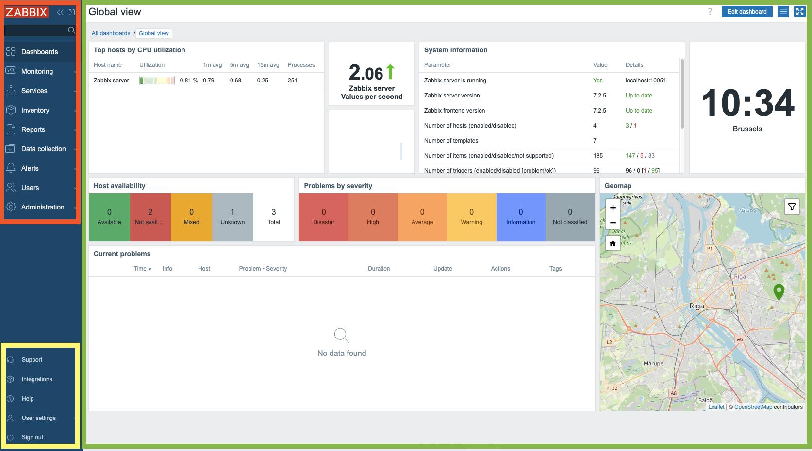
2.1 Overview
The main menu can be hidden by collapsing it completely or to reduce it to a set of small icons. When we click on the button with the 2 arrows to the left:
2.2 Collapse
You will see that the menu collapses to a set of small icons. Pressing ">>" will
bring the main menu back to it's original state.
When you click on the icon that looks like a box with an arrow sticking out, next
to the "<<" button will hide the main menu completely.
2.3 Hide
To bring back our main menu is rather easy, we just look for the button on the
left with three horizontal lines and click on it. This will show the main menu
but it won't stay. When we click on the box with the arrow now pointing to the bottom
right it will keep the main menu back in it's position.
Yet another way to make the screen bigger that is quite useful for monitors in NOK
teams for example is the kiosk mode button. This one however is located on the
left side of your screen and looks like 4 arrows pointing to every corner of the
screen. Pressing this button will remove all the menus and leave only the main window
to focus on.
2.4 Expand
When we want to leave the kiosk mode, the button will be changed to 2 arrows pointing to the inside of the screen. Pressing this button will revert us back to the original state.
2.5 Shrink
Tip
We can also enter and exit kiosk mode by making use of parameters in our Zabbix
url: /zabbix.php?action=dashboard.view&kiosk=1 - activate kiosk mode or
/zabbix.php?action=dashboard.view&kiosk=0 - activate normal mode.
Note
There are many other page parameters we can use. A full list can be found at https://www.zabbix.com/documentation/7.4/en/manual/web_interface/page_parameters Zabbix also has a global search menu that we can use to find hosts, host groups and templates.
If we type in the search box the word server you will see that we get an overview
of all templates, host groups and hosts with the name server in it. That's
why this is called the global search box.

2.6 Global search
This is our result after we looked for the word server. If you have a standard
Zabbix setup your page should look more or less the same.

2.7 Global search result
Main menu
We shall now briefly examine the constituent sections of the primary application
menu. The main menu, situated on the left hand interface, comprises a total
of nine distinct sections:
| Menu Name | Details |
|---|---|
| Dashboards | Contains an overview of all the dashboards we have access to. |
| Monitoring | Shows us the hosts, problems, latest data, maps, ... |
| Services | An overview of all the Services and SLA settings. |
| Inventory | An overview of our collected inventory data. |
| Reports | Shows us the system information, scheduled reports, audit logs, action logs, etc . |
| Data collection | Contains all things related to collecting data like hosts, templates, maintenance, discovery, ... |
| Alert | The configuration of our media types, scripts and actions |
| Users | User configuration like user roles, user groups, authentication, API tokes, ... |
| Administration | The administration part containing all global settings, housekeeper, proxies, queue, ... |
Links menu
Immediately subjacent to the primary application menu on the left-hand interface
resides the Links menu. This module furnishes a collection of pertinent hyperlinks
for user access.
| Menu name | Details |
|---|---|
| Support | This brings us to the technical support page that you can buy from Zabbix. Remember that your local partner is also able to sell these contracts and can help you in your own language. Your local distributors |
| Integrations | The official zabbix integration page |
| Help | The link to the documentation of your Zabbix version |
| User settings | The user profile settings. |
| Sign out | Log out of the current session. |
A few interactive elements remains to be addressed on the right-hand portion of the display.
2.8 Edit dashboard
The Edit dashboard button facilitates modification of the user's dashboard configuration,
a feature that will be elaborated upon in subsequent sections. Located on the extreme
left margin is a query mark icon ('?'), activation of which redirects the user to
the Zabbix documentation portal providing comprehensive details regarding
dashboard functionalities. Conversely, the control situated on the right margin,
represented by three horizontal lines, provides access to operations such as sharing,
renaming, and deletion of user defined dashboards.
System information
The dashboard also features a dedicated panel labeled System Information. This
widget provides a real-time overview of the operational status of the Zabbix deployment.
We will now examine the individual data points presented within this panel, as their
interpretation is crucial for system comprehension.
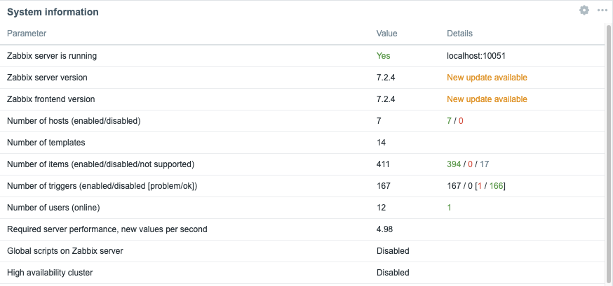
2.9 System Information
| Parameter | Value | Details |
|---|---|---|
| Zabbix server is running | The status of our zabbix server if it is running yes or no and if it is running on our localhost or another IP and on what port the zabbix server is listening. If no trapper is listening the rest of the information can not be displayed | IP and port of the Zabbix server |
| Zabbix server version | This shows us the version of the Zabbix server so the version you see at the bottom of your screen is the one from the Zabbix frontend and can be different but should be in the same major version. |
Version Number |
| Zabbix frontend version | This is the version of the frontend and should match with what you see at the bottom of your screen. | Version Number |
| Number of hosts (enabled/disabled) | The total number of hosts configured on our system | How many of those are enabled and disabled |
| Number of templates | The number of templates installed on our Zabbix server. | |
| Number of items (enabled/disabled/not supported) | This line shows us the number of items we have configured in total in this case 99 | 90 are enabled and 0 are disabled but 9 of them are unsupported. This last number is important as those are items not working. We will look into this later why it happens and how to fix it. For now remember that a high number of unsupported items is not a good idea. |
| Number of triggers (Enabled/disabled[problem/ok]) | The number of triggers configured | Number of enabled and disabled triggers. Just as with items we also see if there are triggers that are in a problem state or ok state. A trigger in a problem state is a non working trigger something we need to monitor and fix. We will cover this also later. |
| Number of users (online) | Here we see the number of users that are configured on our system | The number of users currently online. |
| Required server performance, nvps | The number of new values per second that Zabbix will process per second. | This is just an estimated number as some values we get are unknown so the real value is probably higher. So we can have some indication about how many IOPS we need and how busy our database is. A better indication is probably the internal item zabbix[wcache,values,all] |
| Global scripts on Zabbix server | It notifies us that the Global scripts are enabled or disabled in the server config. | Global scripts can be used in our frontend, actions, ... but need to be activated first |
| High availability cluster | It will show us if Zabbix HA cluster is disabled or not | Failover delay once HA is activated |
Note
Global script execution on Zabbix server can be enabled by going to the
zabbix server configuration file and setting EnableGlobalScripts=1. For new
installations, since Zabbix 7.0, global script execution on Zabbix server is
disabled by default.
Tip
System information may display some additional warnings like when your database doesn't have the correct character set or collation UTF-8. Also when the database you used is lower or higher then the recommended version or when there are misconfigurations on housekeeper or TimescaleDB. Another warning you can see is about database history tables that aren't upgraded or primary keys that have not been set. This is possible if you are coming from an older version before Zabbix 6 and never did the upgrade.
The main menu explained
It's important to know that we have seen so far our dashboard with the Admin user
and that this user is a Zabbix Super Admin user. This has a serious impact on
what we can see and do in Zabbix as this user has no restrictions. Zabbix works
with 3 different levels of users we have the regular users, Zabbix Admin and
Zabbix Super Admin users. Let's have a deeper look at the differences :
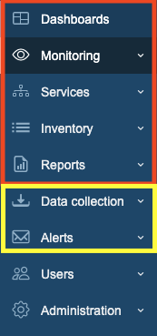
2.10 Main menu sections
- A
Zabbix Userwill only see the red part of ourmain menuand will only be able to see our collected data. - A
Zabbix Adminwill see the red part and the yellow part of themain menuand is able to change our configuration. - A
Zabbix Super Adminwill see the completemain menuand so is able to change the configuration and all the global settings.

2.11 Monitoring menu
- Problems: This page will give us an overview of all the problems. With filter we can look at recent problems past problems and problems that are active now. There are many more filters tor drill down more.
- Hosts: This will give us a quick overview page with what's happening on our hosts and allows us to quickly go to the latest data, graphs and dashboards.
- Latest data: This page I probably use the most, it shows us all the information collected from all our hosts.
- Maps: The location where we can create map that are an overview of our IT infrastructure very useful to get a high level overview of the network.
- Discovery: When we run a network discovery this is the place where we can find the results.
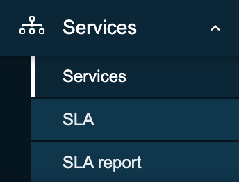
2.12 Services menu
- Services: This page will give us a high level overview of all services configured in Zabbix.
- SLA: An overview of all the SLAs configured in Zabbix.
- SLA Report: Here we can watch all SLA reports based on our filters.
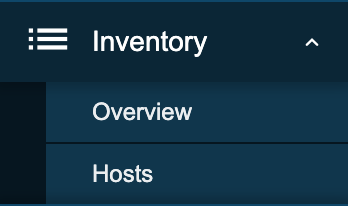
2.13 Inventory menu
- Overview: A place where we can watch all our inventory data that we have retrieved from our hosts.
- Hosts: Here we can filter by host and watch all inventory data for the hosts we have selected.
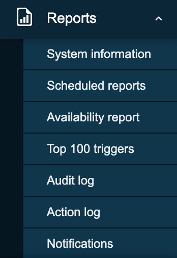
2.14 Inventory menu
- System information: System information is a summary of key Zabbix server and system data.
- Scheduled reports: The place where we can schedule our reports, a
pdfof the dashboard that will be sent at a specified time and date. - Availability report: A nice overview where we can see what trigger has
been in
ok/nokstate for how much % of the time - Top 100 triggers: Another page I visit a lot here we have our top list
with triggers that have been in a
NOKstate. - Audit log: An overview of the user activity that happened on our system. Useful if we want to know who did what and when.
- Action log: A detailed overview of our actions can be found here. What mail was sent to who and when ...?
- Notifications: A quick overview of the number of notifications sent to each user.
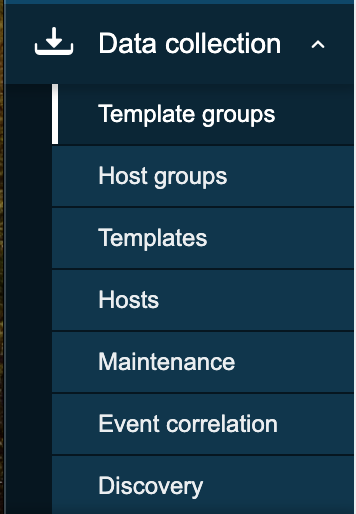
2.15 Data collection
- Template groups: A place to logical group all templates together in different groups. Before it was mixed together with hosts in host groups.
- Host groups: A logical collection of different hosts put together. Host groups are used for our permissions.
- Templates: A set off entities like items and triggers can be grouped together on a template, A template can be applied to one or more hosts.
- Hosts: What we need in Zabbix to monitor A host, application, service ...
- Maintenance: The place to configure our maintenance windows. A maintenance can be planned in this location.
- Event correlation: When we have multiple events that fires triggers related we can configure correlations in this place.
- Discovery: Sometimes we like to use Zabbix to discover devices, services,... on our network. This can be done here.
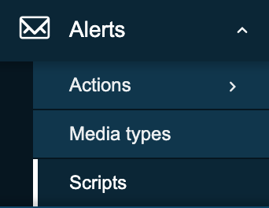
2.16 Alerts menu
- Actions: This menu allows us to configure actions based on
eventsin Zabbix. We can create such actions for triggers, services, discovery, autoregistration and internal events. - Media types: Zabbix can sent messages, emails etc ... based on the actions we have configured. Those media types need templates and need to be activated.
- Scripts: In Zabbix it's possible to make use of scripts in our actions and frontend. Those actions need to be created here first and configured.
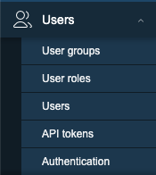
2.17 Users menu
- User groups: The
User groupsmenu section enables the creation and management of user groupings for streamlined access and permission control. - User roles: The
User rolesmenu section defines sets of permissions that can be assigned to individual users, limiting their allowed actions based on the user type they have within the system. - Users: The
Usersmenu section provides the interface for managing individual user accounts, including creation and modification settings. - API tokens: The
API tokensmenu section manages authentication credentials specifically designed for programmatic access to the system's Application Programming Interface (API), enabling secure automation and integration with external applications. - Authentication: The
Authenticationmenu section configures the methods and settings used to verify user identities and control access to the system.

2.18 Administration menu
- General: The
Generalmenu section within administration allows configuration of core system-wide settings and parameters. - Audit log: The
Audit logmenu section provides a chronological record of system activities and user actions for security monitoring and troubleshooting. - Housekeeping: The
Housekeepingmenu section configures automated maintenance tasks for managing historical data and system performance. - Proxies: The
Proxiesmenu section manages the configuration and monitoring of proxy servers used for communication with managed hosts in distributed environments. - Macros: The
Macrosmenu section allows the definition and management of global variables for flexible system configuration. - Queue: The
Queuemenu section provides real-time insight into the processing status of internal system tasks and data handling.
Info
More information can be found in the online Zabbix documentation here
Info
You will see that Zabbix is using the modal forms in the frontend on many places.
The problem is that they are not movable. This
module created by one of the Zabbix developers UI Twix will solve this problem
for you.
Note
At time of writing there is no Dashboard import/export functionality in zabbix. So when upgrading dashboards it needs to be created by hand. It was on the roadmap for 7 but didn't made it so feel free to vote https://support.zabbix.com/browse/ZBXNEXT-5419
Conclusion
Questions
Useful URLs
Host Groups
In Zabbix, host groups serve as a foundational mechanism for organizing monitored entities. They allow you to logically categorize hosts for easier management, simplified permissions, and streamlined configuration, especially useful in larger environments.
Common examples include:
- Grouping all Linux servers together.
- Separating database servers (e.g., PostgreSQL, MySQL).
- Organizing hosts by team, location, or function.
Host groups are not only for structuring your monitored hosts, they also play an important role in assigning templates, setting up user permissions, and filtering hosts in dashboards or maps.
Accessing Host Groups
You can manage host groups by navigating to:
Menu → Data collection → Host groups
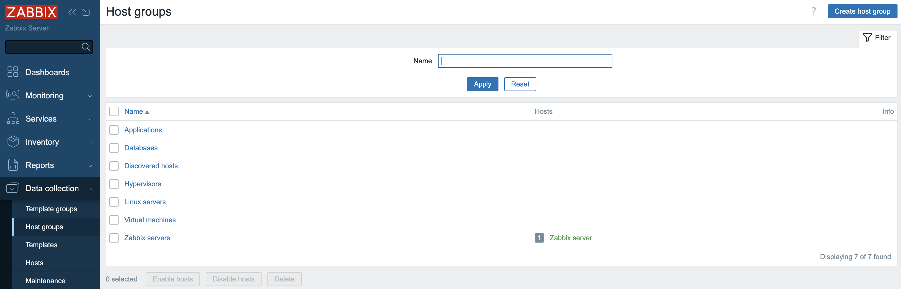
2.19 Host Groups menu
In this menu under Data collection, you'll notice two distinct sections:
- Host groups: Groups that contain hosts.
- Template groups: A newer addition, specifically created for organizing templates.
Info
If you're migrating from an older Zabbix version: In previous versions, templates and hosts were often placed in the same groups. This led to confusion, particularly for new users, as templates don't technically belong to host groups in Zabbix. As of recent versions (starting from Zabbix 6.x), template groups are separated out for better clarity.
Understanding the Host Groups Overview
When you open the Host groups menu, you'll see a list of predefined groups. Each group entry includes:
- Group name (e.g.,
Linux servers) - Number of hosts in the group (displayed as a number in front)
- Host names currently assigned to that group
Clicking on a host name will take you directly to the host's configuration screen, providing a convenient way to manage settings without navigating through multiple menus.
Creating a Host Group
There are two main ways to create host groups:
1. During Host Creation
When adding a new host:
- Go to Data collection → Hosts.
- Click Create host (top right).
- In the Host groups field, select an existing group or type a new name to create one on the fly.
2. From the Host Groups Page
- Navigate to Data collection → Host groups.
- Click Create host group in the top right.
- Enter a Group name and click Add.
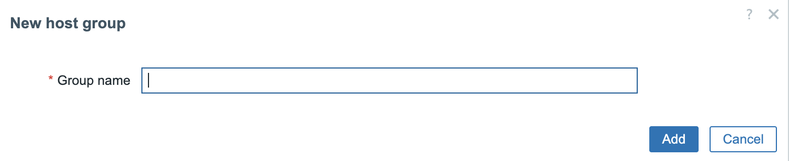
2.20 Create new host groups
Nested Host Groups
Zabbix supports nested host groups using forward slashes (/) in group names.
This allows you to represent hierarchies such as:
Europe/BelgiumEurope/FranceDatacenters/US/Chicago
These nested group names are just names Zabbix does not require that parent
folders (e.g., Europe) physically exist as separate groups unless you explicitly
create them.
Note
- You cannot escape the
/character. - Group names cannot contain leading/trailing slashes or multiple consecutive slashes.
/is reserved for nesting and cannot be used in regular group names.
Applying Permissions and Tag Filters to Nested Groups
Once you've created nested groups, the Host group overview screen provides an option to apply permissions and tag filters to all subgroups:
- Click on a parent group (e.g.,
Europe). - A box appears: Apply permissions and tag filters to all subgroups.
- Enabling this will cascade any rights assigned to the parent group down to its subgroups.
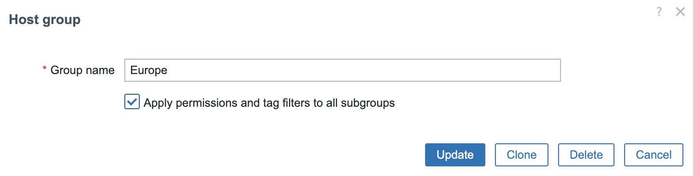
2.21 subgroup permissions
This is especially useful for user groups. For example:
- If Brian is in a user group with access to
Europe/Belgium, enabling this option allows Brian to see all hosts in subgroups likeEurope/Belgium/GentorEurope/Belgium/Brussels, including their tags and data.
Best Practices
- Use a consistent naming convention:
Location/Function,Team/Environment, etc. - Assign hosts to multiple groups if they logically belong in more than one.
- Avoid overly deep nesting keep it readable and manageable.
- Regularly review group usage and clean up unused or outdated groups.
Tip
You can even try adding emojis to group names for a fun visual touch! 🎉
For example: 🌍 Europe/🇧🇪 Belgium or 📦 Containers/Docker.
Conclusion
Host groups are a key organizational tool in Zabbix. With the introduction of template groups, clearer group separation, and support for nested structures, modern versions of Zabbix offer great flexibility for tailoring your monitoring setup to your organization's structure and workflows.
Questions
- What are host groups used for in Zabbix?
- Can you assign a host to more than one group?
- How are nested groups created in Zabbix?
- What happens when you apply permissions to subgroups?
- Why are slashes (/) special in host group names?
- Can a parent group exist only logically (i.e., not created in Zabbix)?
Useful URLs
User groups
External authentication
HTTP
LDAP / AD
SAML
Integrating Security Assertion Markup Language (SAML) for authentication within Zabbix presents a non-trivial configuration challenge. This process necessitates meticulous management of cryptographic certificates and the precise definition of attribute filters. Furthermore, the official Zabbix documentation, while comprehensive, can initially appear terse.
Initial Configuration: Certificate Generation
The foundational step in SAML integration involves the generation of a private key
and a corresponding X.509 certificate. These cryptographic assets are critical
for establishing a secure trust relationship between Zabbix and the Identity Provider
(IdP).
By default, Zabbix expects these files to reside within the ui/conf/certs/
directory. However, for environments requiring customized storage locations, the
zabbix.conf.php configuration file allows for the specification of alternative
paths.
Let,s create our private key and certificate file.
bash
cd /usr/share/zabbix/ui/conf/certs/
openssl req -newkey rsa:2048 -nodes -keyout sp.key -x509 -days 365 -out sp.crt
Following the generation and placement of the Zabbix Service Provider (SP) certificates, the next critical phase involves configuring the Identity Provider (IdP). In this context, we will focus on Google Workspace as the IdP.
Retrieving the IdP Certificate (idp.crt) from Google Workspace:
- Access the Google Workspace Admin Console: Log in to your Google Workspace administrator account.
- Navigate to Applications: Within the admin console, locate and select the "Apps" section.
- Access Web and Mobile Apps: Choose
Web and mobile appsfrom the available options. - Create a New Application: Initiate the creation of a new application to
facilitate SAML integration. This action will trigger Google Workspace to generate
the necessary IdP certificate.

2.22 create new application
- Download the IdP Certificate: Within the newly created application's settings, locate and download the idp.crt file. This certificate is crucial for establishing trust between Zabbix and Google Workspace.
- Placement of idp.crt: Copy the downloaded
idp.crtfile to the same directory as the SP certificates in Zabbix, underui/conf/certs/.

2.23 add certificate
SAML Attribute Mapping and Group Authorization
A key aspect of SAML configuration is the mapping of attributes between Google Workspace and Zabbix. This mapping defines how user information is transferred and interpreted.
Attribute Mapping:
- It is strongly recommended to map the Google Workspace "Primary Email" attribute to the Zabbix "Username" field. This ensures seamless user login using their Google Workspace email addresses.
- Furthermore, mapping relevant Google Workspace group attributes allows for granular control over Zabbix user access. For instance, specific Google Workspace groups can be authorized to access particular Zabbix resources or functionalities.
Group Authorization:
- Within the Google Workspace application settings, define the groups that are authorized to utilize SAML authentication with Zabbix.
- This configuration enables the administrator to control which users can use SAML to log into Zabbix.
- In Zabbix, you will also need to create matching user groups and configure the authentication to use those groups.
Configuration Example (Conceptual):
- Google Workspace Attribute: "Primary Email" -> Zabbix Attribute: "Username"
- Google Workspace Attribute: "Group Membership" -> Zabbix Attribute: "User Group"
This attribute mapping ensures that users can log in using their familiar Google Workspace credentials and that their access privileges within Zabbix are determined by their Google Workspace group memberships.

2.24 SAML mappings
Zabbix SAML Configuration
With the IdP certificate and attribute mappings established within Google Workspace, the final step involves configuring Zabbix to complete the SAML integration.
Accessing SAML Settings in Zabbix:
- Navigate to User Management: Log in to the Zabbix web interface as an administrator.
- Access Authentication Settings: Go to "Users" -> "Authentication" in the left-hand menu.
- Select SAML Settings: Choose the "SAML settings" tab.
Configuring SAML Parameters:
Within the "SAML settings" tab, the following parameters must be configured:
- IdP Entity ID: This value uniquely identifies the Identity Provider (Google Workspace in this case). It can be retrieved from the Google Workspace SAML configuration metadata.
- SSO Service URL: This URL specifies the endpoint where Zabbix should send authentication requests to Google Workspace. This URL is also found within the Google Workspace SAML configuration metadata.
- Retrieving Metadata: To obtain the IdP entity ID and SSO service URL, within
the Google Workspace SAML application configuration, select the option to
Download metadata. This XML file contains the necessary values. - Username Attribute: Set this to "username." This specifies the attribute within the SAML assertion that Zabbix should use to identify the user.
- SP Entity ID: This value uniquely identifies the Zabbix Service Provider. It should be a URL or URI that matches the Zabbix server's hostname.
- Sign: Select
Assertions. This configures Zabbix to require that the SAML assertions from Google Workspace are digitally signed, ensuring their integrity.
Example Configuration (Conceptual)
- IdP entity ID: https://accounts.google.com/o/saml2?idpid=your_idp_id
- SSO service URL: https://accounts.google.com/o/saml2/idp/SSO?idpid=your_idp_id&SAMLRequest=your_request
- Username attribute: username
- SP entity ID: https://your_zabbix_server/zabbix
- Sign: Assertions

2.25 SAML config
Additional Configuration Options:
The Zabbix documentation provides a comprehensive overview of additional SAML configuration options. Consult the official Zabbix documentation for advanced settings, such as attribute mapping customization, session timeouts, and error handling configurations.
Verification and Testing:
After configuring the SAML settings, it is crucial to thoroughly test the integration. Attempt to log in to Zabbix using your Google Workspace credentials. Verify that user attributes are correctly mapped and that group-based access control is functioning as expected.
Troubleshooting:
If authentication fails, review the Zabbix server logs and the Google Workspace audit logs for potential error messages. Ensure that the certificate paths are correct, the attribute mappings are accurate, and the network connectivity between Zabbix and Google Workspace is stable.
SAML Media Type mappings
After successfully configuring SAML authentication, the final step is to integrate media type mappings directly within the SAML settings. This ensures that media delivery is dynamically determined based on SAML attributes.
Mapping Media Types within SAML Configuration:
- Navigate to SAML Settings: In the Zabbix web interface, go to "Users" -> "Authentication" and select the "SAML settings" tab.
- Locate Media Mapping Section: Within the SAML settings, look for the section related to media type mapping. This section might be labeled "Media mappings" or similar.
- Add Media Mapping: Click "Add" to create a new media type mapping.
- Select Media Type: Choose the desired media type, such as "Gmail relay."
- Specify Attribute: In the attribute field, enter the SAML attribute that contains the user's email address (typically "username," aligning with the primary email attribute mapping).
- Configure Active Period : Specify the active period for this media type. This allows for time-based control of notifications.
- Configure Severity Levels: Configure the severity levels for which this media type should be used.
Example Configuration (Conceptual):
- Media Type: Gmail relay
- Attribute: username
- Active Period: 08:00-17:00 (Monday-Friday)
- Severity Levels: High, Disaster
Rationale:
By mapping media types directly within the SAML configuration, Zabbix can dynamically determine the appropriate media delivery method based on the SAML attributes received from the IdP. This eliminates the need for manual media configuration within individual user profiles when SAML authentication is in use.
Key Considerations:
- Ensure that the SAML attribute used for media mapping accurately corresponds to the user's email address.
- Verify that the chosen media type is correctly configured within Zabbix.
- Consult the Zabbix documentation for specific information about the SAML media mapping functionality, as the exact configuration options may vary depending on the Zabbix version.
Final Configuration: Frontend Configuration Adjustments
After configuring the SAML settings within the Zabbix backend and Google Workspace, the final step involves adjusting the Zabbix frontend configuration. This ensures that the frontend correctly handles SAML authentication requests.
Modifying zabbix.conf.php:
-
Locate Configuration File: Access the Zabbix frontend configuration file, typically located at /etc/zabbix/web/zabbix.conf.php.
-
Edit Configuration: Open the zabbix.conf.php file using a text editor with root or administrative privileges.
-
Configure SAML Settings: Within the file, locate or add the following configuration directives:
php
// Uncomment to override the default paths to SP private key, SP and IdP X.509 certificates,
// and to set extra settings.
$SSO['SP_KEY'] = 'conf/certs/sp.key';
$SSO['SP_CERT'] = 'conf/certs/sp.crt';
$SSO['IDP_CERT'] = 'conf/certs/idp.crt';
//$SSO['SETTINGS'] = [];
MS Cloud
Okta
Multi factor authentication
We all know that before you can start configuring Zabbix via WebUI you have to sign in. Zabbix has several options to provide better security for user passwords by configuring password policy:
- Requirement for Minimum password length
- Requirements for password to contain an uppercase and a lowercase Latin letter, a digit, a special character
- Requirement to avoid easy-to-guess passwords
To secure sign in process even more you can configure multi factor authentication (MFA). MFA protects Zabbix by using a second source of validation before granting access to its WebUI after a user enters his/her password correctly. Zabbix offers to types of MFA - Time-based one-time password (TOTP) and Duo MFA provider.
Time-based one-time password
In the menu select Users section and then Authentication

Now in MFA settings tab select the Enable multi-factor authentication check-box,
then select TOTP in Type drop-down list.

In Hash function drop-down list you can choose SHA-1, SHA-256 or SHA-512, the higher
number is the better security.
In Code lentgh you can select how many digits will be generated for you by Authenticator
application on your phone.
Click Add and then Update. Now you have TOTP MFA configured and it is the default
method of MFA.

Now you need to tell Zabbix for which User group (or groups) to use MFA. Let's create a User group that would require MFA.
In the menu select Users section and then User groups, then click Create user
group button

In Group name put "test". Note that Multi-factor authentication field is "Default",
as currently we have only one MFA method configured it does not matter whether we
select "Default" or "TOTP1" that we created above. You also can disable MFA for
all users belonging to this User group. Click Add button to create "test" User
group.

Note
MFA method is defined on per User group basis, i.e. MFA method configured for a User group will be applied to all users belonging to this group.
Let's add a user to this user group. In the menu select Users section and then
Users, then click Create user button

Fill in Username, Password and Password (once again) fields. Make sure you
select test user group in Groups field.

Then switch to Permissions tab and select any role.

Click Add button to add the user.
Now we can test how TOTP MFA works. Sign out and then try to sign in as a test user
you just created. You will be presented with a QR code. That means that the user
test has not been enrolled in TOTP MFA yet.

On your phone you need to install either "Microsoft authenticator" or "Google authenticator"
application. The procedure of adding new QR code is quite similar, here is how it
looks in "Google authenticator". Tap Add a code and then Scan a QR code. You'll
be immediately presented with a 6 digit code (remember we selected 6 in Code length
when we configured TOTP MFA?)


Enter this code into Verification code field of your login screen and click
Sign in, if you did everything right you are logged in into Zabbix at this point.
At this point the user "test" is considered enrolled into TOTP MFA and Zabbix stores
a special code used for further authentications in its database. The next time
user "test" tries to login into Zabbix there will be only a field to enter
verification code

Warning
For TOTP MFA to work your Zabbix server must have correct time. Sometimes it's not the case especially if you are working with containers so pay attention to this.
If a user changes (or loses) his/her phone, then Zabbix administrator should reset
his/her enrolment. To do that in the menu select Users then mark a check-box to
the left of "test" user and click "Reset TOTP secret" button.

After you reset TOTP secret the "test" user will have to undergo enrolment procedure again.
Duo MFA provider
Duo is a very famous security platform that provides a lot of security related features/products. To read more please visit Duo. Here we'll talk about Duo only in regards to Zabbix MFA.
Warning
For Duo MFA to work your Zabbix WebUI must be configured to work with HTTPS (valid certificate is not required, self-signed certificate will work).
First of all you need to create an account with Duo (it's free to manage up to
10 users) then login into Duo, you are an admin here. In the menu on the left select
Applications and click Protect an Application button.

Then you will see WebSDK in applications list, click on it

Here you'll see all the data needed for Zabbix.

Now let's go to Zabbix. First we need to configure Duo MFA method. In the menu select
Users and click Authentication. Then on MFA settings tab click Add in
Methods section.

Fill in all the fields with data from Duo Dashboard -> Applications -> Web SDK page
(see screenshot above) and click Add, then click Update to update Authentication
settings.

After the MFA method is configured let's switch the "Test" group to use Duo MFA.
In the menu select Users and click User groups, then click "test" group. In
the field Multi-factor authentication select "DUO1" and click Update.

Everything is ready. Let's test it. Sign out of Zabbix and sign back in with "test"
user. You should see a welcome screen from Duo. Click several Next buttons.


Then you need to select the method of authentication.

It is up to you what to select you can experiment with all these methods. Let's
select "Duo Mobile" (you need to install "Duo mobile" application on your device).
Click I have a tablet (it's just easier to activate your device this way) and
confirm that you installed "Duo mobile" on your phone. At this point you should
see a QR code that you need to scan in "Duo mobile" application.


Open "Duo mobile" on your phone. If you did not have this application previously installed (thus no accounts enrolled) you will see couple of welcome screens.


Tap on "Use a QR code" and then scan the code presented by Duo in your Zabbix login screen. After you do that you will see that the account is enrolled to your Duo MFA. Enter account name and tap "Done" and you will see the account in the list of all accounts enrolled into Duo MFA on this device. In Zabbix WebUI you will also see a confirmation, click "Continue".


Duo will ask you now whether you want to add another method of authentication,
click Skip for now and you'll see a confirmation that set up completed. Click
Login with Duo and a notification will be pushed to your device.


Now just tap on "Approve" on your device and you will be logged in into Zabbix.

Duo MFA enrolment complete. If you sign out and sign in back then immediately a push notification will be sent to your device and all you need is tap on "Approve". Also you will see the user "test" in Duo where you can delete the user, or deactivate just click on it and experiment.

Conclusion
In conclusion, integrating external authentication mechanisms like SAML with Zabbix significantly enhances security and streamlines user management. While the configuration process involves meticulous steps across both the Zabbix backend and frontend, as well as the external Identity Provider, the benefits are substantial. By centralizing authentication, organizations can enforce consistent access policies, simplify user onboarding and offboarding, and improve overall security posture. Ultimately, external authentication provides a robust and scalable solution for managing user access within complex Zabbix environments.
Questions
Useful URLs
Chapter 03 : Proxies and Webcomponents
Proxies and the Web services component
Proxies are often regarded as an advanced topic in Zabbix, but in reality, they are a fundamental part of many installations and one of the first components we set up for numerous customers. In this chapter, we'll make proxies the third subject we cover, encouraging you to consider them from the very beginning of your Zabbix journey.
We'll start with a basic proxy setup, providing straightforward steps to get you up and running quickly. Then, we'll take a deep dive into the mechanics of proxies how they operate within the Zabbix ecosystem, their benefits, and the critical role they play in distributing monitoring load and enhancing system scalability.
Understanding proxies from the start can significantly improve your architecture, especially in distributed or large scale environments. Whether you're new to Zabbix or looking to refine your existing setup, this chapter will offer valuable insights into why proxies should be an integral part of your monitoring strategy from the start.
By the end, you'll not only know how to set up a basic proxy but also have a clear understanding of their underlying workings and strategic advantages, ensuring you make informed decisions as you scale your Zabbix installation.
Proxy basics
In this chapter we will cover the basic needs for our proxies. We won't pay attention to active or passive proxies yet this is something we cover later in the next chapters.
Proxy requirements
If you like to setup a few proxies for test or in your environment you will need a few Linux hosts to install the Proxies on. Proxies are also available in containers so a full VM is not needed. However here we will use a VM so we can show you how to install a proxy. Don't worry we will cover containers as well. When it comes to proxies they are very lightweight however since Zabbix 4.2 Proxies are able to do Item value preprocessing and this can use a lot of CPU power. So the number of CPUs and memory will depends on how many machines you will monitor and how many preprocessing rules you have on your hosts.
So in short a Zabbix proxy can be used to:
- Monitor remote locations
- Monitor locations that have unreliable connections
- Offload the Zabbix server when monitoring thousands of devices
- Simplify the maintenance and management
Note
Imagine that you need to restart your Zabbix server and that all proxies start to push the data they have gathered during the downtime of the Zabbix server. This would create a huge amount of data being sent at once to the Zabbix server and bring it to its knees in no time. Since Zabbix 6 Zabbix has added protection for overload. When Zabbix server history cache is full the history cache write access is being throttled. Zabbix server will stop accepting data from proxies when history cache usage reaches 80%. Instead those proxies will be put on a throttling list. This will continue until the cache usage falls down to 60%. Now server will start accepting data from proxies one by one, defined by the throttling list. This means the first proxy that attempted to upload data during the throttling period will be served first and until it's done the server will not accept data from other proxies.
This table gives you an overview of how and when throttling works in Zabbix.
| History write cache usage | Zabbix server mode | Zabbix server action |
|---|---|---|
| Reaches 80% | Wait | Stops accepting proxy data, but maintains a throttling list (prioritized list of proxies to be contacted later). |
| Drops to 60% | Throttled | Starts processing throttling list, but still not accepting proxy data. |
| Drops to 20% | Normal | Drops the throttling list and starts accepting proxy data normally. |
Active versus Passive proxy
Zabbix proxies have been available since Zabbix 1.6, at that time they where available
only as what we know today as Active proxies. Active means that the proxy will
initiate the connection by itself to the Zabbix Server. Since version 1.8.3 passive
proxies where introduced. This allowed the server to connect to the proxy. As mentioned
before Zabbix agents can be both active and passive however proxies cannot be both
so we have to choose the way of the communication when we install a proxy. Just
remember that choosing the proxy mode active or passive has no impact on how
Zabbix agents can communicate with our proxy. It's perfectly fine to have an
active proxy and a passive agent working together.
Active proxy
A proxy in active mode will be the one in control of all the settings like the when
it looks for new configuration changes and pushes new data to the server.
In a standard setup the active proxy will sent it's data every second to the
Zabbix server reload it's config every 10 seconds.
The most important options for an active proxy that we need to remember are changed
in the Zabbix proxy configuration file only.
- ProxyMode: 0
- Server: IP or DNS of the Zabbix server
- Hostname: Proxy name this needs to be exact the same as configured in the frontend.
- ProxyOfflineBuffer: How long we like to keep data in the DB (in hours) if
we can' contact the
Zabbix server. - ProxyLocalBuffer: How long we like to keep data in the DB (in hours) even
we have sent it already to the
Zabbix server. - ProxyConfigFrequency: Replaces ConfigFrequency and defines how often we
request configuration updates (every 10 seconds) from the
Zabbix server. - DataSenderFrequency: How often data is sent to
Zabbix server(every second)
When it comes to configuring the needed resources for the Active proxy we have
to realise that the proxy can use up to 2 trapper items on the Zabbix server
when it tries to connect. One will be used to sent the actual data and the other
trapper will be used to retrieve new configuration changes. So it's best practice
to configure 2 trappers per Active proxy on the server side.

3.1 Active proxy communication
Info
Before Zabbix 7.0 a proxy would reload it's configuration once every 3600 seconds. This has been changed since Zabbix 7.0 as they way proxies handle updates have been optimized.
Warning
Before you continue with the setup of your active or passive proxy make sure
your OS is properly configure like explained in our chapter Getting Started
=> System Requirements. As it's very important to have your firewall and
time server properly configured.
Passive proxy
A proxy in passive mode will have all settings controlled by the Zabbix server.
The most important options for a passive proxy that we need to remember are changed
in the Zabbix server configuration file and the Zabbix proxy as it is the server
that controls when and how proxy data is requested by making use of pollers.
The most important setting we can find back in the proxy configuration file are:
- ProxyMode:1 (passive)
- Server: IP or DNS of the
Zabbix server - ProxyLocalBuffer: How long we like to keep data in the DB (in hours) even
we have sent it already to the
Zabbix server. - ProxyLocalBuffer: How long we like to keep data in the DB (in hours) even
we have sent it already to the
Zabbix server.
And finally the config settings we need to change on our Zabbix server:
- StartProxyPollers: The number of pollers to contact proxies
- ProxyConfigFrequency: Replaces ConfigFrequency and defines how often
Zabbix serverwill sent configuration changes to our proxies. - ProxyDataFrequency: How often
Zabbix serverwill request data from our proxies.

3.2 Passive proxy communication
Proxy configuration changes
Before Zabbix 7.0, a full configuration synchronization was performed by proxies every 3600 seconds (1 hour) by default. With the introduction of Zabbix 7.0, this behavior changed significantly. Now, configuration synchronization occurs much more frequently, every 10 seconds by default, but it's an incremental update. This means that instead of transferring the entire configuration, only the modified entities are synchronized, greatly improving efficiency and reducing network overhead.
Upon initial proxy startup, a full configuration synchronization is still performed. Subsequently, both the server and the proxy maintain a revision of the configuration. When a change is made on the server, only the differences, based on these revision numbers, are applied to the proxy's configuration, rather than a complete replacement of the entire configuration as in older versions. This incremental approach allows for near real-time propagation of configuration changes while minimizing resource consumption.
Proxy runtime control options
Just like the Zabbix server our proxy supports runtime control options always
check latest options with the --help option. But here is a short overview of
options available to use.
- zabbix_proxy --runtime-control housekeeper_execute
- zabbix_proxy --runtime-control log_level_increase=target
- zabbix_proxy --runtime-control log_level_decrease=target
- zabbix_proxy --runtime-control snmp_cache_reload
- zabbix_proxy --runtime-control diaginfo=section
Proxy firewall
Our proxies work like small Zabbix servers so when it comes to the ports to connect
to agents, SNMP, ... nothing changes all ports need to be configured same as on
your server.
When it comes to port for the proxy it depends on our proxy being active or passive.
- Active Proxy: Zabbix server needs to have port
10051/tcpopen so proxy can connect. - Passive Proxy: Needs to have port
10051/tcpopen on the proxy so that theservercan connect to the proxy.
Active and Passive proxies
Active proxies
Let's first start with the setup of an active Proxy. Things should be very simple to setup. The only thing we need to have for now is a working Zabbix installation. The underlying OS is not important.
Zabbix GUI configuration
There are 2 things we need to to when we like to setup a Zabbix proxy and one of
those steps is adding the proxy in the frontend of Zabbix. So from the menu let's select
Administration => Proxies and click in the upper right corner on Create proxy.

3.3 Create proxy
Once pressed a new modal form will pop-up where we need to fill in some information.
For active proxies we only need to enter the Proxy name field. Here we will enter
ProxyA to remind us this will be an active proxy.
Don't worry about the other fields we will cover them later. In the Description
field you could enter some text to make it even more clear that this is an active proxy.
Note
For Zabbix active proxies, you only need to specify the hostname during configuration. This hostname acts as the unique identifier that the Zabbix server uses to distinguish between different active proxies and manage their data correctly.

3.4 New proxy
Our next step involves installing the proxy binaries on our OS. If you don't
remember how to this or aren't sure then let's have a look at Chapter 01 =>
Basic Installation.
Installing the proxy
Next up, we need to get the Zabbix proxy software onto your system. If you're not
sure how to do this or need a reminder, take a quick peek at Chapter 1, called
Basic Installation. It walks you through the whole process.
Now that your system knows where to find the Zabbix software, we can actually install it. It's pretty simple, but there's one thing we need to decide upfront. Zabbix proxies need a place to store their information, and they can use one of three options: MySQL, PostgreSQL, or SQLite3.
We will only cover SQlite as MySQL and PostgreSQL are basically already covered
in Chapter 1, the Basic installation.
Note
The only thing that is a bit different when you setup a proxy with MySQL or
PostgreSQL are the scripts you need to setup the DB structure. for MySQL they
are located under /usr/share/zabbix/sql-scripts/mysql/proxy.sql for PostgreSQL
they can be found at /usr/share/zabbix/sql-scripts/postgresql/proxy.sql.
Make sure you always check the correct Zabbix documentation for your version
as they have been moved to different locations over time even.
https://www.zabbix.com/documentation/current/en/manual/installation/install_from_packages/rhel#proxy-installation
Install zabbix-proxy-sqlite3
Red Hat
Ubuntu
Note
If you want to use MySQL or PostgreSQL then you can use the package zabbix-proxy-mysql
or zabbix-proxy-pgsql depending on your needs.
Now that we have installed the needed package we still have to do a few configuration
changes. Let's edit our file /etc/zabbix/zabbix_proxy.conf with your favourite editor.
There are only a few lines we need to alter. The first option we will have to check
is ProxyMode. Since we want to configure our proxy as active it needs to have
value 0 lucky for us this is the default value.
The other option that is important is the option Server this is standard 127.0.0.1
and we need to replace this with the IP or DNS name of our zabbix server.
Note
You can fill in multiple servers here in case you have more then 1 zabbix server
connecting to your proxy. Also the port can be added here in case your server
listens on another port then the standard port 10051. Just be careful to not
add the IP and DNS name for the same server as this can return double values.
Another important option is Hostname remember in our frontend we gave our proxy
the name ProxyA now we have to fill in the exact same name here for hostname.
Just like a zabbix agent in active mode Zabbix server will use the name as a
unique identifier.
The last parameter that we need to set is DBName this is the name for our database
and since we work with SQLite3 there is no need to create a database, Zabbix can
handle this for us. Let's use the following configuration DBName=/home/zabbix/zabbix_proxy.
Before we can start our proxy we need to create the correct folder.
sudo mkdir /home/zabbix and add the correct rights. sudo chown zabbix: /home/zabbix/
Note
A list of all configuration options can be found in the Zabbix documentation.
Info
One important new configuration parameter that was added in 7.0 is ProxyBufferMode.
In Proxies that where installed before 7.0 the data was first written to
disk in the database and then sent to the Zabbix server. For these installations
when we upgrade this remains the default behavior after upgrading to Zabbix 7.x or higher.
It's now recommended for performance reasons to use the new setting hybrid
and to define the ProxyMemoryBufferSize.
The Zabbix proxy uses a temporary space to hold data before sending it to the main server. There are two ways this works.
-
In 'hybrid' mode: this temporary space has a safety feature. If the proxy stops, if the space gets full, or if the data has been there for too long, the proxy will save everything to the database to prevent any loss. After saving, it goes back to its normal temporary holding.
-
In 'memory' mode: it only uses this temporary space without the extra saving step. This is faster, but it means that if the proxy stops or the temporary space overflows, any data that hasn't been sent yet will be lost.
Once you have made all the changes you need in the config file besides the once
we have covered we only need to enable the service and start our proxy.
Of course don't forget to open the firewall port 10051 on your Zabbix server
side as this is an active proxy.
!!! info "enable and start the proxy service"
Red Hat & Ubuntu
```
sudo systemctl enable zabbix-proxy --now
```
If all goes well we can check the log file from our proxy and we will see that Zabbix has created the database by itself.
sudo tail -f /var/log/zabbix/zabbix_proxy.log
11134:20250519:152232.419 Starting Zabbix Proxy (active) [Zabbix proxy]. Zabbix 7.4.0beta2 (revision 7cd11a01d42).
11134:20250519:152232.419 **** Enabled features ****
11134:20250519:152232.419 SNMP monitoring: YES
11134:20250519:152232.419 IPMI monitoring: YES
11134:20250519:152232.419 Web monitoring: YES
11134:20250519:152232.419 VMware monitoring: YES
11134:20250519:152232.419 ODBC: YES
11134:20250519:152232.419 SSH support: YES
11134:20250519:152232.419 IPv6 support: YES
11134:20250519:152232.419 TLS support: YES
11134:20250519:152232.419 **************************
11134:20250519:152232.419 using configuration file: /etc/zabbix/zabbix_proxy.conf
11134:20250519:152232.419 cannot open database file "/home/zabbix/zabbix_proxy": [2] No such file or directory
11134:20250519:152232.419 creating database ...
11134:20250519:152232.478 current database version (mandatory/optional): 07030032/07030032
11134:20250519:152232.478 required mandatory version: 07030032
You are now ready. Your proxy will behave like the Zabbix server from now on all
hosts will need to connect to the proxy with their config instead of the Zabbix server.

3.5 Active proxy configured
Passive Proxy
Just like with the setup of our active proxy we need a working Zabbix server and a extra VM with Ubuntu or Rocky so we can install a proxy.
Zabbix GUI configuration
There are 2 things we need to to when we like to setup a Zabbix proxy and one of
those steps is adding the proxy in the frontend of Zabbix. So from the menu let's select
Administration => Proxies and click in the upper right corner on Create proxy.
3.6 Create proxy
Once pressed a new modal form will pop-up where we need to fill in some information.
For active proxies we only need to enter the Proxy name field. Here we will enter
ProxyP to remind us this will be a passive proxy.
For the passive proxy we also need to specify the Interface field. Here we add
the IP of the host where our proxy runs on. You also notice that we use the same port
10051 as the Zabbix server to communicate with our proxy.
Don't worry about the other fields we will cover them later. In the Description
field you could enter some text to make it even more clear that this is a passive proxy.

3.7 New passive proxy
Our next step involves installing the proxy binaries on our OS. If you don't
remember how to this or aren't sure then let's have a look at Chapter 01 =>
Basic Installation.
Installing the proxy
Next up, we need to get the Zabbix proxy software onto your system. If you're not
sure how to do this or need a reminder, take a quick peek at Chapter 1, called
Basic Installation. It walks you through the whole process.
Now that your system knows where to find the Zabbix software, we can actually install it. It's pretty simple, but there's one thing we need to decide upfront. Zabbix proxies need a place to store their information, and they can use one of three options: MySQL, PostgreSQL, or SQLite3.
We will only cover SQlite as MySQL and PostgreSQL are basically already covered
in Chapter 1, the Basic installation.
Note
The only thing that is a bit different when you setup a proxy with MySQL or
PostgreSQL are the scripts you need to setup the DB structure. for MySQL they
are located under /usr/share/zabbix/sql-scripts/mysql/proxy.sql for PostgreSQL
they can be found at /usr/share/zabbix/sql-scripts/postgresql/proxy.sql.
Make sure you always check the correct Zabbix documentation for your version
as they have been moved to different locations over time even.
https://www.zabbix.com/documentation/current/en/manual/installation/install_from_packages/rhel#proxy-installation
Install zabbix-proxy-sqlite3
Red Hat
Ubuntu
Note
If you want to use MySQL or PostgreSQL then you can use the package zabbix-proxy-mysql
or zabbix-proxy-pgsql depending on your needs.
Now that we have installed the needed package we still have to do a few configuration
changes. Let's edit our file /etc/zabbix/zabbix_proxy.conf with your favourite editor.
There are only a few lines we need to alter. The first option we will have to check
is ProxyMode. Since we want to configure our proxy as passive it needs to have
value 1. Note that the default value is 0 for Active.
The other option that is important is the option Server this is standard 127.0.0.1
and we need to replace this with the IP or DNS name of our zabbix server.
Note
You can fill in multiple servers here in case you have more then 1 zabbix server
connecting to your proxy. Also the port can be added here in case your server
listens on another port then the standard port 10051. Just be careful to not
add the IP and DNS name for the same server as this can return double values
Another important option is Hostname remember in our frontend we gave our proxy
the name ProxyP now we have to fill in the exact same name here for hostname.
The last parameter that we need to set is DBName this is the name for our database
and since we work with SQLite3 there is no need to create a database, Zabbix can
handle this for us. Let use the following configuration DBName=/home/zabbix/zabbix_proxyP.
Before we can start our proxy we need to create the correct folder.
sudo mkdir /home/zabbix and add the correct rights. sudo chown zabbix: /home/zabbix/
Info
One important new configuration parameter that was added in 7.0 is ProxyBufferMode.
In Proxies that where installed before 7.0 the data was first written to
disk in the database and then sent to the Zabbix server. For these installations
when we upgrade this remains the default behavior after upgrading to Zabbix 7.x or higher.
It's now recommended for performance reasons to use the new setting hybrid
and to define the ProxyMemoryBufferSize.
The Zabbix proxy uses a temporary space to hold data before sending it to the main server. There are two ways this works.
-
In 'hybrid' mode: this temporary space has a safety feature. If the proxy stops, if the space gets full, or if the data has been there for too long, the proxy will save everything to the database to prevent any loss. After saving, it goes back to its normal temporary holding.
-
In 'memory' mode: it only uses this temporary space without the extra saving step. This is faster, but it means that if the proxy stops or the temporary space overflows, any data that hasn't been sent yet will be lost.
Once you have made all the changes you need in the config file besides the once we have covered we only need to enable the service and start our proxy.
!!! info "enable and start the proxy service" Red Hat & Ubuntu
If all goes well we can check the log file from our proxy and we will see that Zabbix has created the database by itself.
sudo tail -f /var/log/zabbix/zabbix_proxy.log
11134:20250519:152232.419 Starting Zabbix Proxy (passive) [ProyP]. Zabbix 7.4.0beta2 (revision 7cd11a01d42).
11134:20250519:152232.419 **** Enabled features ****
11134:20250519:152232.419 SNMP monitoring: YES
11134:20250519:152232.419 IPMI monitoring: YES
11134:20250519:152232.419 Web monitoring: YES
11134:20250519:152232.419 VMware monitoring: YES
11134:20250519:152232.419 ODBC: YES
11134:20250519:152232.419 SSH support: YES
11134:20250519:152232.419 IPv6 support: YES
11134:20250519:152232.419 TLS support: YES
11134:20250519:152232.419 **************************
11134:20250519:152232.419 using configuration file: /etc/zabbix/zabbix_proxy.conf
11134:20250519:152232.419 cannot open database file "/home/zabbix/zabbix_proxy": [2] No such file or directory
11134:20250519:152232.419 creating database ...
11134:20250519:152232.478 current database version (mandatory/optional): 07030032/07030032
11134:20250519:152232.478 required mandatory version: 07030032
However if we go to our frontend nothing seems to be working at all even we have configured everything correct on our proxy.

3.8 Proxy not working
The explanation is rather easy as we run a passive proxy, the Zabbix server needs
to poll our proxy. But we didn't configured our Server yet. So next step is to add
the needed proxy pollers in our server config file.
Use your preferred editor to open the zabbix server configuration file.
/etc/zabbix/zabbix_server.conf
Look for the option StartproxyPollers and remove the # sign in front and
give it value 2. Save the file and exit.
Now we have to restart the zabbix server with systemctl restart zabbix-server
If you look back in the frontend we see that it's still not working and this makes sense as we still need to open the firewall on our proxy.
Open firewall port 10051/tcp
Red Hat
UbuntuIf we now look at our proxy interface in the frontend we will see that our passive proxy
becomes available. If it's not green give it a few seconds or check all steps again
and verify your log files.

3.8 Proxy working
Conclusion
This chapter has demonstrated the indispensable role of Zabbix proxies in building
robust, scalable, and distributed monitoring infrastructures. We've explored the
fundamental distinction between active and passive proxy modes, highlighting how
each serves different deployment scenarios and network topologies. Understanding
their individual strengths, from simplified firewall configurations with active proxies
to the server-initiated control of passive proxies, is crucial for optimal system design.
We delved into the comprehensive settings that govern proxy behavior, emphasizing how proper configuration of parameters like agent polling intervals and data senders, directly impacts performance and data accuracy. The evolution of data storage mechanisms within the proxy, from purely memory-based approaches to the flexible options of disk and hybrid storage, empowers administrators to finely tune resource utilization and data persistence based on their specific needs and the volume of monitored data.
Finally, we examined the critical advancements in configuration synchronization, particularly the significant improvements introduced with Zabbix 7.0. The shift towards more efficient and streamlined config sync processes, moving beyond the limitations of earlier versions, underscores Zabbix's continuous commitment to enhancing operational efficiency and simplifying large-scale deployments.
In essence, Zabbix proxies are far more than simple data forwarders; they are intelligent intermediaries that offload significant processing from the central Zabbix server, reduce network traffic, and enhance the resilience of your monitoring solution. By carefully selecting the appropriate proxy type, meticulously configuring its settings, and leveraging the latest features in data storage and configuration management, you can unlock the full potential of Zabbix to monitor even the most complex and geographically dispersed environments with unparalleled efficiency and reliability. The knowledge gained in this chapter will be instrumental in designing and maintaining a Zabbix infrastructure that is not only robust today but also adaptable to future monitoring challenges.
Questions
Useful URLs
Running Proxies as containers
As discussed in the previous section, Zabbix proxies offer a lightweight and efficient solution for distributed monitoring. Leveraging SQLite as their backend database, they are inherently flexible and portable, making them well-suited for deployment in containerized environments. This chapter provides a step-by-step guide on deploying a Zabbix proxy within a container, outlining configuration options and best practices for optimal performance and maintainability.
Setting up containers
We will begin by demonstrating how to set up containerized environments on Red Hat-based systems using Podman. Podman is the recommended container engine on Red Hat distributions and offers several advantages over Docker.
Firstly, Podman enhances security by supporting rootless containers, allowing containers to run under non-privileged user accounts. Secondly, it integrates seamlessly with SELinux, enabling robust access control and policy enforcement. Thirdly, Podman works natively with systemd, which facilitates container lifecycle management through systemd units and quadlets.
For this setup, you will need a virtual machine (VM) where we will install Podman and deploy the Zabbix proxy container. This container will then be configured to communicate with your Zabbix server.
Add the proxy to the zabbix frontend

3.9 Add proxy to frontend
To keep the configuration straightforward, we will deploy an active Zabbix proxy. In this case, only two parameters need to be configured: the proxy's hostname (as defined in the Zabbix frontend) and the proxy’s IP address for communication with the Zabbix server.
Create the podman setup
Next, we begin configuring Podman on the host system where the Zabbix proxy container will be installed and managed.
Install podman and needed tools
Still as user podman create the following folders
Run on both RedHat and Ubuntu
Once done become to user root and execute the following commands.
Only if your system uses SELinux
This command adds a SELinux file context mapping by creating an equivalence (-e) between the default container storage directory /var/lib/containers and the user’s Podman container storage path /home/podman/.local/share/containers. Essentially, it tells SELinux to treat files in the user's container storage the same way it treats files in the default system container storage, ensuring proper access permissions under SELinux policy.
After defining new SELinux contexts, this command recursively (-R) applies the correct SELinux security contexts to the files in the specified directory. The -v flag enables verbose output, showing what changes are made. This ensures that all files in the container storage directory have the correct SELinux labels as defined by the previous semanage commands.
This command enables “linger” for the user podman. Linger allows user services (such as containers managed by systemd) to continue running even when the user is not actively logged in. This is useful for running Podman containers in the background and ensures that containerized proxies or other services remain active after logout or system reboots.
On both RedHat and Ubuntu
This line ensures that the XDG_RUNTIME_DIR environment variable is correctly set for the podman user. This variable points to the location where user-specific runtime files are stored, including the systemd user session bus. Setting it is essential for enabling systemctl --user to function properly with Podman-managed containers.
Prepare the Proxy config
The next step is to create a .container unit file for our Quadlet setup. This
file should be placed in the directory ~/.config/containers/systemd/. For example,
we will create a file named zabbix-proxy-sqlite.container, which will define the
configuration for running the Zabbix proxy container under systemd using Podman.
On both RedHat and Ubuntu
The container image for the Zabbix proxy using SQLite can be sourced from Docker Hub. Specifically, we will use the image tagged 7.0-centos-latest, which is maintained by the official Zabbix project. This image can be found at:
https://hub.docker.com/r/zabbix/zabbix-proxy-sqlite3/tags?name=centos
A complete list of available image tags, including different versions and operating system bases, is available on the image’s main page:
https://hub.docker.com/r/zabbix/zabbix-proxy-sqlite3
For our purposes, the 7.0-centos-latest tag provides a CentOS-based container image that is well-suited for LTS environments, and it includes all necessary components to run the Zabbix proxy with SQLite.
In addition to the .container unit file, we also need to create an environment
file that defines the configuration variables for the container. This file must
reside in the same directory as the .container file ~/.config/containers/systemd/
and should be named ZabbixProxy.env, as referenced in our .container configuration.
This environment file allows us to override default container settings by specifying environment variables used during container runtime. The list of supported variables and their functions is clearly documented on the container's Docker Hub page:
https://hub.docker.com/r/zabbix/zabbix-proxy-sqlite3
These variables allow you to configure key parameters such as the proxy mode, server address, hostname, database settings, and logging options, providing a flexible and declarative way to tailor the proxy’s behavior to your environment.
Let's create the file ~/.config/containers/systemd/ZabbixProxy.env and add
the following content.
On both RedHat and Ubuntu
With our configuration complete, the final step is to reload the systemd user daemon so it recognizes the new Quadlet unit. This can be done using the following command:
If everything is set up correctly, systemd will automatically generate a service
unit for the container based on the .container file. You can verify that the
unit has been registered by running:
You should see output similar to:
To start the container, use the following command (replacing the service name if you used a different one):
To verify that the container started correctly, you can inspect the running containers with:
This will return output like the example below:
On both RedHat and Ubuntu
Take note of the CONTAINER ID—in this example, it is b5716f8f379d. You can
then retrieve the container's logs using:
This command will return the startup and runtime logs for the container, which are helpful for troubleshooting and verifying that the Zabbix proxy has started correctly.
Upgrading our containers
At some point, you may be asking yourself: How do I upgrade my Zabbix containers? Fortunately, container upgrades are a straightforward process that can be handled either manually or through automation, depending on your deployment strategy.
Throughout this book, we've been using the image tag 7.0-centos-latest, which always
pulls the most up-to-date CentOS-based Zabbix 7.0 image available at the time.
This approach ensures you are running the latest fixes and improvements without
specifying an exact version.
Alternatively, you can opt for version specific tags such as centos-7.0.13, which
allow you to maintain strict control over the version deployed. This can be helpful
in environments where consistency and reproducibility are critical.
In the following sections, we will explore both approaches: using the latest
tag for automated updates and specifying fixed versions for controlled environments.
Upgrading manually
If you're running your Zabbix container using a floating tag such as :latest or :trunk-centos, upgrading is a simple and efficient process. These tags always point to the most recent image available in the repository.
To upgrade:
Pull the latest image using Podman.
Restart the systemd service associated with the container.Thanks to our Quadlet integration, systemd will handle the rest automatically: The currently running container will be stopped. A new container instance will be started using the freshly pulled image. All configuration options defined in the associated .container file will be reapplied. This approach allows for quick updates with minimal effort, while still preserving consistent configuration management through systemd.
Upgrading When Using a Fixed Image Tag
If your container is configured to use a fixed image tag (e.g., 7.0.13-centos)
rather than a floating tag like :latest or :trunk, the upgrade process involves
one additional step: manually updating the tag in your .container file.
For example, if you're running a user-level Quadlet container and your configuration file is located at:
You'll need to edit this file and update the Image= line. For instance, change:
to:
Once the file has been updated, apply the changes by running:
This tells systemd to reload the modified unit file and restart the container with the updated image. Since you're using a fixed tag, this upgrade process gives you full control over when and how new versions are introduced.
Upgrading automatically
When using floating tags like :latest or :trunk-centos for your Zabbix container
images, Podman Quadlet supports automated upgrades by combining them with the
AutoUpdate=registry directive in your .container file.
This setup ensures your container is automatically refreshed whenever a new image is available in the remote registry without requiring manual intervention.
Example Configuration
In this example, the Image points to the trunk-centos tag, and AutoUpdate=registry
tells Podman to periodically check the container registry for updates to this tag.
How the Auto-Update Process Works
Once configured, the following steps are handled automatically:
-
Image Check The systemd service
podman-auto-updateis triggered by a timer (usually daily). It compares the current image digest with the remote image's digest for the same tag. -
Image Update If a new version is detected:
-
The updated image is pulled from the registry.
- The currently running container is stopped and removed.
-
A new container is created from the updated image.
-
Configuration Reuse The new container is launched using the exact same configuration defined in your
.containerfile, including environment variables, volume mounts, ports, and networking.
This approach provides a clean, repeatable way to keep your Zabbix proxy (or other components) current without direct user intervention.
Enabling the Auto-Update Timer
To ensure that updates are applied regularly, you must enable the Podman auto-update timer.
For System-Wide Services
For User-Level Services
This activates a systemd timer that periodically invokes podman-auto-update.service.
When to Use This Approach
AutoUpdate=registry is particularly useful in the following scenarios:
- Development or staging environments, where running the latest version is beneficial.
- Non-critical Zabbix components, such as test proxies or lab deployments.
- When you prefer a hands-off update strategy, and image stability is trusted.
Note
This setup is not recommended for production environments without a proper rollback
plan. Floating tags like :latest or :trunk-centos can introduce breaking
changes unexpectedly. For production use, fixed version tags (e.g. 7.0.13-centos)
offer greater stability and control.
Conclusion
In this chapter, we deployed a Zabbix active proxy using Podman and systemd Quadlets
on a Red Hat-based system. We configured SELinux, enabled user lingering, and created
both .container and .env files to define proxy behavior. Using Podman in rootless
mode ensures improved security and system integration. Systemd management makes
the container easy to control and monitor. This setup offers a lightweight, flexible,
and secure approach to deploying Zabbix proxies. It is ideal for modern environments,
especially when using containers or virtualisation. With the proxy running, you're
ready to extend Zabbix monitoring to remote locations efficiently.
Questions
- What are the main advantages of using Podman over Docker for running containers on Red Hat-based systems?
- Why is the loginctl enable-linger command important when using systemd with rootless Podman containers?
- What is the purpose of the .env file in the context of a Quadlet-managed container?
- How do SELinux policies affect Podman container execution, and how can you configure them correctly?
- How can you verify that your Zabbix proxy container started successfully?
- What is the difference between an active and passive Zabbix proxy?
Useful URLs
proxy groups
Web services
Chapter 04 : Collecting data
Collecting data with your Zabbix environment
In this chapter, we'll take a detailed journey through Zabbix data flow, showing how to progress from an empty setup to a fully functioning system capable of sending timely notifications. We’ll break down each step, giving you a clear understanding of how data moves through Zabbix.
We'll then explore the various protocols used in Zabbix, how they function, their compatibility with different components, and how to configure them effectively. This will provide you with a comprehensive overview of the communication backbone that powers Zabbix monitoring capabilities.
Next, we'll cover the essentials like hosts, host groups, host interfaces, and items, ensuring you understand their roles and how to set them up correctly.
For now, we'll hold off on custom scripts and external check items, focusing instead on the core elements. When we touch on active agents, we'll reference the chapter on auto-registration, guiding you to more detailed discussions on that topic later.
By the end of this chapter, you'll have a strong grasp of Zabbix data flow and the protocols that enable seamless monitoring and notifications, preparing you for more advanced configurations and integrations.
Dataflow
The Zabbix dataflow is a concept that is meant to guide us through the various different stages of building up our monitoring system. In the end, when building a Zabbix environment we want to achieve a few things:
- Collected metrics are stored, can be easily found and are visualised
- Problems are created from our data and shown in the frontend
- We take action on important problems by sending a message or executing commands
Those three parts of the Zabbix dataflow in our Zabbix environment can be easily identified as:
- Items
- Triggers
- Actions
But when we look at Items specifically, it's also possible to alter our data before
storing the metrics in Zabbix. This is something we do with a process called pre-processing,
which will take the collected data and change it before storing it in the Zabbix database.
Our dataflow in the end then looks as such:
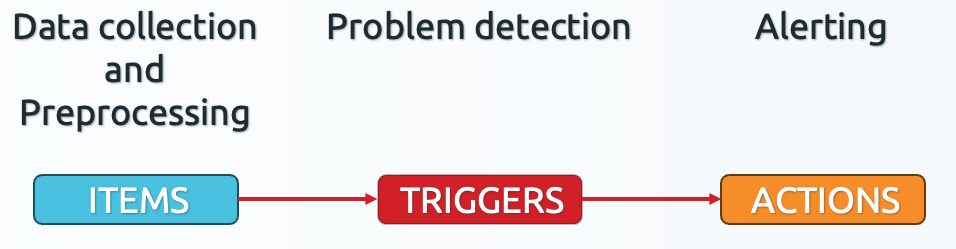
4.1 Zabbix basic dataflowThis gives us a very basic understanding of what steps we have to go through in Zabbix to get from data being collected to alerts being sent out. Very important to us Zabbix administrators, as we need to go through these steps each time we want to end up with a certain type of monitoring.
But, now that we have identified what parts to look at, let's dive a bit deeper
into what each of those parts does. Logically, that would start with Items looking
at the image above. But before we can start discussing Items there is another
concept we need to understand.
Hosts
To create Items in Zabbix, we first need to create Hosts. A host is nothing
more than a container (not the Docker kind), it's something that contains Items,
Triggers, graphs, Low Level Discovery rules and Web scenarios. All of these
various different entities are contained within our Hosts.
Often times, Zabbix users and administrators make the misconception here that a
host always represents a physical or virtualised host. But in the end, hosts
are nothing more than a representation of a monitoring target. A monitoring
target is something we want to monitor. This can be a server in your datacenter,
a virtual machine on your hypervisor, a Docker container or even just a website.
Everything you want to monitor in Zabbix will need a host and the host will then
contain your monitoring configuration on its entities.
Items
Items in Zabbix are Metrics. One Item is usually a single metric we'd like to
collect, with the exception being bulk metric collection which we will discuss
later on in the book. When we want to create our Items we can do this on a host
and we can actually create an unlimited amount of Items on a host.
Preprocessing
But we cannot stop there with Items just yet, as we also mentioned an additional
part of our dataflow. It is possible to change the collected metric on an item before
storing it into the Zabbix database. We do this with a process called preprocessing.
Preprocessing is something we add onto our items when creating the configuration of such items. It is a part of the item, but not mandatory on every single item.
General rule:
- Collect metric and store as-is in the database? No preprocessing
- Collect metric and change before storing in the database? Add preprocessing
We will discuss this in more detail later on in the book as well.
Triggers
With all of the collected metrics, we can now also start to create triggers if we would want to. A trigger is Zabbix is nothing more than a bit of configuration on our host, which we will use to define thresholds using metrics collected on items.
A trigger can be setup to use the data collected on an item in a logical expression. This logical expression will define the threshold and when data is received on the item(s) used in the logical expression the trigger can go or stay in on of two states:
- PROBLEM: When the logical expression is TRUE
- OK: When the logical expression is FALSE
This is how we define if our data is in a good or a bad state.
Events
When we discuss triggers however, we cannot skip past the Events. Whenever a trigger changes state, for example it was in OK state and goes into the PROBLEM state, then Zabbix will create a new Event. There's three types of these events created by our triggers:
- Problem event: When the trigger goes from OK to PROBLEM
- Problem resolution event: When the trigger goes from PROBLEM to OK
- Problem update event: When someone manually updates a problem
These problem events are what you will see in the frontend when you navigate to
Monitoring | Problems, but they are also very important in the next step in
the Zabbix dataflow Actions.
Actions
Actions are the last step in our Zabbix dataflow and they are kind of split into
two parts. An action consists of Conditions and Operations. This is going to
be important in making sure the action executes on the right time (conditions)
and executes the right activity (operations).
What happens is, whenever a problem event in Zabbix is created it is sent to every single problem action in our Zabbix environment. All of these action will then check the event details like what host did it come from, with which severity, when did it start, which tags are present. These event details are then checked against the action conditions and only when the conditions match will the operations be executed. The operation can then be something like, send a message to Microsoft Teams or Telegram. But an operation could also be, execute the reboot command on this host.
As you can imagine, the conditions will be very important to make sure that operation on that action are only executed when we specifically want it to. We do not want to for example reboot a host without the right problem being first detected.
Conclusion
To summarize, all the steps in the dataflow work together to make sure that you can build the perfect Zabbix environment. When we put the entire dataflow together it looks like the image below.
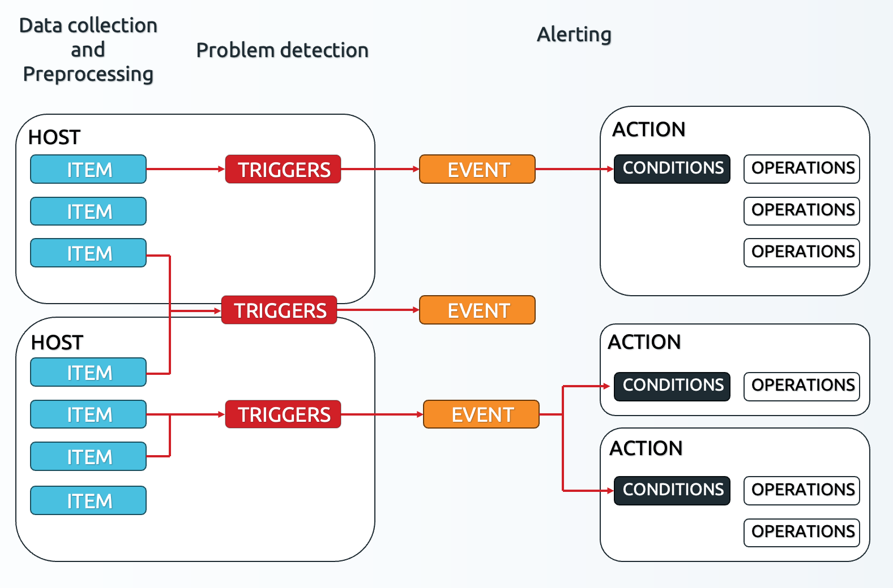
4.2 Zabbix detailed dataflowHere we can see the various steps coming together.
- We have our
Hostscontainer ourItemsandTriggers. - Our
Itemsare collecting metrics - The
Triggersare using data fromItemsto detected problems and create problemEvents. - If a problem
Eventmatches the Conditions on anActionthe Operations can be executed
Important to note here is that if an item is collecting metrics, it doesn't necessarily need to have a trigger attached to it. The trigger expression is a separate configuration where we can choose which items we want to define thresholds on. In the end, not ever item needs to start creating problems. We can also see that we can use several items or event several items from different hosts in a single trigger.
The same is the case for our events. Not every event will match the conditions on an action. In practice, this means that some problems will only show up in your Zabbix frontend, while other might go on to send you an alert message or even execute commands or scripts. A single event can also match the conditions on multiple actions, since we mentioned that all events are always send to all action for evaluation. This can be useful, for example if you want to split you messaging and your script execution in different action to keep things organised.
Now that we understand the various parts of our Zabbix dataflow we can dive deeper into creating the configuration for the steps in the dataflow.
Questions
Useful URLs
Hosts
After reading the previous dataflow section, it is now clear we have to go through the dataflow steps to get from collecting data to sending out alerts. The first part of the dataflow is to create a host, so that is what we are now going to tackle in this part.
Creating a host
As we mentioned, Hosts in Zabbix are nothing more than a container (not the Docker kind).
They contain our Items, Triggers, graphs, Low Level Discovery rules and Web scenarios.
At this point, we should create our first monitoring host in Zabbix. Navigate to Data collection | Hosts
and in the top right corner click on the Create host button. This will open up the following modal window:
 4.3 Empty host creation window
4.3 Empty host creation window
There are a lot of fields we can fill in, but few are important to note here specifically.
- Host name
- Host groups
These are the only two mandatory fields in the host creation window. If we fill these two, we can create our host.
Host name
The Host name is very important. It functions as both the technical name of the host we will
use in various different locations, but it is also used as the Visible name by default. This
means that we will work with this name to find through filters this host with its associated data.
Make sure to select a host name that is short and descriptive. For example:
- linux-srv01-prd
- www.thezabbixbook.com
- docker-container-42
- db-srv10 - Website database
The best practise is to keep the host name the same in Zabbix as it is configured on your monitoring target. The monitoring target, being whatever you are trying to monitor. Whether that is a physical or virtual server, a website, a database server or a specific database on that database server. Every host in Zabbix is a monitoring target, i.e. something you are trying to monitor.
Visible name
Now, we didn't mention it as it is not a mandatory field. Nevertheless, we need to discuss
the Visible name field before we continue with the Host groups. Although not mandatory,
as I mentioned, the Host name is automatically used as the visible name when not filled in.
Many of us see a form style list and have the need to fill out everything there is to fill out. This should not be the case with forms like the host creation window in Zabbix. We are only trying to fill out everything we should be configuring. As such, since the visible name is not mandatory, I do not fill it out. Unless, there is an actual need to use the field.
The visible name was added in Zabbix as the host name and visible name fields in Zabbix use different character encoding in the Zabbix database.
Host name = UTF8 and supports alphanumeric, dashes, underscores and spaces (not leading or trailing).
Visible name = UTF8_MB4 and supports special characters like ç and even emojis like 👀.
This is the main difference. When you want to use a local language for example you could do:
Host name = sherbimi-central
Visible name = shërbimi-çentral
That way you keep your local language in the frontend, but the technical name doesn't include the special character. Keep in mind however, that this can create confusion. You now need to remember two different names for the same host. As such, visible names are only recommended when you really need them or if you are trying to work around something. Otherwise, there is not need to use them.
Host groups
In Chapter 02 of the book, we had a deep dive into setting up various different host groups to keep
our Zabbix environment structured. When we create a host, we can now start using on of
our created host groups. Keep in mind, to only add the host to the lowest level of the subgroups. For
example when we have Servers and Servers/Linux, we will only add our host to Servers/Linux.
It's also possible to create a host straight from the host creation window. To do so,
simply start typing the host group name into the Host groups field and it will ask you if
you want to create the host group.

4.4 Host creation - new host group
Let's add the host simple-checks in the Linux/Servers host group.
Note
It's recommended to read the simple checks recipe from here, as it contains useful tips on creating good items.
Conclusion
Questions
Useful URLs
Simple checks
What would a Zabbix book be without setting up the actual monitoring itself, because in the end a monitoring system is all about collecting data through various different protocols.
Simple checks are one (or actually several) of such protocols. Zabbix has a bunch of built-in
checks we can do, executed from the Zabbix server or proxy towards our monitoring targets. The simple
checks contain protocol checks such as ICMP Ping, TCP/UDP but also built in VMware monitoring.
Without further ado, let's set up our first items. Please keep in mind that we will be building everything on a host level for now. Check out Chapter 06 to learn how to do this properly on a template.
Building the item
We shall start with a simple ICMP Ping check. If you haven't already, at Data collection | Hosts
let's create the host simple-checks in the host group Servers/Linux. Then, for this
new host navigate to Items. You should see a Create item button in the top right corner. Click
on this button and lets have a look at the item creation modal popup window:
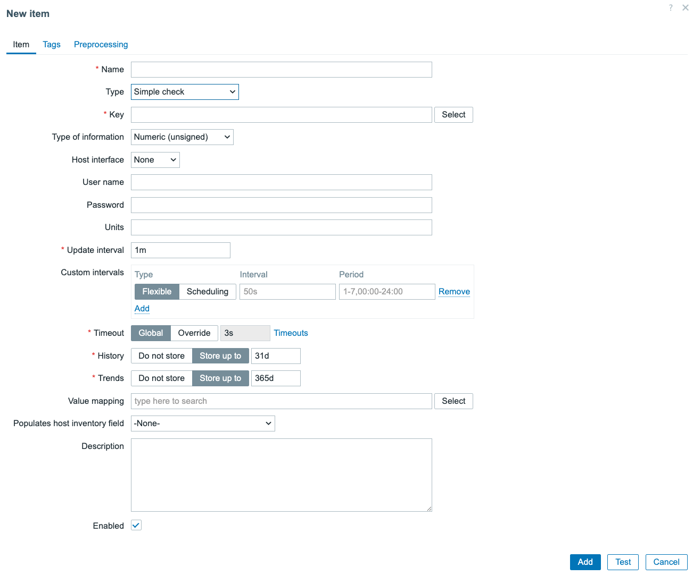
4.5 Empty Item creation window
Make sure to change the Type to Simple check to get a similar result. We can see there are
only two fields (that aren't selectors) mandatory. These, we have to fill in to make our
item work.
- Name
- Key
Item Name
The Item name in Zabbix is a very important field for all of our items. This is going
to be the first thing you see when looking for you configuration, but also the main identifier
when you'll search the visualisation pages (like Latest data) for this item.
Item names do not have to be unique (although it is recommended), as it will be
the Item key that will make sure this item is distinguishable as a unique entity. So what is
the best practise here?
- Item names should be short and descriptive
- Item names should contain prefixes where useful
- Item names should contain suffixes where useful
Some examples of good item names:
- Use Memory utilization not The memory util of this host. Keep it short and descriptive
- Use CPU load or if you have multiple use a suffix CPU load 1m and
CPU load 5m for example
- Use prefixes like Interface eth0: Bits incoming and
Interface eth1: Bits incoming for similar items on different entities
Using those techniques, we can create items that are easy to find and most importantly that your Zabbix users will want to read. After all, you can count on IT engineers to not read well, especially in a troubleshooting while everything is down scenario. Keeping things simple will also make sure your monitoring system will be a pleasure to be used or at least people won't avoid using your monitoring.
My final and favourite tip is: Remember: Zabbix uses alphabetical sorting in a lot of places. Why
is this important, well let's look at the Monitoring | Latest data page with a host using a
default template:
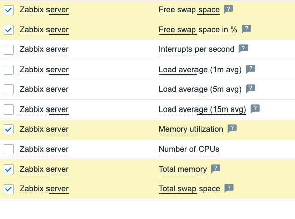
4.5 Latest data Memory and CPU items sortingIf this template had used CPU and Memory as a prefix for all respective items. Then this page would have nicely sorted them together. While right now, there are CPU items right between the memory related items. It creates a bit of a mess, making Zabbix harder to read.
If you want to spend (waste?) 30 minutes of your time hearing all about sorting data in various different places in Zabbix. The following video is highly recommended: https://www.youtube.com/watch?v=5etxbNPrygU
Item Key
Next up is the item key, an important part of setting up your Zabbix item as it will serve as the uniqueness criteria for the creation of this entity. There are two types of item keys:
- Built in
- User defined
The built in item keys is what we will use to create our simple check in a while. The user defined
item key is what we will use on items types like SNMP and Script. The main difference is that
built in item keys are defined by Zabbix and attach to a specific monitoring function. The user defined
item keys are just there to serve as the uniqueness criteria, while a different field in the item form
will determine the monitoring function.
Item keys can also be of a Flexible or Non-flexible kind. Flexible meaning the item key accepts
parameters. These parameters change the function of the built-in item keys and also count as part
of the uniqueness of the item keys. For example:
- agent.version a
Zabbix agentitem key doesn't accept parameters and only serves one purpose. To get the version of the Zabbix agent installed. - net.tcp.service[service,
, a] Simple checkitem key that accepts 3 parameters, each parameter divided by a comma(,). Optional parameters are marked by the<>signs, whereas mandatory parameters have no pre/suffix.
ICMP Ping
With all of this in mind, let's finish the creation our ICMP Ping item. First, we will give our new item a name. Since this is a simple ICMP Ping to the host lets go for:
- Name =
ICMP Ping
For the key, we will have to use the built-in key
icmpping[<target>,<packets>,<interval>,<size>,<timeout>,<options>]. This key accepts 6 parameters, all
of which are optional. However, when we do not select an interface on an icmpping item, we
need to fill in at least icmpping[<target>] for it to work. Normally imcpping can use the interface
IP or DNS, but since we will discuss the Host interfaces later in this chapter, let's use
the parameter instead.
- Key =
icmpping[127.0.0.1]
The item will now look like this:
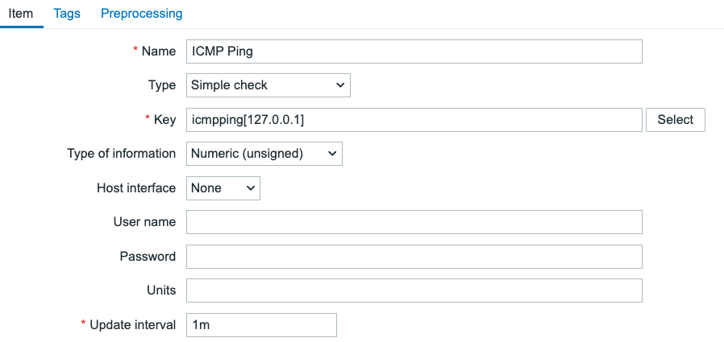
4.7 ICMP Ping itemIt's also best practise to add a tag with the name component to every item we create. Let's switch
to the Tags tab on the item creation window, and create the tag component:system.
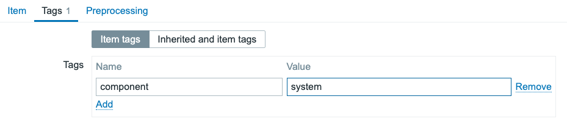
4.8 ICMP Ping item tagsZabbix utilises the fping utility, installed on the Zabbix server and/or proxy, to execute ICMP Ping checks. By default, Zabbix adds a repository containing the tool and installs the dependency. If you have a slightly different setup, make sure this utility is installed on your system and that the following two parameters are configured in the Zabbix server/proxy configuration file:
create mariadb repository
``` FpingLocation=/usr/sbin/fping
Fping6Location=/usr/sbin/fping6 ```
TCP/UDP Ports
Another useful simple check you can create is the TCP (and UDP) port check. With these 4 item keys we can monitor the availability and performance of TCP and UDP ports. There are 4 built-in keys available for these checks:
- net.tcp.service[service,
, ] - net.tcp.service.perf[service,
, ] - net.udp.service[service,
, ] - net.udp.service.perf[service,
, ]
Granted, the net.udp.service item keys only monitor the availability and performance of the NTP
protocol due to the "take it our leave it" nature of UDP. But, the net.tcp.service item keys are
useful for monitoring every single TCP port available.
We fill in the service parameter with tcp and the we use ip (or a host interface) and port
to define which TCP port to check. Zabbix will connect to the port and tell us the up/down status
or the connection speed if we use net.tcp.service.perf. If we fill in the service parameter with
ssh, ldap, smtp, ftp, pop, nntp, imap, tcp, https, telnet it will use the correct (default) port
automatically, as well as do an additional check to make sure the port is actually being used by that service.
Host Interfaces
As you might have noticed in the host creation window, there are also various other
ZBX
SNMP
IPMI
JMX
Conclusion
Questions
Useful URLs
Zabbix Agent Passive
Conclusion
Questions
Useful URLs
Zabbix Agent Active
Conclusion
Questions
Useful URLs
SNMP Polling
Conclusion
Questions
Useful URLs
Dependent items
Conclusion
Questions
Useful URLs
SNMP Trapping
Conclusion
Questions
Useful URLs
SSH Telnet
Conclusion
Questions
Useful URLs
Http
Conclusion
Questions
Useful URLs
Script
Conclusion
Questions
Useful URLs
JMX
Conclusion
Questions
Useful URLs
IPMI
Conclusion
Questions
Useful URLs
Database checks via odbc
Conclusion
Questions
Useful URLs
Database checks via agent
Conclusion
Questions
Useful URLs
Zabbix trapper
Conclusion
Questions
Useful URLs
External checks
Conclusion
Questions
Useful URLs
Browser item
Conclusion
Questions
Useful URLs
Calculated items
Conclusion
Questions
Useful URLs
Zabbix Internals
Conclusion
Questions
Useful URLs
Chapter 05 : Triggers
Setting up triggers
In this chapter, we'll explore triggers in depth, starting with the basics of setting up step triggers and progressively moving into advanced trigger configurations. You'll gain a thorough understanding of how triggers work, ensuring you can leverage them effectively to monitor your infrastructure.
We'll take a deep dive into the mechanics of triggers, examining how they evaluate conditions and generate alerts. This section will also address the important topic of monitoring and alerting fatigue, providing strategies to fine-tune your triggers to reduce unnecessary alerts while maintaining optimal system oversight.
By the end, you'll have the knowledge to set up both simple and complex triggers, helping you maintain a well balanced monitoring system that minimizes noise and focuses on what truly matters.
Triggers
Advanced triggers
Chapter 06 : Templates
Building and using templates
A great way to guide users towards a deeper understanding of Zabbix is by initially holding off on templates and gradually introducing them much like in formal training. In this chapter, we'll start by explaining the basic usage of default templates and how to find new ones, helping you get up and running with minimal effort.
Once you're comfortable with default templates, we’ll dive into building your own templates, offering detailed instructions on customization and best practices. We’ll also cover how to share your templates within the Zabbix community, fostering collaboration and knowledge exchange.
To round off, we'll feature Tags and Macros, explaining their roles within templates and why they're most effective when understood in the context of template usage. This structured approach will ensure you grasp the full potential of templates and their associated features in Zabbix.
By the end of this chapter, you'll be well versed in both using and creating templates, equipped to enhance your monitoring setup and contribute to the broader Zabbix ecosystem.
Chapter 07 : Alerting
Sending out alerts with Zabbix
After delving into templates, it's time to return to the data flow and bring everything together by exploring integrations with powerful external services. In this chapter, we’ll complete the data flow journey, showing how to extend Zabbix capabilities through seamless connections with third-party tools and platforms.
We'll guide you through setting up integrations that enhance your monitoring system, covering various use cases from alerting to data visualization and automation. By integrating Zabbix with external services, you'll unlock new levels of functionality, making your monitoring setup more dynamic and adaptable.
By the end, you'll have a well-rounded understanding of how to fully utilize Zabbix data flow, augmented by strategic integrations that add value to your infrastructure management.
Chapter 08 : LLD
Using Low level discovery to automate
In this chapter, we'll dive into Low-Level Discovery (LLD), covering everything there is to know about this powerful feature in Zabbix. LLD automates the creation of hosts, items, triggers, and more, simplifying the management of large and dynamic environments.
We'll also explain how to work with custom JSON in the context of LLD, showing you how to tailor discovery rules to fit your unique needs. By mastering these techniques, you'll be able to create highly adaptable monitoring setups that respond to changes in your infrastructure with minimal manual intervention.
By the end of this chapter, you'll have a deep understanding of LLD, from basic concepts to advanced customization, enabling you to leverage its full potential in your Zabbix deployment.
Custom Low Level Discovery
Zabbix's Low-Level Discovery (LLD) plays a crucial role in dynamically detecting and managing monitored entities. While Zabbix provides built-in discovery rules, real-world environments often demand more flexibility and customization.
In this chapter, we will explore custom LLD techniques, allowing you to create powerful, tailored discovery mechanisms that go beyond standard templates. You'll learn how to use scripts and custom rules to automatically detect and monitor services, network interfaces, and other dynamic components within your infrastructure.
Whether you're monitoring cloud environments, network devices, or application-specific metrics, mastering custom LLD will help you reduce manual work, improve accuracy, and scale your monitoring effortlessly. Let’s dive in!
Note
For this chapter we start with a working system with a proper configured agent in passive mode. If you have no clue how to do this go back to chapter 01.
Zabbix Low-Level Discovery (LLD) provides a dynamic mechanism for automatically creating monitoring elements based on discovered entities within your infrastructure.
Core Functionality :
LLD enables Zabbix to detect changes in your environment and create corresponding items, triggers, and graphs without manual intervention. This automation is particularly valuable when monitoring elements with fluctuating quantities or identifiers.
Discovery Targets: The discovery process can identify and monitor various system components including:
- File systems
- CPUs
- CPU cores
- Network interfaces
- SNMP OIDs
- JMX objects
- Windows services
- Systemd services
- Host interfaces
- Anything based on custom scripts
Through LLD, administrators can implement scalable monitoring solutions that automatically adapt to infrastructure changes without requiring constant template modifications.
Implementing Low-Level Discovery in Zabbix
The Challenge of Manual Configuration
We could manually create each item but this would be a very time-consuming task and impossible to manage in large environments. To enable automatic discovery of our items or entities, we need discovery rules.
Discovery Rules
These rules send the necessary data to Zabbix for our discovery process. There is no limit to the various methods we can employ, the only requirement is that the end result must be formatted in JSON. This output information is crucial as it forms the foundation for creating our items.
Prototypes and Automation
Once our discovery rule is in place, we can instruct Zabbix to automatically generate items, triggers, graphs, and even host prototypes. These function as blueprints directing Zabbix how to create those entities.
LLD Macros
To enhance flexibility, Zabbix implements LLD macros. These macros always begin with a # character before their name (e.g., {#FSNAME}). Acting as placeholders for the values of discovered entities, Zabbix replaces these macros with the actual discovered names of the items during the implementation process.
The Zabbix Low-Level Discovery Workflow
The workflow that Zabbix follows during Low-Level Discovery consists of four distinct phases:
Discovery Phase * Zabbix executes the discovery item according to the defined discovery rule * The item returns a JSON list of discovered entities
Processing Phase * Zabbix parses the JSON data and extracts the necessary information
Creation Phase * For each discovered entity, Zabbix creates items, triggers, and graphs based on the prototypes * During this process, LLD macros are replaced with the actual discovered values
Monitoring Phase * Zabbix monitors the created items using standard monitoring procedures
Advantages of LLD Implementation
The benefits of implementing Low-Level Discovery are substantial:
- Automation - Creation of items, triggers, graphs, and hosts becomes fully automated
- Scalability - Enables monitoring of large numbers of hosts or items without manual intervention
- Adaptability - Zabbix can dynamically adjust to environmental changes by creating or removing entities as needed
Learning LLD custom script
We begin our series with LLD based on custom scripts because, while it represents one of the more complex topics, mastering this concept provides a solid foundation. Once you understand this implementation approach, the other LLD topics will be considerably easier to comprehend.
Below is a sample JSON structure that Zabbix can interpret for Low-Level Discovery:
Upon receiving this JSON data, Zabbix processes the discovery information to identify distinct file systems within the monitored environment. The system extracts and maps the following elements:
- File system mount points: /, /boot, and /data
- File system types: ext4 and xfs
Zabbix automatically associates these discovered values with their corresponding LLD macros {#FSNAME} for the mount points and {#FSTYPE} for the file system types. This mapping enables dynamic creation of monitoring objects tailored to each specific file system configuration.
Creating a custom script.
In this example, we will develop a custom script to monitor user login activity on our systems. This script will track the number of users currently logged into each monitored host and report their login status.
The implementation requires placing a custom script in the appropriate location on
systems running Zabbix Agent (either version 1 or 2). Create the following script
in the /usr/bin/ directory on each agent installed system:
paste the following content in the file:
users-discovery.sh
#!/bin/bash
# Find all users with UID ≥ 1000 of UID = 0 from /etc/passwd, except "nobody"
ALL_USERS=$(awk -F: '($3 >= 1000 || $3 == 0) && $1 != "nobody" {print $1}' /etc/passwd)
# Find all active users
ACTIVE_USERS=$(who | awk '{print $1}' | sort | uniq)
# Begin JSON-output
echo -n '{"data":['
FIRST=1
for USER in $ALL_USERS; do
# Check if the user is active
if echo "$ACTIVE_USERS" | grep -q "^$USER$"; then
ACTIVE="yes"
else
ACTIVE="no"
fi
# JSON-format
if [ $FIRST -eq 0 ]; then echo -n ','; fi
echo -n "{\"{#USERNAME}\":\"$USER\", \"{#ACTIVE}\":\"$ACTIVE\"}"
FIRST=0
done
echo ']}'
Once you have created the script don't forget to make it executable.
The script will be executed by the Zabbix agent and will return discovery data about user sessions in the JSON format required for Low-Level Discovery processing.
Once deployed, this script will function as the data collection mechanism for our user monitoring solution, enabling Zabbix to dynamically discover user sessions and track login/logout activities across your infrastructure.
User Provisioning for Testing
Let's establish additional test user accounts on our system to ensure we have sufficient data for validating our monitoring implementation. This will provide a more comprehensive testing environment beyond the default root account and your personal user account. Feel free to add as many users as you like.
create some users
Create a password for every user so that we can login on the consoleCreating a Template
It is always considered best practice to work with a template. The first step is to create a template for the LLD rules.
Navigate to Data collection, select Templates, and click Create template in the upper-right corner.
Fill in the required information, specifying at least a template name and the template group it belongs to.
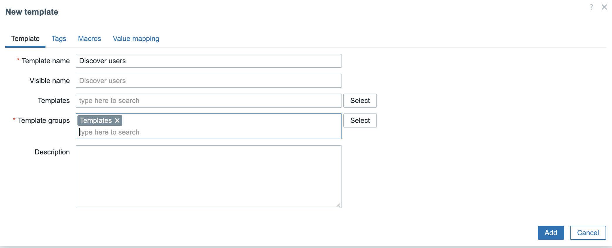
Once the template is created click on Discovery in the template between Dashboards
and Web. In the upper right corner of the screen you see now a button create discovery rule.
We will nog create our discovery rule that will import the JSON from our script.
Click on the button.
Fill in the needed information like on the screenshot :
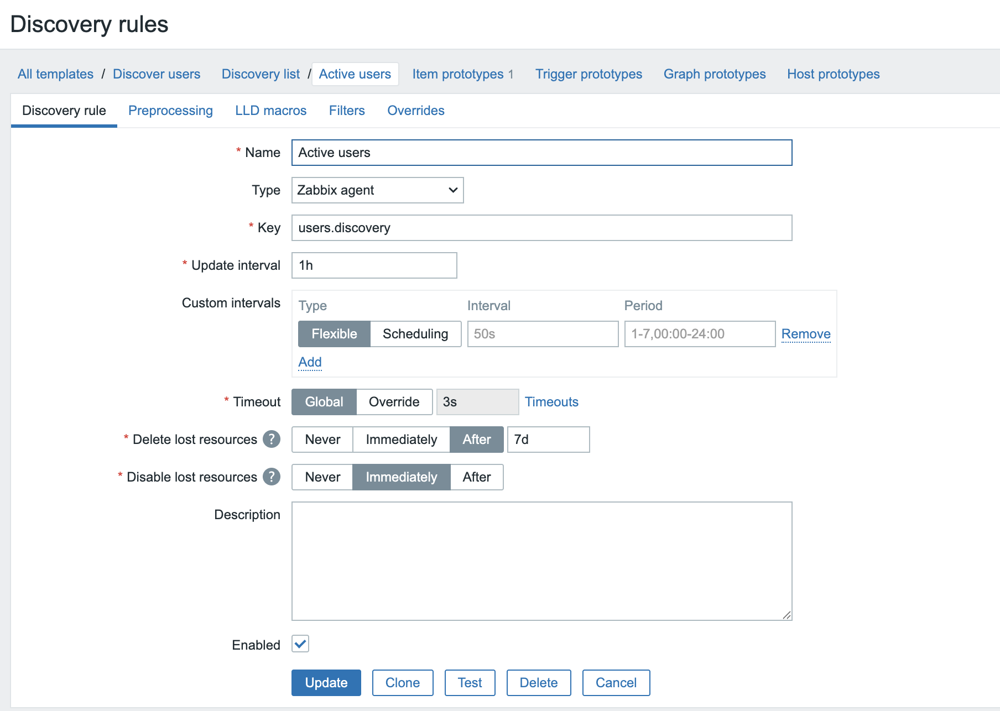
Creating a Template for LLD Rules
- Type: Set to Zabbix agent, as the agent is configured to work in passive mode. If the agent is properly configured for active mode, Zabbix agent (active) can be used instead. Passive mode allows polling information from the script.
- Key: This key acts as a reference sent to the agent, instructing it on which script to execute.
- Update Interval: Determines how often Zabbix executes the script. For detecting newly created users, an interval of one hour is a reasonable setting.
Note
If you put the update interval for the discovery rule too frequent like every minute, then this will have a negative impact on the performance. In our case it's a small JSON file but most of the time it will contain much more data.
Once everything is filled in we can save the template.
Login to your console on the host that you would like to monitor and go to the following path.
Creating the User Parameter Configuration
The next step is to create the userparameter-users.conf file in this directory. This file will define the reference key users.discovery from the LLD rule and map it to the corresponding script. By doing this, Zabbix can associate the item key with the correct script execution.
Add the following line in the config file and save it.
Note
When you add a new UserParameter to the agent we need to restart the agent
to pick up the new config or use the config option -R userparameter_reload
on our agent this will apply the new configuration but only works on UserParameters
not on other changes in the agent configuration.
Saving the Template and Preparing the Monitored Host
After entering all the required details, save the template to apply the configuration.
Next, access the console of the host you want to monitor and navigate to the following
directory.
Note
Zabbix agent has a new option since 6.0, userparameter_reload. This allows
us to reload the config for the userparameters and makes a restart of the agent
not necessary.
Testing the Configuration
With the setup complete, it is time to perform some tests.
- Navigate to Data collection and select Hosts.
- Link the newly created template to the appropriate host in the Zabbix frontend.
- Once the template is linked, go to the Discovery section.
- Click on the discovery rule created earlier, Active users.
- At the bottom of the screen, locate the Test button and click on it.
- In the popup window, press Get value and test.
If everything is configured correctly, Zabbix will retrieve the expected value and store it in the database.
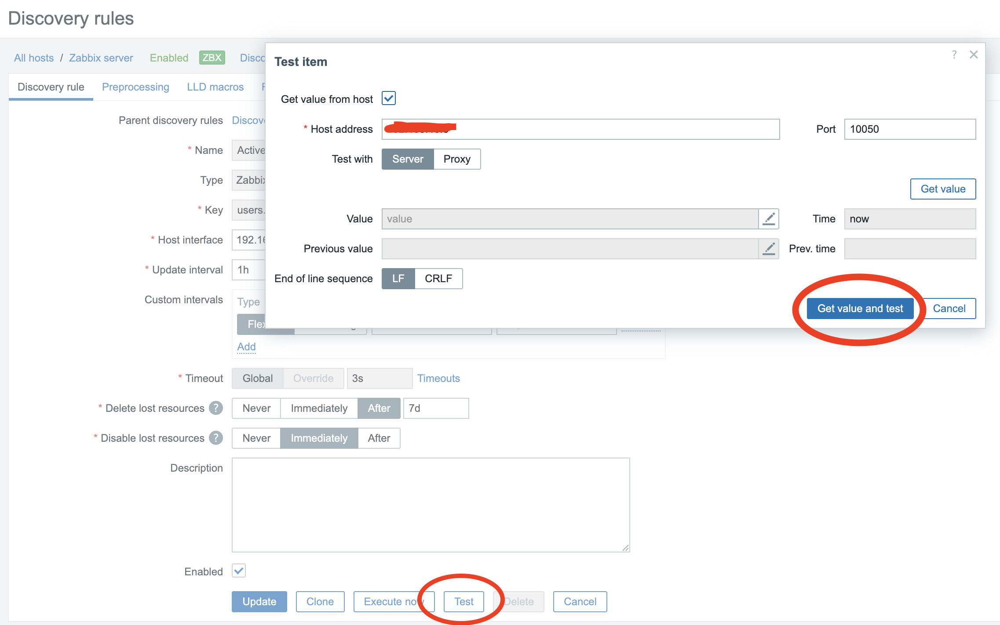
If all went well you should have received some data back in JSON like you see here, depending on the number of users you made and what name you gave them.
Creating prototype items.
With our Low-Level Discovery (LLD) rule in place, we are ready to create our LLD item prototype. Follow these steps to configure the item prototype correctly:
- Navigating to Item Prototype Configuration
- Open your template in Zabbix.
- Click on the Discovery tab.
- Navigate to Item Prototypes.
-
Click on Create Item Prototype in the upper-right corner.
-
Configuring the Item Prototype Several key fields must be completed for the prototype to function correctly:
-
Name:
- Use the macro
{#USERNAME}to create dynamically generated item names. - Example:
User {#USERNAME} login status.
- Use the macro
-
Type:
- Select
Zabbix agentas the item type to facilitate testing.
- Select
-
Key:
- The item key must be unique.
- Utilize macros to ensure a unique key for each item instance.
-
Type of Information:
- Defines the format of the received data.
- Since our script returns
0or1, set this toNumeric.
-
Update Interval:
- Determines how frequently the item is checked.
- A reasonable interval for checking user online status is
1m(one minute).
With these configurations, your LLD item prototype is ready for deployment.
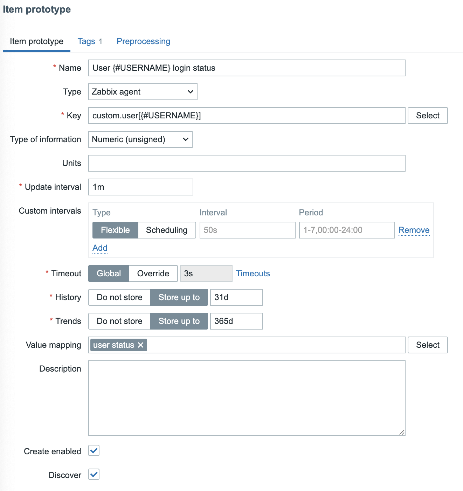
Configuring the Agent to Listen for LLD Items
Our LLD item will retrieve data from the key custom.user[{#USERNAME}], so the next step is to configure the agent to listen for this key.
- Edit the
userparameter-users.conffile that was created earlier on theZabbix agent. - Add the following line to the configuration file:
- This configuration ensures that the agent listens for requests using the
custom.user[{#USERNAME}]key. - The
{#USERNAME}macro is dynamically replaced with usernames extracted from the discovery rule.
Note
Important: After making changes to the configuration file, restart the Zabbix agent
or reload the configuration to apply the new settings.
With these configurations in place, your LLD item prototype is fully set up and ready for deployment.
Testing our lld items
Before we put things in production we can of course test it. Press the test button
at the bottom. Fill in the needed information:
- Host address : the IP or DNS name where we have our scripts configured on our agent.
- Port : the agent port. This should be 10050 unless you have changed it for some reason.
- Macros : map the macro with one of the user names you have configured on your system.
Press Get value and if all goes well Zabbix will return the value 1 or 0 depending
if the user is online or not.
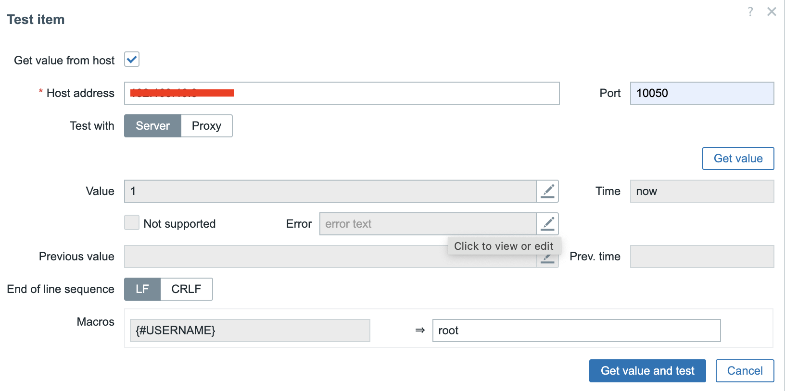
Apply the template to your host and have a look at the latest data. Things should slowly start to populate.
Adding LLD triggers
Let's go back to our template to our Discovery and select Trigger prototype.
Click on the top right on Create trigger prototype.
Fill in the following fields:
- Name :
User {#USERNAME} is logged inAgain we want our information to be more dynamic so we make use of our macros in the name of our trigger. - Severity : We select the severity level here.
Informationseems high enough. - Expression : We want to get a notification if someone is online you can
make use of the
Addbutton or just copy :last(/Discover users/custom.user[{#USERNAME}])=1
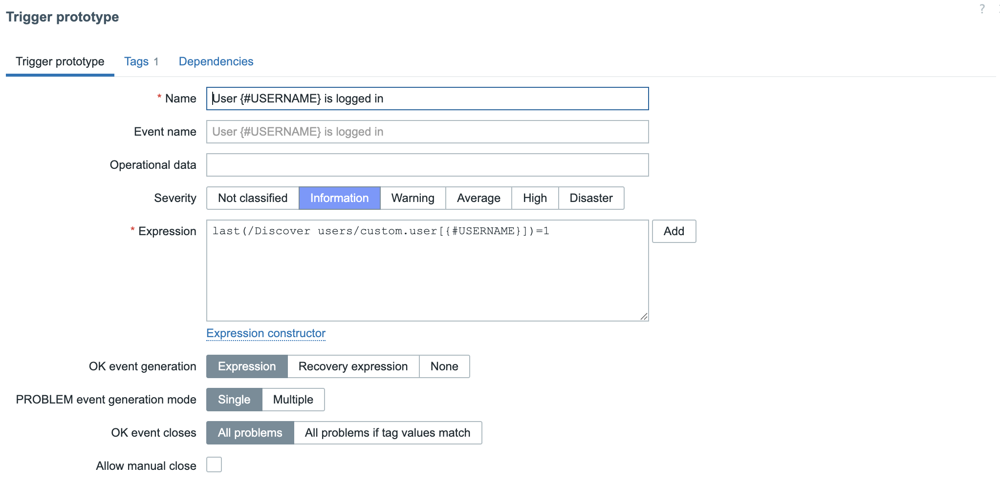
Note
Copying the Expression will only work if you used the same name for the template and item key.
You can now log in with a user that we created before or root and have a look at our dashboard. A notification should popup soon to inform you that a user was logged in.
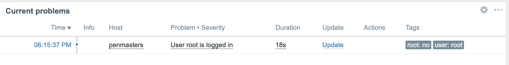
Creating LLD overrides.
Having our notifications when users log in on our systems is a nice security feature
but i'm more worried when a user logs in with root then when for example Brian
logs in. When root logs in I would like to get the alert High instead of Information.
This is possible in Zabbix when we make use of overrides. Overrides allow us to change the behaviour of our triggers under certain conditions.
Go to the template to the discovery rule Active users. Click on the tab Overrides.
Press on the button Add and fill in the needed information.
- Name : A useful name for our override in our case we call it
high severity for user root. - Filters : Here we filter for certain information that we find in our LLD
macros. In our case we look in the macro
{#USERNAME}for the userroot.
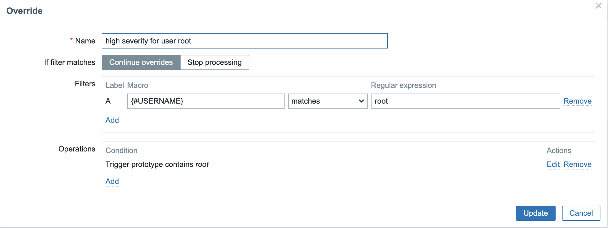
- Operation : Here we define what needs to happen. We want to manipulate the
trigger so select for object
Trigger prototypeand select that we want to modify theSeverityand selectHigh. This will modify the severity of our trigger and change it toHighif the user that is detected is the userroot.
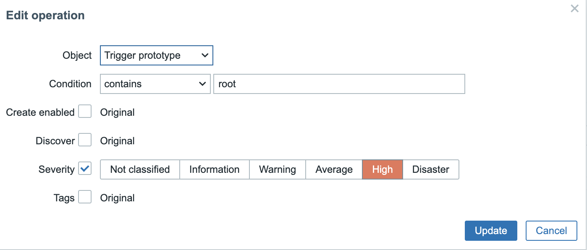
Note
It can take a while before changes are applied to your host. Don't panic this
is normal the discovery rule usually only updates every hour. If you like to
force this just go to your discovery rule on the host, select it and press Execute now.
Once everything is changed you can login on your system with the user root and
one of the other users. As you will see both triggers will fire off but with
different severity levels.
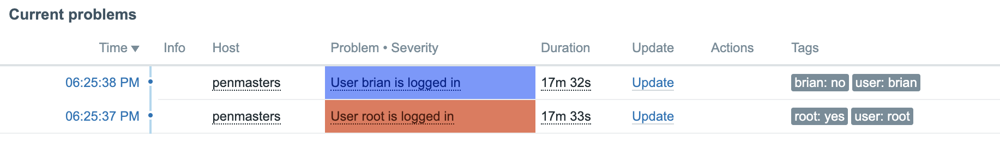
Conclusion
Question
Useful URLs
Low Level Discovery with Dependent items.
Efficiency in monitoring isn't just about automation it's also about minimizing resource usage. Low-Level Discovery (LLD) with dependent items in Zabbix offers a powerful way to reduce agent load and database overhead by collecting data once and extracting multiple metrics from it.
Instead of creating separate item queries for each discovered entity, dependent items allow you to process a single data source such as a JSON response, log entry, or SNMP bulk data and extract relevant metrics dynamically. This approach significantly optimizes performance while maintaining full automation.
In this chapter, we'll explore how to implement LLD with dependent items, configure preprocessing rules, and leverage this technique to make your Zabbix monitoring more efficient, scalable, and resource friendly by using a practical example.
Let’s get started!
Note
For this chapter we start with a working system with a passive Zabbix agent. You can
always refer to Chapter 01 if you like to know how to setup Zabbix.
It can be a good start to have a look at our previous topic Custom LLD to get
a better understanding on how LLD works.
Creating our custom data.
Before we can implement our Low-Level Discovery (LLD) rule, we first need relevant data to work with. Consider a scenario where a print server provides a list of printers along with their status in JSON format. This structured data will serve as the foundation for our discovery process.
Example data
On your Zabbix server, log in and create a text file containing the example data that will serve as the master item for our Low-Level Discovery (LLD) rule.
- Access the Server: Log in to your Zabbix server via SSH or directly.
- Create the File: Run the following command to store the JSON data:
Run the following command:
- Verify the File: Ensure the file is correctly created by running:
Create a master item.
We are now ready to create an item in Zabbix to get the information in to our master item. But first we need to create a host.
Go to Data collection | Hosts and click Create host. Fill in the Host name
and the Host group and create an Agent interface. Those are the only things
we need for our host and press Add.
Go to the host and click on items the next step will be to create our item so
that we can retrieve the data from our printers.
 8.1 Create host
8.1 Create host
Note
Remember this is just an example file we made in real life you will use probably
a HHTP agent or a Zabbix agent to retrieve real life data.
Click on top right of the page on Create item to create a new item so that we
can retrieve our master items data.
Once the New Item popup is on the screen fill in the following details:
- Name : RAW : Printer status page
- Type : Zabbix agent
- Key : vfs.file.contents[/home/printer-status.txt]
 8.2 Create a LLD item
8.2 Create a LLD item
Before you press Add let's test our item first to see if we can retrieve the
data we need.
Press Test at the bottom of the page a popup will come and you can press at the
bottom of the page Get value and test or Get value just above. Both should work
and return you the information form the txt file.
Note
When you press Get value it
will show you the value as is retrieved from the host. Get value and test on
the other hand will also try to execute other pre processing steps if there are
any. So the output of the data could be different. Also if you use secret macros
Zabbix will not resolve them you will need to fill in the correct information
first by yourself.
 8.3 Test LLD item
8.3 Test LLD item
Tip
Keep a copy of the output somewhere you will need it in the following steps to create your LLD rule and LLD items etc ...
Create LLD Discovery
To create a discovery rule first to go Discovery rules on the top next to Items,
Triggers and Graphs and click on Create discovery rule.
 8.4 Create a discovery rule
8.4 Create a discovery rule
Before configuring our Low-Level Discovery (LLD) rule, we can test our JSON queries
using tools like JSON Query Tool. If we apply the
query $..name, it extracts all printer names, while $..status retrieves their statuses.
However, referring to the Zabbix documentation,
we see that starting from Zabbix 4.2, the expected JSON format for LLD has changed.
The data object is no longer required; instead, LLD now supports a direct JSON
array. This update enables features like item value preprocessing and custom JSONPath queries
for macro extraction.
While Zabbix still accepts legacy JSON structures containing a data object for
backward compatibility, its use is discouraged. If the JSON consists of a single
object with a data array, Zabbix will automatically extract its content using
$.data. Additionally, LLD now allows user-defined macros with custom JSONPath
expressions.
Due to these changes, we cannot use the filters $..name or $..status directly.
Instead, we must use $.name and $.status for proper extraction. With this
understanding, let's proceed with creating our LLD rule.
Head over to the LLD macros tab in our Discovery rule and map the following macros
with our JSONpath filters to extract the needed info so that we can use it later
in our LLD items, triggers, graphs .... .
- {#PRINTER.NAME} : Map it with
$.name. - {#PRINTER.STATUS} : Map it with
$.status.
 8.5 Create a LLD Macro
8.5 Create a LLD Macro
When ready press Update at the bottom of the page.
Creating a Low-Level Discovery (LLD) Item
After defining the discovery rule and mapping the data to the corresponding LLD macros, the next step is to create an LLD item. This is done through item prototypes.
- Navigate to the
Item prototypestab. - Click Create
item prototypein the upper-right corner. -
Configure the following parameters:
-
Name:
Status from {#PRINTER.NAME} - Type:
Dependent item - Key:
status.[{{#PRINTER.NAME}}] - Type of information:
Text - Master Item: Select the previously created raw item.
This setup ensures that the discovered printer statuses are correctly assigned and processed through the LLD mechanism.
 8.6 Create a LLD item
8.6 Create a LLD item
Before saving the item, navigate to the Preprocessing tab to define the necessary
preprocessing steps. These steps will ensure that the extracted data is correctly
formatted for Zabbix. Configure the following preprocessing steps:
- JSONPath: $.data..[?(@.name=='{#PRINTER.NAME}')].status.first()
- Replace:
- Convert
NOKtofalse. - This step is required because Zabbix does not recognize
NOKas a boolean value but does recognizefalse. - Boolean to Decimal:
- This conversion transforms boolean values into numerical representation (
1forOK,0forfalse). - Numeric values are more suitable for graphing and analysis in Zabbix.
- Type of Information:
- Set to Numeric to ensure proper data processing and visualization.
Understanding the JSONPath Expression
To derive the correct JSONPath query, use a tool such as the JSON Query Tool
(https://www.jsonquerytool.com/). This tool
allows testing and refining JSON queries using real data retrieved from the raw item.
The JSONPath query used in this case is:
Breakdown of the JSONPath Syntax:
$→ Refers to the root of the JSON document..data→ Accesses thedatakey within the JSON structure...→ The recursive descent operator, searching through all nested levels for matching elements.[?(@.name=='{#PRINTER.NAME}')]→ A filter expression that:- Uses
?(@.name=='Color Printer 1')to match objects where thenamefield equals"Color Printer 1". {#PRINTER.NAME}is a Zabbix macro that dynamically replaces"Color Printer 1"with the discovered printer name.@→ Represents the current element being evaluated..status→ Retrieves thestatusfield from the filtered result..first()→ Returns only the first matchingstatusvalue instead of an array.- Without
.first(), the result would be["OK"]instead of"OK".
By applying these preprocessing steps, we ensure that the extracted printer status is correctly formatted and can be efficiently used for monitoring and visualization in Zabbix.
Optimizing Data Collection and Discovery Performance
Before finalizing our configuration, we need to make an important adjustment. The current settings may negatively impact system performance due to an overly frequent update interval.
Navigate to Data collection|Hosts and click on Items. Select the RAW item
that was created in the first step.
By default, the update interval is set to 1 minute. This means the item is
refreshed every minute, and since our LLD rule is based on this item, Zabbix will
rediscover printers every minute as well. While this ensures timely updates, it
is inefficient and can impact performance.
A common best practice is to configure discovery rules to run no more than
once per hour. However, since our LLD item relies on this same RAW item, an
hourly interval would be too infrequent for monitoring printer status updates.
To strike a balance between efficiency and real-time monitoring, we can apply
a preprocessing trick.
Go to the Preprocessing tab and add the following preprocessing step:
- Discard unchanged with heartbeat →
1h
This ensures that the database is updated only when a status change occurs. If
no status change is detected, no new entry is written to the database, reducing
unnecessary writes and improving performance. However, to ensure some data is
still recorded, the status will be written to the database at least once per hour,
even if no changes occur.
Before saving the changes, we can further optimize storage by preventing the
master item from being stored in the database. Navigate back to the Item tab and
set History to Do not store.
Note
If you change your mind and want to keep the history then our preprocessing step will at least not save it every minute but only when there are changes or once every hour.
The RAW item is only used to feed data into the LLD discovery rule and LLD items.
Since we do not need to retain historical data for this master item, discarding it
saves database space and improves efficiency.
By applying these optimizations, we ensure that our monitoring system remains efficient while still capturing necessary status updates.
Creating a Low-Level Discovery (LLD) Filter
Now lets have some fun and use a script that generates the output of our text file with random statuses so that we have a more close to real live environment.
Create in the folder where your printer-status.txt file is a new file called printer-demo.py and paste following content in it.
python script
#!/usr/bin/env python3
import json
import os
STATUS_FILE = "printer-status.txt"
# Define printers
printers = [
{"name": "Color Printer 1", "status": "OK"},
{"name": "Color Printer 2", "status": "OK"},
{"name": "B&W Printer 1", "status": "OK"},
{"name": "B&W Printer 2", "status": "NOK"},
{"name": "This is not a printer", "status": "NOK"}
]
# Check if the status file exists
if os.path.exists(STATUS_FILE):
# Read the existing status from the file
with open(STATUS_FILE, "r") as f:
output = json.load(f)
printers = output["data"]
else:
# If no file, set initial values
output = {"data": printers}
# Toggle statuses
for printer in printers:
printer["status"] = "NOK" if printer["status"] == "OK" else "OK"
# Write the new status to file
with open(STATUS_FILE, "w") as f:
json.dump({"data": printers}, f, indent=2)
print(f"Printer status updated and written to {STATUS_FILE}")
Once you have created the script make it executable with chmod +x printer-demo.py
and then run the script with the following command ./printer-demo.py.
If you cannot run the script then check the python environment or try to run it as python printer-demo.py.
This script will change the status of our printers you can verify this in the Latest data page.
 8.7 Latest data
8.7 Latest data
But hey wait as we can see there is an extra devices detected with the name This is not a printer
and Zabbix hasn't detected any status for it .....
That we don't have any status yet is normal remember we did a check only once per hour with our Preprocessing step so first time the data was changed the new device was detected. If the status from the device changes again zabbix will create an update for the item and a status will be processed.
Note
Low Level will work in 2 steps first step is the detection of the new devices and second step is populating the items with the correct data. Remember that we did an item interval of 1m so it can take up to 1m before our items gets a new value.
Lets see now how we can remove the device this is not a printer from our list
since we don't want to monitor this one.
Let's go back to our LLD discovery rule this time to the tab Filters and add the following to the fields:
- Label : {#PRINTER.NAME}
does not match - ** regular expression** :
{$PRINTERS.NOT.TO.DETECT}
 8.8 LLD Filters
8.8 LLD Filters
Press update and go to our Host and click on the tab Macros. Here we will create
our macro and link it with a regular expression.
Fill in the following values :
- Macro: {$PRINTERS.NOT.TO.DETECT}
- Value : ^This is not a printer$
 8.9 LLD Filter Macros
8.9 LLD Filter Macros
After executing our discovery rule and sending updated values to Zabbix, we can
verify the filter's effectiveness by checking the Latest data view, where the
excluded device no longer appears.
When navigating to the Items section of our host, we'll observe that the previously
discovered item for the filtered device now displays a Disabled status with an
accompanying orange exclamation mark icon. Hovering over this icon reveals the
system notification: The item is not discovered anymore and has been disabled, will be deleted in 6d 23h 36m.
This automatic cleanup behavior for undiscovered items follows Zabbix's default
retention policy, which can be customized by modifying the Keep lost resources period
parameter in the Discovery rule settings to align with your organization's monitoring
governance requirements.
This concludes our chapter.
Conclusion
Low-Level Discovery in Zabbix represents a powerful approach to dynamic monitoring that scales efficiently with your infrastructure. Through this chapter, we've explored how the combination of LLD with dependent items and discovery filters creates a robust framework for automated monitoring that remains both comprehensive and manageable.
By implementing dependent items within discovery rules, we've seen how to build sophisticated monitoring relationships without the performance overhead of multiple direct checks. This approach not only reduces the load on monitored systems but also simplifies the overall monitoring architecture by establishing clear parent-child relationships between metrics.
The strategic application of LLD filters, as demonstrated in our examples, transforms raw discovery data into precisely targeted monitoring. Instead of drowning in irrelevant metrics, your Zabbix instance now focuses only on what matters to your organization's specific needs. Whether filtering by regex patterns, system types, or operational states, these filters act as the gatekeepers that maintain monitoring relevance as your environment expands.
Perhaps most importantly, the techniques covered in this chapter enable truly scalable monitoring that grows automatically with your infrastructure. New servers, applications, or network devices are seamlessly incorporated into your monitoring framework without manual intervention, ensuring that visibility expands in lockstep with your environment.
As you implement these concepts in your own Zabbix deployments, remember that effective monitoring is about balance and capturing sufficient detail while avoiding data overload. The combination of LLD, dependent items, and thoughtful filtering provides exactly this balance, giving you the tools to build monitoring systems that scale without sacrificing depth or precision.
With these techniques at your disposal, your Zabbix implementation can evolve from a basic monitoring tool to an intelligent system that adapts to your changing infrastructure, providing actionable insights without constant reconfiguration.
Questions
- How do LLD filters change the monitoring paradigm from "collect everything" to a more targeted approach?
- How does Zabbix LLD fundamentally differ from traditional static monitoring approaches ?
- Break down the components of the JSONPath expression $.data..[?(@.name=='{#PRINTER.NAME}')].status.first() and explain how each part contributes to extracting the correct data.
- How would you modify the example to monitor printer ink levels in addition to printer status?
Useful URLs
Chapter 09 : Extending Zabbix
Leveraging custom items for extending the Zabbix environment
In this chapter, we'll take a deep dive into extending Zabbix functionality beyond its default item options. We'll cover the script item, external checks, remote commands, user parameters, and other advanced features that allow you to customize and expand your monitoring capabilities.
You'll learn how to use these tools to integrate custom logic, monitor external applications, and automate tasks, making Zabbix an even more powerful and flexible solution tailored to your specific needs.
By the end, you'll have the skills to push Zabbix beyond its default configuration, unlocking new possibilities for complex and unique monitoring scenarios.
Frontend Scripts
So, you're diving into the world of Zabbix frontend scripts, and you're in for a treat! These little powerhouses unlock a whole new level of flexibility within your Zabbix environment. Imagine being able to trigger custom actions directly from your Zabbix interface – whether it's as an action operation responding to an alert, a manual intervention on a host, or a targeted response to a specific event.
What's truly exciting is where you can weave these scripts into your daily Zabbix workflow. Picture adding custom menu items right within your Hosts, Problems, Dashboards, and even your Maps sections. This means the information and tools you need are always at your fingertips.
Ultimately, frontend scripts empower you to extend Zabbix far beyond it's out-of-the-box capabilities. They provide that crucial extra layer of customization, allowing you to seamlessly integrate your own scripts and workflows directly into the Zabbix frontend. Get ready to harness this power and tailor Zabbix precisely to your needs!
Creating a frontend scripts
For this example, we'll work with a frontend script I developed that lets you put hosts in maintenance mode. This script makes it possible to add a convenient option in your GUI, allowing you to place hosts in maintenance with just a few clicks. You can download the script from my GitHub repository :
https://github.com/Trikke76/Zabbix/blob/master/maintenance/zabbix-maintenance.py
Download this script and place it in /usr/bin/
Our Python script relies on an additional package that needs to be installed before running. Make sure you have this dependency set up on your system before executing the script.
install python3-requests
Red Hat
UbuntuNote
For the user you can use the user Admin or you can create a new user. but
make sure this user has enough permissions to create a maintenance mode.
It's best practice to create a dedicated user for this in production.
Starting with Zabbix 7.2, token-based authentication is required when working with
the API. Each user can create their own tokens, while the Super admin has management
privileges over all tokens.
To create a token for your Admin user:
- Navigate to
User settings - Select the
API tokenssections
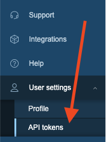
9.1 User API
After selecting API tokens from the menu, you'll land on the API tokens page.
Look for the Create API token button in the top right corner and click it to
begin the creation process.
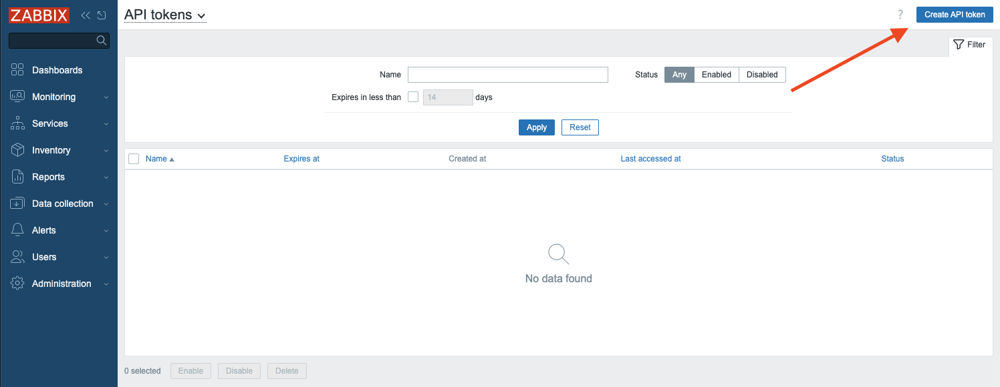
9.2 Create API page
A popup window will appear for creating your new API token. You'll need to provide
a unique Name for your token. While there's an option to set an expiration date,
we'll keep our token active indefinitely by leaving the time limit settings unchanged.
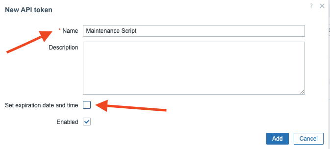
9.3 Create new API token
A confirmation popup will display your newly created API token, showing the Auth token
string generated by Zabbix. Be sure to copy or write down this token immediately,
as it will no longer be visible once you click Close. If you lose this token,
you'll need to delete it and create a new one. There's no way to retrieve or view
the token again through the interface.
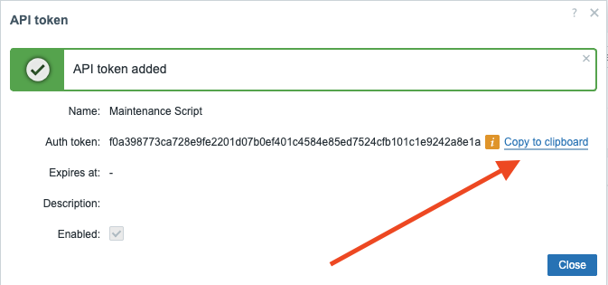
9.4 Added API token
The next step is updating our script with the proper connection details. Edit the script and modify the variables to include your Zabbix server's correct URL and the token you just created. Pay attention to whether your server uses HTTP or HTTPS protocol. Be sure the URL in your script matches your actual server configuration.
Replace variables
Now that our script is properly configured, we need to set it up in the Zabbix
interface. From the main Zabbix menu, navigate to Alerts and then select Scripts
from the dropdown to access the scripts configuration area.
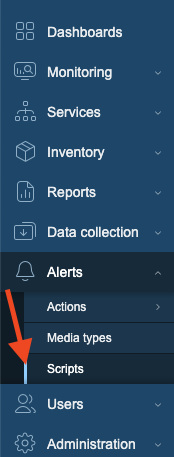
9.5 Scripts menu
You should already see a few existing script like Ping, Traceroute, .... that's
normal those where created with the installation of Zabbix. Press the button Create scripts
on the top right corner. A now form will popup where we will configure our maintenance
script. Fill out the following fields:
- Name: Create maintenance no data collection
- Scope : Manual host action
- Menu path : Maintenance
- Type : Script
- Execute on : Zabbix proxy or server
- Commands :
/usr/bin/zabbix-maintenance.py create "{HOST.HOST}" {MANUALINPUT} no
At the bottom we have a tab Advanced configuration Click on this and extra configuration
options will appear.
As you probably noticed we used in our Command the macro {MANUALINPUT} this
will be used to gather information from a user prompt. This allows us to ask
the user to fill in the time he wants to place the host in maintenance.
- Enable user input : yes
- Input prompt : How many minutes do you want to place the host in maintenance ?
- Input type : String (A dropdown box can also be used in case you have a list of options)
- Default string : 60 (but we can use anything this will just be the default answer)
- Input validation rule :
(\d+)(our regex in perl to only allow digits) - Enable confirmation : yes
- Confirmation text : Are you sure ?
If everything went well you should end up with a similar looking page :
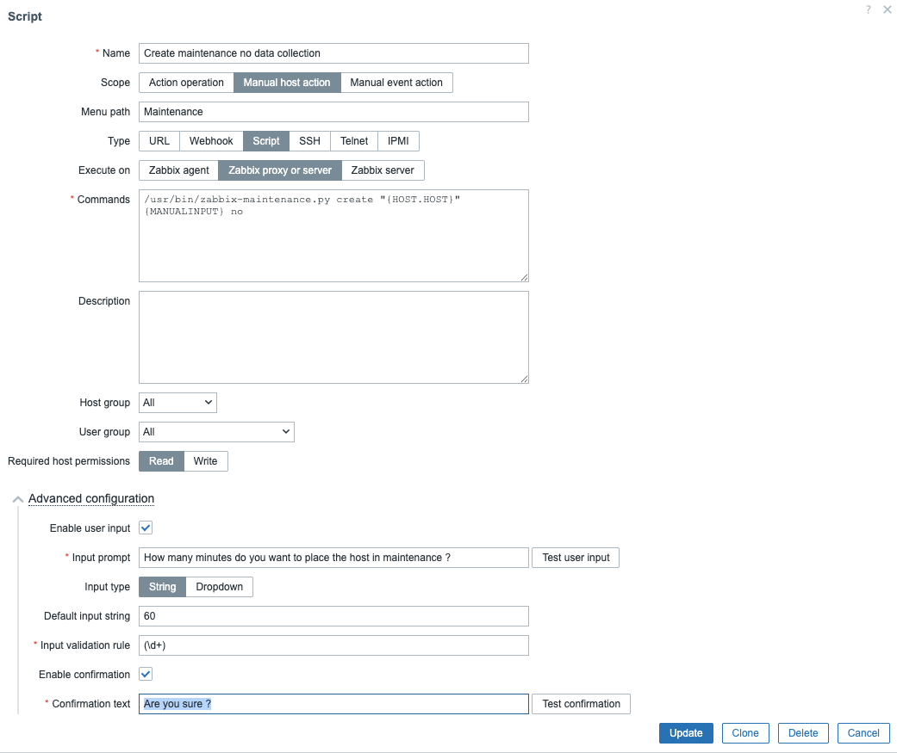
9.6 Script form
When your are ready press Add at the bottom of the form. Let's test our script
to see if it works.
Testing the frontend script
In Zabbix go to the menu Monitoring => Hosts and click on the host Zabbix server
and from the scripts menu select Maintenance and click on the sub Menu
Create maintenance no data collection. You should see a popup asking you how
many minutes you like to place the host in maintenance.
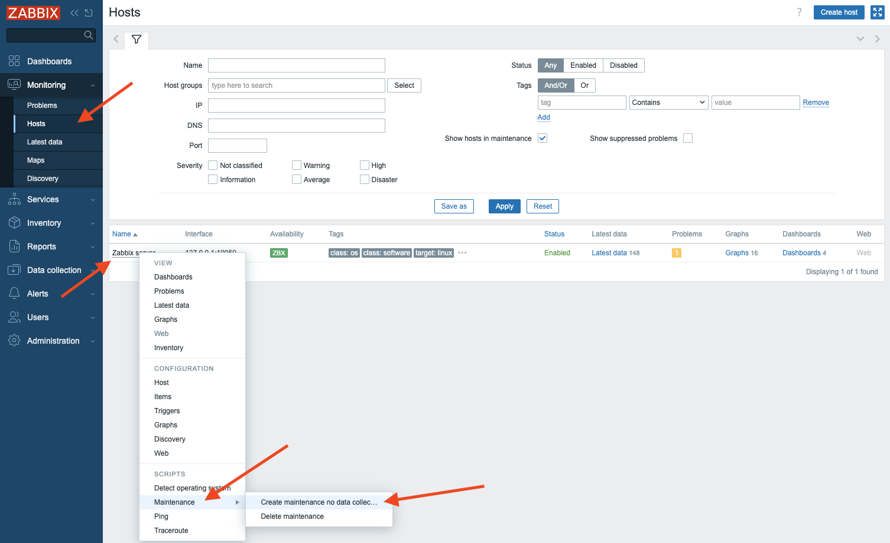
9.7 Create maintenance
When we click continue however we get a popup telling us that Zabbix cannot execute the script.
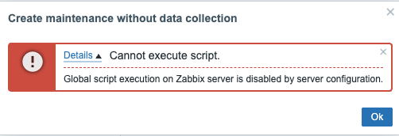
9.8 Error executing script
This error is normal Zabbix has an option in the configuration file of the Zabbix server
and the proxy that blocks the execution of global scripts.
We get a notification that Zabbix cannot execute the script. The config file
has an option to block global executions by default in the server or proxy config
activate the option "EnableGlobalScripts=1". Go to the Zabbix server configuration
file with you favourite editor and enable the parameter and restart the server service.
If all goes well this time you will see a popup telling you it was successful this time.
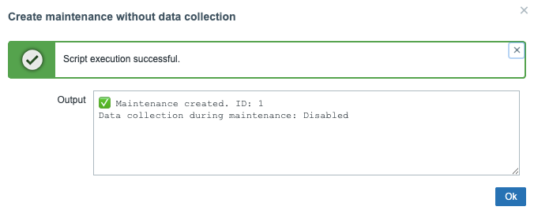
9.9 Maintenance successful
When we look in our Zabbix menu under Data collection => Maintenance we can see
that a new maintenance was created for our host with the time we had specified.
This will allow us to create Maintenance windows for hosts from the frontend with
only a few clicks.
Even better we are now able to allow certain non Admin users to create maintenance periods
for hosts without the need to give special access rights or create special profiles.
We have in our config of our script the option to limit the use of this frontend script
to certain Host groups and User groups.
Tip
You can now create the same script but add the option yes instead of no
when it comes to data collection and you can also create a script to delete
the maintenance period by just replacing create with delete and remove
all options after "{HOST.HOST}". This way you are able to create maintenance periods
and delete them when not needed anymore per host.
Conclusion
Congratulations! You've reached the end of this journey into Zabbix frontend scripts. By now, you should have a solid understanding of how to create, implement, and manage these tools to extend Zabbix's functionality.
We've covered a lot of ground, from the initial steps of crafting your own scripts to seamlessly integrating them into the Zabbix frontend. You've learned how to gather user input to make your scripts more dynamic and versatile, and, crucially, how to configure user and host permissions to maintain a secure and controlled Zabbix environment.
The ability to tailor Zabbix to your specific needs with frontend scripts is a significant advantage. It allows you to automate repetitive tasks, streamline workflows, and gain deeper insights into your infrastructure. Whether you're automating routine checks, creating custom dashboards, or integrating with external systems, the knowledge you've gained here will enable you to effectively leverage Zabbix.
Remember, the examples and techniques presented in this book provide a foundation. The true power of Zabbix frontend scripts lies in their flexibility and your ability to adapt them to your specific needs. As you continue to explore and experiment, you'll discover new ways to enhance your monitoring capabilities and optimize your Zabbix setup.
Questions
- Why are Zabbix frontend scripts useful?
- What are some ways Zabbix frontend scripts can help automate tasks?
- Why is it important to configure user and host permissions when using Zabbix frontend scripts?
Useful URLs
- https://blog.zabbix.com/setting-up-manual-ticket-creation-using-zabbix-frontend-scripts/15550/
- https://www.zabbix.com/documentation/current/en/manual/web_interface/frontend_sections/administration/scripts
- https://github.com/Trikke76/Zabbix/tree/master/maintenance
Chapter 10 : Discovery
Automating Your Monitoring with Auto Discovery and Active Agent Auto Registration
In this chapter, we'll explore two powerful automation features in Zabbix: auto discovery and active agent auto-registration. These tools are essential for scaling your monitoring efforts by minimizing manual configuration and ensuring new devices and services are seamlessly integrated into your Zabbix environment.
We'll begin with auto discovery, which enables Zabbix to automatically detect and monitor new hosts and services within your network. You'll learn how to configure discovery rules, actions, and conditions to automate the onboarding process, making your monitoring more dynamic and adaptive to changes in your infrastructure.
Next, we'll dive into active agent auto registration, which simplifies the management of Zabbix agents, especially in large or rapidly changing environments. We'll cover how to set up auto-registration rules that allow agents to register themselves with the Zabbix server, reducing administrative overhead and ensuring all relevant data is captured efficiently.
By the end of this chapter, you'll have a thorough understanding of how to leverage auto-discovery and auto-registration to create a more automated, scalable, and efficient monitoring system.
Chapter 11 : Visualisation
Graphs, Dashboards, Reports, Maps and other visualisation
In this chapter, we delve into the heart of Zabbix's visualization capabilities, where data comes to life through intuitive and powerful visual tools. From dynamic graphs that track your system's performance to comprehensive dashboards that provide at-a-glance insights, Zabbix offers a rich set of visualization features to help you understand and manage your infrastructure.
We'll start by exploring graphs, which allow you to monitor metrics over time, helping you spot trends and anomalies with ease. Next, we'll move on to dashboards, where you can aggregate multiple widgets into a single view for a more holistic understanding of your network's health.
Then, we'll discuss reports an essential feature for summarizing and sharing insights with your team or stakeholders. Finally, we'll cover maps, a unique visualization tool that lets you create interactive representations of your network topology, making it easier to pinpoint issues and understand relationships between different components.
By the end of this chapter, you'll have a comprehensive understanding of how to leverage Zabbix's visualization tools to monitor, analyse, and communicate the state of your IT environment effectively. Whether you're a seasoned administrator or just starting with Zabbix, mastering these visual tools will enhance your ability to manage complex infrastructures and ensure optimal performance.
Let's dive into the world of Zabbix visualizations and unlock the full potential of your monitoring setup.
Chapter 12 : Zabbix API
Zabbix API
The Zabbix API is a crucial part for anyone looking to expand the capabilities of their Zabbix environment, automate time-consuming tasks and get information for usage in other systems. In this chapter we will go over various of these capabilities to expand our knowledge of the Zabbix API.
Chapter 13 : Advanced set up and security
Advanced set-up and security
In today's interconnected IT landscape, monitoring systems like Zabbix have become critical infrastructure components, offering visibility into the health and performance of entire networks. However, these powerful monitoring tools also represent potential security vulnerabilities if not properly secured. This chapter will explores the essential combination of SELinux and security best practices to harden your Zabbix deployment against modern threats.
Security is not an optional feature but a fundamental requirement for any monitoring solution. Zabbix, with its extensive reach across your infrastructure, has access to sensitive system information and often operates with elevated privileges. Without proper security controls, a compromised monitoring system can become a launchpad for lateral movement across your network, potentially exposing critical business data and systems.
We'll explore how SELinux's mandatory access control framework provides an additional security layer beyond traditional permissions, and how proper configuration can dramatically reduce your attack surface. You'll learn practical, implementable security measures that balance protection with functionality, ensuring your monitoring capabilities remain intact while defending against both external and internal threats.
Whether you're a system administrator, security professional, or IT manager, understanding these security principles will help you transform your Zabbix deployment from a potential liability into a secure asset within your security architecture.
SELinux and Zabbix
SELinux (Security-Enhanced Linux) provides mandatory access control for Zabbix by enforcing security policies that restrict what the Zabbix processes can do, even when running as root.
SELinux contexts are a core component of how SELinux implements security control. Think of contexts as labels that are assigned to every object in the system (files, processes, ports, etc.). These labels determine what can interact with what.
SELinux Enforcement Mode
For SELinux to actually provide security protection, it needs to be set to "enforcing" mode. There are three possible modes for SELinux:
- Enforcing - SELinux security policy is enforced. Actions that violate policy are blocked and logged.
- Permissive - SELinux security policy is not enforced but violations are logged. This is useful for debugging.
- Disabled - SELinux is completely turned off.
You can check the current SELinux mode with the getenforce command:
This should return : Enforcing
To properly secure Zabbix with SELinux, the system should be in Enforcing mode. If it's not, you can change it temporarily:
Set to enforcing immediately (until reboot)
For permanent configuration, edit /etc/selinux/config and set:
Basic Structure of an SELinux Context
An SELinux context typically consists of four parts:
- User: The SELinux user identity (not the same as Linux users)
- Role: What roles the user can enter
- Type: The domain for processes or type for files (most important part)
- Level: Optional MLS (Multi-Level Security) sensitivity level
When displayed, these appear in the format: user:role:type:level
How Contexts Work in Practice
In the Zabbix SELinux configuration, several security types are defined to control access:
- zabbix_t: The domain in which the Zabbix server process runs
- zabbix_port_t: Type assigned to network ports that Zabbix uses
- zabbix_var_run_t: Type for Zabbix runtime socket files
- httpd_t: The domain for the Apache web server process
The SELinux policy allows specific permissions between these types:
Zabbix server can connect to its own Unix stream sockets Zabbix server can connect to network ports labeled as zabbix_port_t Zabbix server can create and remove socket files in directories labeled as zabbix_var_run_t
The web server (httpd) can connect to Zabbix ports, allowing the web frontend to communicate with the Zabbix server. These permissions ensure Zabbix components can communicate properly while maintaining SELinux security boundaries.
When Zabbix tries to access a file or network resource, SELinux checks if the context of the Zabbix process is allowed to access the context of that resource according to policy rules.
Viewing Contexts
And for the processes:
And for log files
Zabbix-selinux-policy Package
The zabbix-selinux-policy package is a specialized SELinux policy module designed specifically for Zabbix deployments. It provides pre-configured SELinux policies that allow Zabbix components to function properly while running in an SELinux enforced environment.
Key Functions of the Package:
- Pre-defined Contexts : Contains proper SELinux context definitions for Zabbix binaries, configuration files, log directories, and other resources.
- Port Definitions : Registers standard Zabbix ports (like 10050 for agent, 10051 for server) in the SELinux policy so they can be used without triggering denials.
- Access Rules: Defines which operations Zabbix processes can perform, like writing to log files, connecting to databases, and communicating over networks.
- Boolean Toggles: Provides SELinux boolean settings specific to Zabbix that can enable/disable certain functionalities without having to write custom policies.
Benefits of Using the Package:
- Simplified Deployment : Reduces the need for manual SELinux policy adjustments when installing Zabbix.
- Security by Default: Ensures Zabbix operates with minimal required permissions rather than running in permissive mode.
- Maintained Compatibility: The package is updated alongside Zabbix to ensure compatibility with new features.
Installation and Usage
The package is typically installed alongside other Zabbix components:
After installation, the SELinux contexts are automatically applied to standard Zabbix paths and ports. If you use non-standard configurations, you may still need to make manual adjustments. This package essentially bridges the gap between Zabbix's operational requirements and SELinux's strict security controls, making it much easier to run Zabbix securely without compromising on monitoring capabilities.
For Zabbix to function properly with SELinux enabled:
Zabbix binaries and configuration files need appropriate SELinux labels (typically zabbix_t context) Network ports used by Zabbix must be properly defined in SELinux policy Database connections require defined policies for Zabbix to communicate with MySQL/PostgreSQL File paths for monitoring, logging, and temporary files need correct contexts
When issues occur, they typically manifest as denied operations in SELinux audit logs. Administrators can either:
Use audit2allow to create custom policy modules for legitimate Zabbix operations Apply proper context labels using semanage and restorecon commands Configure boolean settings to enable specific Zabbix functionality
This combination creates defense-in-depth by ensuring that even if Zabbix is compromised, the attacker remains constrained by SELinux policies, limiting potential damage to your systems.
Zabbix SELinux Boolean
One of the most convenient aspects of the SELinux implementation for Zabbix is the use of "booleans". simple on/off switches that control specific permissions. These allow you to fine-tune SELinux policies without needing to understand complex policy writing. Key Zabbix booleans include:
- zabbix_can_network: Controls whether Zabbix can initiate network connections
- httpd_can_connect_zabbix: Controls whether the web server can connect to Zabbix
- zabbix_run_sudo: Controls whether Zabbix can execute sudo commands
You can view these settings with:
yaml
getsebool -a | grep zabbix
And you can toggle them as needed with setsebool.
Enable Zabbix network connections (persistent across reboots)
These booleans make it much easier to securely deploy Zabbix while maintaining SELinux protection, as you can enable only the specific capabilities that your Zabbix implementation needs without compromising overall system security.
Creating custom rules
When running Zabbix in environments with SELinux enabled, you may encounter permission issues when Zabbix attempts to execute certain utilities like fping. This occurs because fping uses setuid (SUID) permissions, and SELinux's default policies prevent Zabbix from executing such binaries for security reasons.
There are different solutions to this problem:
- Method 1: Automated Policy Generation :
The most straightforward approach is to use the audit2allow utility to analyse SELinux denial messages and generate appropriate policies:
First, capture the denial events from the audit log:
- Method 2: Manual Policy Creation :
For more control or in situations where audit logs aren't available, you can manually create a custom policy:
Create a policy file named zabbix_fping.te with the following content:
module zabbix_fping 1.0;
require {
type zabbix_t;
type fping_t;
type fping_exec_t;
class file { execute execute_no_trans getattr open read };
class capability net_raw;
}
#============= zabbix_t ==============
allow zabbix_t fping_exec_t:file { execute execute_no_trans getattr open read };
allow zabbix_t self:capability net_raw;
Securing zabbix admin
HTTPS
DB certs
Conclusion
Questions
- Why does SELinux prevent Zabbix from executing fping by default?
- In what situations might you need to create custom SELinux policies for other Zabbix monitoring tools?
- What are the key differences between using audit2allow and manually creating a custom policy module?
Useful URLs
- https://www.zabbix.com/documentation/7.2/en/manual/installation/install_from_packages/rhel?hl=SELinux#selinux-configuration
- https://www.systutorials.com/docs/linux/man/8-zabbix_selinux/
- https://man.linuxreviews.org/man8/zabbix_agent_selinux.8.html
- https://phoenixnap.com/kb/selinux
Securing the frontend
Securing the agent
Storing secrets
Partitioning a Zabbix MariaDB (MySQL) database with Perl
As your Zabbix environment grows, you'll eventually notice that the built-in housekeeper struggles to keep up. This happens because the Zabbix housekeeper works by scanning the database for each history or trend entry that exceeds its configured retention period and deletes them row by row. While this works for smaller setups, as the database grows your housekeeper process will reach a limit as to what it can delete in time.
You can usually see this issue happening when the housekeeper process runs at 100% continuously and the database keeps growing larger. This indicated that the cleanup can't keep pace with incoming data.
PostgreSQL users can use the native TimescaleDB plugin in Zabbix, which handles
historical data retention more efficiently. MariaDB (or MySQL) doesn't have a
similar built-in option.
This is where MariaDB partitioning comes in.
Note
It's recommended to do partitioning right after setting up your Zabbix database. This process is a lot easier on a clean database, than it is on a database that is already is use.
Preparing the database
To begin implementing MariaDB partitioning, you'll need access with super privileges
to your Zabbix database server. Before starting however, if you are going to partition
an existing zabbix database make sure to create a backup of your database. We can
do this in various ways and with various tools, but the built-in mariadb-dump tool
will work perfectly fine.
https://mariadb.com/kb/en/mariadb-dump/
https://mariadb.com/kb/en/mariadb-import/
Make sure to export your database backup to a different server (or disk at least).
Keep in mind, data corruption can happen when performing large scale changes on your DB and as such also with partitioning.
To prevent MariaDB running out of space, also make sure to have a generous amount of free space on your system. Running partitioning when you have no free space left can lead to a corrupted database data. Check your free space with:
Preparing the partitioning
For existing Zabbix databases, partitioning can be a very time-consuming process. It all depends on the size of the database and the resources available to MariaDB-Server.
This is why I always run partitioning in a tmux session. If tmux hasn't been
installed onto your database server yet, do that now.
Now we can issue the tmux command to open a new tmux session:
This opens up an terminal session that will remain active even if our SSH session times out.
Now, let's open up a notepad and prepare our partitions. We’ll be partitioning the following tables:
| Table name | Purpose | Data type |
|---|---|---|
| history | Stores numeric floating point values | |
| history_uint | Stores numeric unsigned values | |
| history_str | Stores text values up to 255 characters | |
| history_text | Stores text values values up to 64kB | |
| history_log | Stores text values up to 64kB with additional log related properties like timestamp | |
| history_bin | Stores binary image data | |
| trends | Stores the min/avg/max/count trends of numeric floating point data | |
| trends_uint | Stores the min/avg/max/count trends of numeric unsigned data |
We first will have first have to determine how long we want to store the information per table. MariaDB partitioning will take over the history and trend storage periods as usually configured in the Zabbix frontend. We will configure these retention periods later in the perl script.
Let's say I want to store my history tables for 31 days and my trend data for
15 months. This allows me to troubleshoot in depth for a month and also audit
my data for little over a year.
Now this is where I open up a notepad and prepare my partitioning commands. Our history tables will be partitioned by day and our trends tables will be partitioned by month.
So, let’s start with our history_uint table:
Prepare history partitioning (assuming today is May 10th 2025)
ALTER TABLE history_uint PARTITION BY RANGE ( clock)
(PARTITION p2025_03_26 VALUES LESS THAN (UNIX_TIMESTAMP("2025-03-27 00:00:00")) ENGINE = InnoDB,
PARTITION p2025_03_27 VALUES LESS THAN (UNIX_TIMESTAMP("2025-03-28 00:00:00")) ENGINE = InnoDB,
PARTITION p2025_03_28 VALUES LESS THAN (UNIX_TIMESTAMP("2025-03-29 00:00:00")) ENGINE = InnoDB,
PARTITION p2025_03_29 VALUES LESS THAN (UNIX_TIMESTAMP("2025-03-30 00:00:00")) ENGINE = InnoDB,
PARTITION p2025_03_30 VALUES LESS THAN (UNIX_TIMESTAMP("2025-04-01 00:00:00")) ENGINE = InnoDB,
PARTITION p2025_04_01 VALUES LESS THAN (UNIX_TIMESTAMP("2025-04-02 00:00:00")) ENGINE = InnoDB,
PARTITION p2025_04_02 VALUES LESS THAN (UNIX_TIMESTAMP("2025-04-03 00:00:00")) ENGINE = InnoDB,
PARTITION p2025_04_03 VALUES LESS THAN (UNIX_TIMESTAMP("2025-04-04 00:00:00")) ENGINE = InnoDB,
PARTITION p2025_04_04 VALUES LESS THAN (UNIX_TIMESTAMP("2025-04-05 00:00:00")) ENGINE = InnoDB,
PARTITION p2025_04_05 VALUES LESS THAN (UNIX_TIMESTAMP("2025-04-06 00:00:00")) ENGINE = InnoDB,
PARTITION p2025_04_06 VALUES LESS THAN (UNIX_TIMESTAMP("2025-04-07 00:00:00")) ENGINE = InnoDB,
PARTITION p2025_04_07 VALUES LESS THAN (UNIX_TIMESTAMP("2025-04-08 00:00:00")) ENGINE = InnoDB,
PARTITION p2025_04_08 VALUES LESS THAN (UNIX_TIMESTAMP("2025-04-09 00:00:00")) ENGINE = InnoDB,
PARTITION p2025_04_09 VALUES LESS THAN (UNIX_TIMESTAMP("2025-04-10 00:00:00")) ENGINE = InnoDB,
PARTITION p2025_04_10 VALUES LESS THAN (UNIX_TIMESTAMP("2025-04-11 00:00:00")) ENGINE = InnoDB,
PARTITION p2025_04_11 VALUES LESS THAN (UNIX_TIMESTAMP("2025-04-12 00:00:00")) ENGINE = InnoDB);
As you can see, I only created 16 partitions here. I could have created 31,
which would have been better perhaps. MariaDB will now add all my older than 2025-03-26
data in that single partition. No problem, but it will take longer for my disk space to
free up this bigger partitioning, after which is will only keep 1 day worth of data
from that point.
I also created a partition in the future, just to have it. The script will handle creating new partitions later for us.
- Creating less than 31 partitions: End up with 1 big partition until it is deleted
- Creating exactly 31 partitions: End up with the ideal set-up immediately, but more to create.
Now, create this ALTER TABLE commands with the partitions for all history tables.
We then do the same for the trends tables:
Prepare trends partitioning (assuming today is May 10th 2025)
ALTER TABLE trends_uint PARTITION BY RANGE ( clock)
(PARTITION p2024_12 VALUES LESS THAN (UNIX_TIMESTAMP("2025-01-01 00:00:00")) ENGINE = InnoDB,
PARTITION p2025_01 VALUES LESS THAN (UNIX_TIMESTAMP("2025-02-01 00:00:00")) ENGINE = InnoDB,
PARTITION p2025_02 VALUES LESS THAN (UNIX_TIMESTAMP("2025-03-01 00:00:00")) ENGINE = InnoDB,
PARTITION p2025_03 VALUES LESS THAN (UNIX_TIMESTAMP("2025-04-01 00:00:00")) ENGINE = InnoDB,
PARTITION p2025_04 VALUES LESS THAN (UNIX_TIMESTAMP("2025-05-01 00:00:00")) ENGINE = InnoDB,
PARTITION p2025_05 VALUES LESS THAN (UNIX_TIMESTAMP("2025-06-01 00:00:00")) ENGINE = InnoDB);
As you can see, here we are partitioning by month instead of by day. Once again, I can create all partitions for 15 months, or less. That's up to us to decide. Prepared this command for all trends tables.
Then it is time to login to MariaDB and start the partitioning. Please do not forget
to use the tmux command as we mentioned earlier.
Login to MariaDB
mariadb -u root -p
Execute the history and trends partitioning commands you prepared in your notepad one by one and make sure to wait for each to finish. As mentioned with large database, be patient. With a clean Zabbix database, this process should be near instant.
Setting up the Perl script
With the partitioning done, we still need to maintain the partitioned setup. MariaDB
will not create new and delete old partitions for us automatically, we need to
use a perl script for this. Years ago, an honorable Zabbix community member wrote
a perl script to maintain the partitioning and the people at Opensource ICT Solutions
have been maintaining it. You can find it on their GitHub repository:
https://github.com/OpensourceICTSolutions/zabbix-mysql-partitioning-perl
Download the script from their GitHub and save it on your Zabbix database server(s) in the following folder:
Script folder (create the folder if it doesn't exist)
/usr/lib/zabbix/
Then make the script executable, so we can create a cronjob later to execute it.
Make the script executable
chmod 750 /usr/lib/zabbix/mysql_zbx_part.pl
Now, let's make sure all the settings in the script are set-up correctly. Edit the script with your favourite editor (yes, nano is also an option).
Edit the script
vim /usr/lib/zabbix/mysql_zbx_part.pl
There are a few lines here we need to edit to make sure the script works. Let's start with our MariaDB login details.
Add login details to the script
Make sure to modify the credentials and socket path to reflect your own Zabbix database setup. The MariaDB username and password can, for instance, match those defined in your Zabbix server configuration file. You can also create a different user for this if preferred.
Also, keep in mind that the MariaDB socket file can vary depending on your distribution. If the default path (/var/lib/mysql/mysql.sock) doesn't apply, update it accordingly. For example, on Ubuntu systems, the socket is often located at /var/run/mysqld/mysql.sock.
Next up, we should edit the settings related to how long we want our data to be stored. We define that in the following block.
Add login details to the script
my $tables = { 'history' => { 'period' => 'day', 'keep_history' => '31'},
'history_log' => { 'period' => 'day', 'keep_history' => '31'},
'history_str' => { 'period' => 'day', 'keep_history' => '31'},
'history_text' => { 'period' => 'day', 'keep_history' => '31'},
'history_uint' => { 'period' => 'day', 'keep_history' => '31'},
'history_bin' => { 'period' => 'day', 'keep_history' => '31'},
'trends' => { 'period' => 'month', 'keep_history' => '15'},
'trends_uint' => { 'period' => 'month', 'keep_history' => '15'},
Keep in mind that history is defined by day here and trends are defined by month.
We also need to change the timezone to match the timezone configured on our Zabbix
database server. As this was written in the the Netherlands, I will use Europe/Amsterdam.
Add correct timezone
my $curr_tz = 'Europe/Amsterdam';
Then the last important step is to make sure that we comment or uncomment some lines
in the script. The script works for both MariaDB and MySQL, as well as for older
versions. It is however not smart enough to detect what to use automatically, but
feel free to open up that pull request!
The script is already out of the box configured for MariaDB, so we don't need
to do anything.
For the MySQL 8.x users comment the following MariaDB lines.
Comment MariaDB
And uncomment the MySQL 8.x lines.
Uncomment MySQL 8.x
Keep in mind, ONLY do this if you are using MySQL 8.x and later. If you are on
MySQL 5.6 or MariaDB do NOT change these lines.
For Zabbix 5.4 and OLDER versions also make sure to uncomment the indicated lines. But do not do this for Zabbix 6.0 and higher though.
Uncomment for Zabbix 5.4 and older only
For Zabbix 6.4 and OLDER versions also make sure to comment the following line. Do not do this for Zabbix 7.0 and higher though:
Uncomment for Zabbix 6.4 and older only
'history_bin' => { 'period' => 'day', 'keep_history' => '60'},
We also need to install some Perl dependencies to make sure we can execute the script.
Install dependencies
Red Hat-Based
Debian-basedIf perl-DateTime isn't available on your Red Hat 7.x installation make sure to install the powertools repo.
Install correct repository
Red Hat 7 based
Red Hat 9 based
Genuine Red Hat
Oracle Linux
Then the last step is to add a cronjob to execute the script everyday.
Open crontab
crontab -e
Add the following line to create the cronjob.
Create cronjob
55 22 * * * /usr/lib/zabbix/mysql_zbx_part.pl >/dev/null 2>&1
Execute the script manually to test.
Manual script execution for testing
perl /usr/lib/zabbix/mysql_zbx_part.pl
Then we can check and see if it worked.
Check the script log
journalctl -t mysql_zbx_part
This will give you back a list of created and deleted partitions if you've done everything right. Make sure to check this command again tomorrow, to make sure the cronjob is working as expected.
Partitioning PostgreSQL with TimescaleDB
If you're familiar with partitioning a Zabbix database using MySQL or any of the other forks like MariaDB, you're likely aware of the complexity involved, which often requires Perl scripts and manual database operations. Fortunately, PostgreSQL offers a much simpler and more streamlined approach. With the TimescaleDB extension, partitioning is fully automated. This extension is not only powerful and efficient, it is also the only method officially supported by Zabbix for database partitioning. TimescaleDB takes care of the underlying logic, freeing you from custom scripts and manual tweaks. For this reason, PostgreSQL could be the preferred and most convenient option for managing large scale Zabbix environments.
Installing TimescaleDB
First, make sure to download TimescaleDB from the correct source: https://docs.timescale.com/self-hosted/latest/install/. Avoid using the version available in the standard PostgreSQL package repository, as it is outdated and not suitable for Zabbix.
TimescaleDB comes in two editions: one released under the Apache license and the other as the Community edition. For Zabbix, the Community edition is the recommended choice. It includes all advanced features such as native compression, which are essential for efficient long term data storage and performance in larger environments.
Info
To use TimescaleDB with Zabbix, make sure PostgreSQL is installed from the official PostgreSQL community repositories, as described in our setup guide. Do not use the PostgreSQL version provided by Red Hat or its derivatives. The TimescaleDB extension is not compatible with that version, and attempting to use it will lead to failure in the configuration.
Note
Always check in the Zabbix documentation before you start what version of PostgreSQL is supported and what version of the TimescaleDB is supported that way you don't install any unsupported version that could run you into issues. https://docs.timescale.com/self-hosted/latest/install/installation-linux/#supported-platforms
Add the TimescaleDB repository
adding the repository
Red Hat
sudo tee /etc/yum.repos.d/timescale_timescaledb.repo <<EOL
[timescale_timescaledb]
name=timescale_timescaledb
baseurl=https://packagecloud.io/timescale/timescaledb/el/$(rpm -E %{rhel})/\$basearch
repo_gpgcheck=1
gpgcheck=0
enabled=1
gpgkey=https://packagecloud.io/timescale/timescaledb/gpgkey
sslverify=1
sslcacert=/etc/pki/tls/certs/ca-bundle.crt
metadata_expire=300
EOL
Install TimescaleDB
Install TimescaleDB
Red Hat
UbuntuNote
Of course, you need to match the TimescaleDB version to the version of PostgreSQL you installed. For example, if you are using PostgreSQL 14, you must install the corresponding TimescaleDB packages for version 14. The installation would look like this:
Using mismatched versions can lead to compatibility issues, so always make sure the TimescaleDB packages align with your PostgreSQL version.Warning
Configure TimescaleDB
The next step is to load the TimescaleDB extension into your PostgreSQL database and tune the configuration. There are two ways to do this: the automated way and the manual way.
TimescaleDB provides a tuning script that analyses your system and applies recommended settings to optimize performance. On Red Hat based systems, you can run:
For Ubuntu and Debian based systems, simply run:
This script will suggest configuration changes and can update your postgresql configuration file automatically. If you prefer to tune the settings manually, which is often recommended for experienced users, you will need to edit your postgresql configuration file yourself.
At a minimum, make sure to add the following line at the end of the file:
Let's load the library
Red Hat
UbuntuConfigure Zabbix for timescaledb
Next, we connect to the Zabbix database as the user zabbixsrv, or whichever database
user you have configured earlier, and create the TimescaleDB extension. However,
before doing this, it is strongly recommended to stop the Zabbix server. This will
prevent the application from interfering with the database during the process, which
could otherwise cause locks or unexpected behavior.
Create timescaledb extension
Red Hat
UbuntuMake sure the extension is installed by running \dx.
zabbix=> \dx
List of installed extensions
Name | Version | Schema | Description
-------------+---------+------------+---------------------------------------------------------------------------------------
plpgsql | 1.0 | pg_catalog | PL/pgSQL procedural language
timescaledb | 2.20.3 | public | Enables scalable inserts and complex queries for time-series data (Community Edition)
(2 rows)
zabbix=>
Patch Zabbix database
While still connected to the Zabbix database, you can now apply the TimescaleDB patch. This patch will migrate your existing history, trends, and audit log tables to the TimescaleDB format. Depending on the amount of existing data, this process may take some time.
Run the following command inside the database session:
The schema.sql script adjusts several important housekeeping parameters:
- Override item history period
- Override item trend period
To use partitioned housekeeping for history and trends, both of these options must be enabled. However, it is also possible to enable them individually, depending on your requirements.
In addition, the script sets two TimescaleDB specific parameters:
- Enable compression
- Compress records older than 7 days
These settings help reduce the size of historical data and improve long term performance.
Let's have a look at them go in our menu to Administration -> Housekeeping
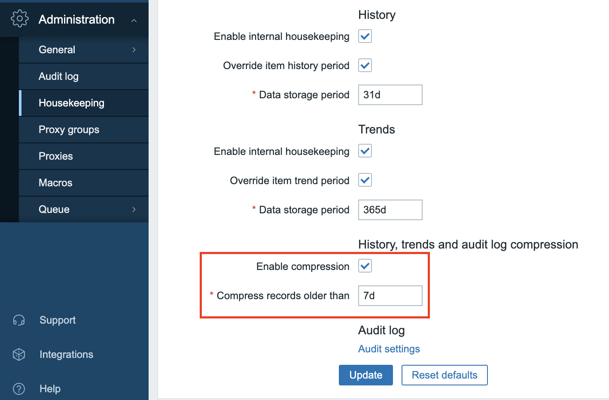
13.1 housekeeper settings
Warning
When running the `schema.sql` script on TimescaleDB version 2.9.0 or higher,
you may see warning messages indicating that certain best practices are not
being followed. These warnings can be safely ignored. They do not affect the
outcome of the configuration process.
As long as everything is set up correctly, the script will complete without
issue. You should see the following confirmation at the end:
Conclusion
Using TimescaleDB with PostgreSQL is the only officially supported method for database partitioning in Zabbix. It replaces complex manual setups with automated, efficient handling of historical and trend data. Features like native compression and time based partitioning significantly reduce storage usage and improve query performance.
By installing PostgreSQL from the correct repository, tuning it properly, and applying the TimescaleDB schema patch, you ensure that Zabbix can scale reliably with minimal maintenance overhead. This setup not only optimizes performance but also prepares your environment for long term growth and data retention.
Questions
- What are the key advantages of using TimescaleDB compared to partitioning with MySQL or MariaDB?
- What might go wrong if you install PostgreSQL from the default Red Hat repositories when planning to use TimescaleDB?
- How does enabling compression in TimescaleDB benefit your Zabbix installation?
Useful URLs
Chapter 14 : Real world examples
Zabbix real world examples
In this book we have learned a lot about our Zabbix environment, but most of it is building the foundation to start doing it on your own. From time to time you will encounter an implementation in a Zabbix environment that uses out of the box thinking or is just so simple you can't believe you never thought of it.
This chapter aims to provide you a collection of interesting things people have built and things you absolutely have to know exist.